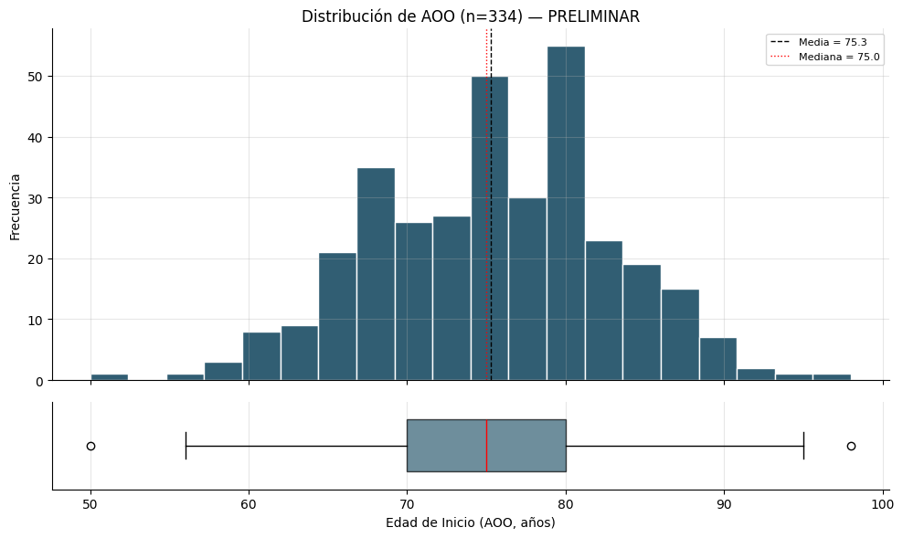
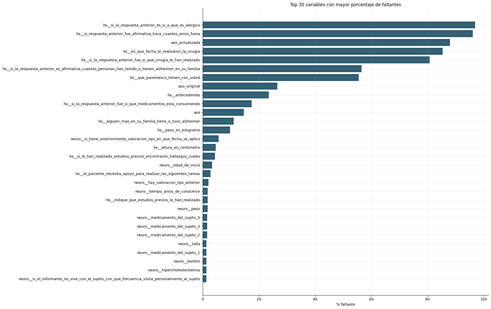
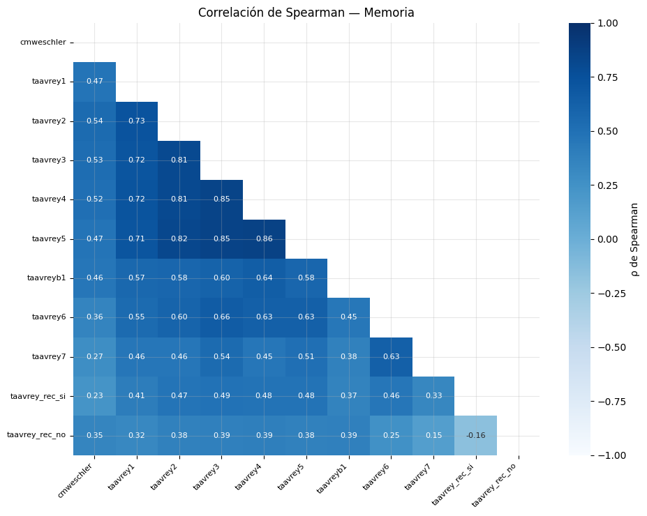
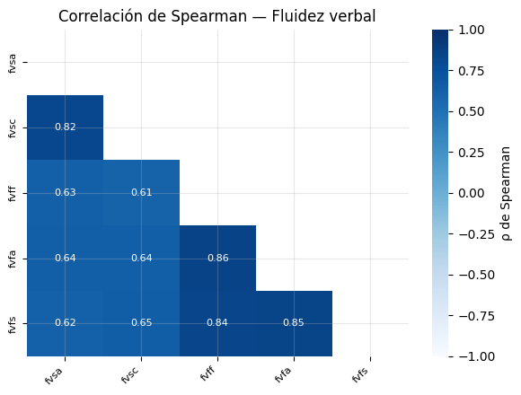
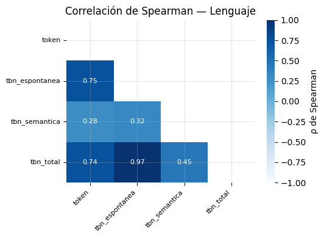
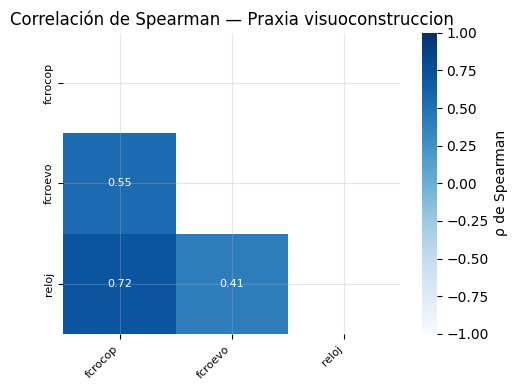
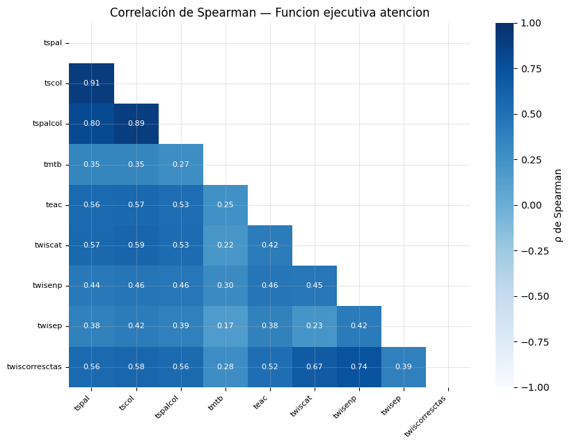
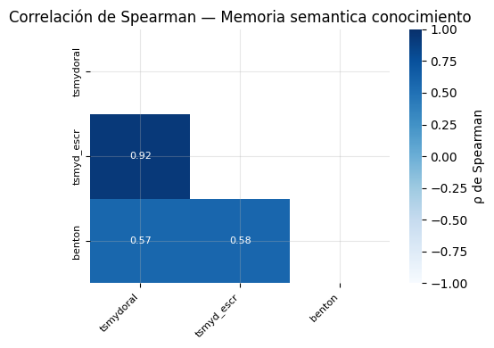
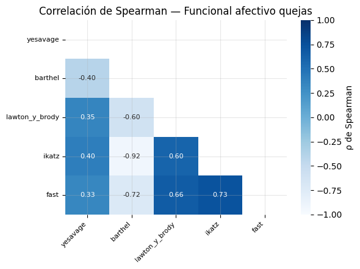

Preprocesamiento - Limpieza e integración de datos#
Este cuaderno toma los tres archivos crudos, los integra en una sola cohorte y deja la base lista para el análisis. Toma como entrada los archivos: hxgen.xlsx, neuropsicologia-casos.xlsx, moca.xlsx.
Reglas metodológicas
hxgen.xlsxfija la cohorte maestra (391 pacientes); las demás fuentes se unen conLEFT JOIN.La AOO no se imputa:
base_aoocontiene solo los pacientes con AOO válida.Reducción neuropsicológica por redundancia (|ρ| ≥ 0.80), conservando 9 indicadores representativos.
1. Preparación del entorno#
Se proceden a cargar librerías, establecer configuraciones y controlar la reproducibilidad con RANDOM_STATE = 42.
#%pip install pandas numpy matplotlib scipy statsmodels scikit-learn openpyxl
from pathlib import Path
import re
import unicodedata
import warnings
import pickle
import numpy as np
import pandas as pd
import seaborn as sns
import matplotlib.pyplot as plt
from scipy import stats
import statsmodels.api as sm
from statsmodels.stats.multitest import multipletests
from sklearn.preprocessing import StandardScaler
from sklearn.decomposition import PCA
from sklearn.cluster import KMeans
from sklearn.metrics import silhouette_score
import openpyxl
warnings.filterwarnings("ignore")
pd.set_option("display.max_columns", 200)
pd.set_option("display.max_rows", 300)
pd.set_option("display.max_colwidth", 120)
RANDOM_STATE = 42
np.random.seed(RANDOM_STATE)
#Para los gráficos
plt.rcParams.update({
"figure.figsize": (7, 4.5),
"axes.spines.top": False,
"axes.spines.right": False,
"axes.grid": True,
"grid.alpha": 0.3,
"font.size": 10,
})
print("Entorno cargado correctamente.")
Entorno cargado correctamente.
2. Carga de archivos#
Se cargan los tres archivos que contienen la cohorte: neuropsicologia-casos.xlsx, moca.xlsx, hxgen.xlsx. Los cuales tienen información sobre las características sociodemográficas y neuropsicológicas de los pacientes, puntaje en la Evaluación Cognitiva Montreal (MOCA) y su historia clínica.
DATA_DIR = Path("datos")
PATH_NEURO = DATA_DIR / "neuropsicologia-casos.xlsx"
PATH_MOCA = DATA_DIR / "moca.xlsx"
PATH_HXGEN = DATA_DIR / "hxgen.xlsx"
df_neuro_raw = pd.read_excel(PATH_NEURO)
df_moca_raw = pd.read_excel(PATH_MOCA)
df_hxgen_raw = pd.read_excel(PATH_HXGEN)
print("Archivos cargados.")
Archivos cargados.
3. Reconocimiento inicial de cada fuente#
Antes de limpiar, transformar o unir, revisemos:
shapeheadtailcolumnsinfotipos de datos
cardinalidad
from funciones.funciones import *
inspeccion_inicial(df_neuro_raw, "NEUROPSICOLOGÍA")
NEUROPSICOLOGÍA
399 filas × 123 columnas
Primeras filas
| CODIGO | genero | Dx | mes y año de nacimiento | EDAD | IDIOMA | OTRO IDOMA | Nivel educativo | Estado civil | Estado Habitacional | Nivel de independencia | Tipo de residencia | Lateralidad | Relación del Informante | Tiempo (años de conocerce) | ¿Vive el informante con el sujeto? | Si el informante no vive con el sujeto, ¿con qué frecuencia visita personalmente al sujeto? | Si el informante no vive con el sujeto, ¿con qué frecuencia tiene contacto telefónico con él? | ¿Hay miembros afectados de la familia (padres biológicos, hermanos consanguíneos completos (comparten ambos padres), o hijos biológicos)? | Familiar afectado | Edad de inicio | Edad de inicio actualizada | Peso | Talla | MEDICAMENTO DEL SUJETO 1 | MEDICAMENTO DEL SUJETO 2 | MEDICAMENTO DEL SUJETO 3 | MEDICAMENTO DEL SUJETO 4 | MEDICAMENTO DEL SUJETO 5 | MEDICAMENTO DEL SUJETO 6 | MEDICAMENTO DEL SUJETO 7 | MEDICAMENTO DEL SUJETO 8 | MEDICAMENTO DEL SUJETO 9 | El sujeto ha fumado en los pasados 30 días | ¿El sujeto ha fumado más de 100 cigarros / cigarrillos en su vida? | Número total de años que ha fumado el sujeto (99 = desconocido): | Ataque cardiaco o paro cardíaco | Fibrilación auricular | Angioplastía/ endarterectomía/ stent | Bypass cardíaco/coronario | Marcapasos y/o desfibrilador | Insuficiencia cardíaca congestiva | ENFERMEDAD CEREBRO-VASCULAR (ECV) | PARKINSON | CONVULSIONES | TRAUMATISMO DE CRÁNEO-ENCEFÁLICO (TCE) | DIABETES | CANCER | Hipercholesterolemia | Hipertensión arterial | NIVELES DE VITAMINA D | Deficiencia de B12 | Enfermedad tiroidea | Artritis | Artrosis | Osteoporosis | Incontinencia — urinaria | Incontinencia — fecal | Apnea del sueño U OTRO | Trastorno de estrés postraumático (TEPT) | Trastorno bipolar | Esquizofrenia | Depresión | Ansiedad | Trastorno obsesivo-compulsivo (TOC) | Trastornos neuropsiquiátricos del desarrollo (por ejemplo, trastorno del espectro autista (TEA), déficit de atención con hiperactividad (TDAH), dislexia) | Estudio Cerebral Electroencefalograma (EEG) | ¿Hay valoración NPS anterior? | Si tiene anteriormente valoración NPS ¿en que fecha se aplico? | MMSE | CMWESCHLER | FVSa | Perdida Categoria FVSA | Perseveraciones FVSA | FVSc | Perdida Categoria FVSC | Perseveraciones FVSC | FVFf | Perdida Categoria FVFf | Perseveraciones FVFf | FVFa | Perdida Categoria FVFa | Perseveraciones FVFa | FVFs | Perdida Categoria FVFs | Perseveraciones FVFs | FCROCOP | FCROEVO | TOKEN | TAAVREY1 | TAAVREY2 | TAAVREY3 | TAAVREY4 | TAAVREY5 | TAAVREYB1 | TAAVREY6 | TAAVREY7 | TAAVREY REC si | TAAVREY REC no | TBN espontanea | TBN semántica | TBN total | TSPAL | TSCOL | TSPALCOL | TMTA | TMTB | TSMYDORAL | TSMYD ESCR | TEAC | BENTON | RELOJ | TWISCAT | TWISENP | TWISEP | TWISCORRESCTAS | QUEJAS SUBJETIVAS | YESAVAGE | BARTHEL | LAWTON Y BRODY | IKATZ | FAST | ESC DETERIOROGLOBAL |
|---|---|---|---|---|---|---|---|---|---|---|---|---|---|---|---|---|---|---|---|---|---|---|---|---|---|---|---|---|---|---|---|---|---|---|---|---|---|---|---|---|---|---|---|---|---|---|---|---|---|---|---|---|---|---|---|---|---|---|---|---|---|---|---|---|---|---|---|---|---|---|---|---|---|---|---|---|---|---|---|---|---|---|---|---|---|---|---|---|---|---|---|---|---|---|---|---|---|---|---|---|---|---|---|---|---|---|---|---|---|---|---|---|---|---|---|---|---|---|---|---|---|---|
| 28 | 0 | 1 | 1975-12-03 00:00:00 | 68 | 2 | 2 | 0.000000 | 7 | 7 | 2.000000 | 1.000000 | 2 | 3 | 40 | 1 | nan | nan | 0 | 0 | 67 AÑOS | 0 | 68 | 1.650000 | - | - | - | - | - | - | - | - | - | 0 | 0 | 0 | 0 | 0.000000 | 0 | 0 | 0 | 0.000000 | 0.000000 | 0.000000 | 0 | 0 | 0 | 0.000000 | 0.000000 | 0.000000 | 0 | 0 | 0 | 0 | 0 | 0 | 0.000000 | 0 | 0 | 0.000000 | 0 | 0.000000 | 0.000000 | 0 | 0 | 0 | 1 | 0 | - | 12 | - | 2 | 0 | 0 | 2 | 0 | 0 | 1 | 0 | 0 | 1 | 0 | 0 | 1 | 0 | 0 | 3 | 0 | - | 2 | 3 | 4 | 3 | 4 | 3 | 3 | 1 | 0 | 15 | 12 | 3 | 15 | - | - | - | - | - | - | - | - | 0 | 2 | 0 | 84 | 20 | 24 | 3 | 6 | 50 | 2 | 0 | 4 | 3.000000 |
| 30 | 1 | 1 | 1935-11-11 00:00:00 | 87 | 2 | 2 | 0.000000 | 1 | 3 | 2.000000 | 1.000000 | 2 | 2 | 48 | 1 | - | - | 0 | 0 | 86 AÑOS | 0 | 45 | 1.600000 | MEMANTINA | ALODIPINA | LEVOTIROCINA | - | - | - | - | - | - | 0 | 0 | 3 AÑOS | 0 | 0.000000 | 0 | 0 | 0 | 0.000000 | 0.000000 | 0.000000 | 0 | 0 | 0 | 0.000000 | 0.000000 | 1.000000 | 0 | 0 | 1 | 0 | 0 | 0 | 0.000000 | 0 | 0 | 0.000000 | 0 | 0.000000 | 0.000000 | 0 | 0 | 0 | 1 | 0 | - | 17 | 0 | 0 | 0 | 0 | 0 | 0 | 0 | 0 | 0 | 0 | 0 | 0 | 0 | 0 | 0 | 0 | 1 | 0 | 16 | 1 | 1 | 2 | 2 | 4 | 1 | 4 | 0 | 15 | 1 | 5 | 0 | 5 | 21 | 8 | 3 | 180 | 0 | 0 | 0 | 0 | 0 | 0 | 1 | 8 | 32 | 8 | 0 | 16 | 50 | 2 | 0 | 4 | 4.000000 |
| 55 | 1 | 1 | 1938-03-02 00:00:00 | 83 | 2 | 2 | 0.000000 | 5 | 5 | 2.000000 | 1.000000 | 2 | 2 | 56 | 1 | - | - | 0 | 0 | 77 | 0 | 40 | 1.600000 | SERTRALINA 50 | CLOZAPINA 25 | - | - | - | - | - | - | - | 0 | 0 | 0 | 0 | 0.000000 | 0 | 0 | 0 | 0.000000 | 0.000000 | 0.000000 | 0 | 0 | 0 | 0.000000 | 0.000000 | 0.000000 | 0 | 0 | 0 | 0 | 0 | 0 | 0.000000 | 0 | 0 | 0.000000 | 0 | 0.000000 | 0.000000 | 1 | 0 | 0 | 1 | 0 | - | 0 | 0 | 0 | 0 | 0 | 0 | 0 | 0 | 0 | 0 | 0 | 0 | 0 | 0 | 0 | 0 | 0 | 0 | 0 | 0 | 0 | 0 | 0 | 0 | 0 | 0 | 0 | 0 | 0 | 0 | 0 | 0 | 0 | 0 | 0 | 0 | 0 | 0 | 0 | 0 | 0 | 0 | 0 | 0 | 0 | 0 | 0 | 3 | 16 | 0 | 3 | 6 | 4 | 4.000000 |
| 266 | 1 | 1 | 1939-12-28 00:00:00 | 84 | 2 | 2 | 0.000000 | 2 | 3 | 3.000000 | 1.000000 | 2 | 2 | 65 | 1 | 1 | 1 | 0 | - | 79 | 0 | 68 | 157 | LOSARTAN | LEVOTIROXINA | RIVASTIGMINA | MEMANTINA | - | - | - | - | - | 0 | 0 | 0 | 0 | 0.000000 | 0 | 0 | 0 | 0.000000 | 0.000000 | 0.000000 | 0 | 0 | 0 | 0.000000 | 0.000000 | 1.000000 | 0 | 0 | 1 | 0 | 1 | 0 | 0.000000 | 0 | 0 | 0.000000 | 0 | 0.000000 | 0.000000 | 0 | 0 | 0 | 1 | 0 | - | 11 | 0 | 4 | 1 | 0 | 5 | 0 | 0 | 2 | 1 | 0 | 2 | 2 | 0 | 0 | 1 | 0 | 0 | 0 | 16 | 1 | 2 | 2 | 3 | 4 | 2 | 0 | 0 | 0 | 15 | 23 | 2 | 25 | 6 | 11 | 10 | 0 | 0 | 0 | 0 | 0 | 0 | 2 | 0 | 11 | 20 | 17 | 2 | 1 | 35 | 3 | 3 | 4 | 4.000000 |
| 267 | 0 | 1 | 1938-06-13 00:00:00 | 85 | 2 | 2 | 0.000000 | 1 | 3 | 2.000000 | 1.000000 | 2 | 4 | 13 | 1 | 1 | 1 | 0 | - | 82 | 0 | 54 | 158 | QUETIAPINA | SERTRALINA | RIVASTIGIMINA | MEMANTINA | - | - | - | - | - | 0 | 0 | 0 | 0 | 0.000000 | 0 | 0 | 0 | 0.000000 | 0.000000 | 0.000000 | 0 | 0 | 0 | 0.000000 | 0.000000 | 0.000000 | 0 | 0 | 0 | 0 | 0 | 0 | 0.000000 | 0 | 0 | 0.000000 | 0 | 0.000000 | 0.000000 | 0 | 0 | 0 | 1 | 0 | - | 0 | 0 | 0 | 0 | 0 | 0 | 0 | 0 | 0 | 0 | 0 | 0 | 0 | 0 | 0 | 0 | 0 | 2 | 0 | 0 | 0 | 0 | 0 | 0 | 0 | 0 | 0 | 0 | 0 | 0 | 21 | 0 | 0 | 0 | 0 | 0 | 0 | 0 | 0 | 0 | 0 | 1 | 0 | 0 | 0 | 0 | 0 | 31 | 16 | 50 | 2 | 1 | 4 | 4.000000 |
Últimas filas
| CODIGO | genero | Dx | mes y año de nacimiento | EDAD | IDIOMA | OTRO IDOMA | Nivel educativo | Estado civil | Estado Habitacional | Nivel de independencia | Tipo de residencia | Lateralidad | Relación del Informante | Tiempo (años de conocerce) | ¿Vive el informante con el sujeto? | Si el informante no vive con el sujeto, ¿con qué frecuencia visita personalmente al sujeto? | Si el informante no vive con el sujeto, ¿con qué frecuencia tiene contacto telefónico con él? | ¿Hay miembros afectados de la familia (padres biológicos, hermanos consanguíneos completos (comparten ambos padres), o hijos biológicos)? | Familiar afectado | Edad de inicio | Edad de inicio actualizada | Peso | Talla | MEDICAMENTO DEL SUJETO 1 | MEDICAMENTO DEL SUJETO 2 | MEDICAMENTO DEL SUJETO 3 | MEDICAMENTO DEL SUJETO 4 | MEDICAMENTO DEL SUJETO 5 | MEDICAMENTO DEL SUJETO 6 | MEDICAMENTO DEL SUJETO 7 | MEDICAMENTO DEL SUJETO 8 | MEDICAMENTO DEL SUJETO 9 | El sujeto ha fumado en los pasados 30 días | ¿El sujeto ha fumado más de 100 cigarros / cigarrillos en su vida? | Número total de años que ha fumado el sujeto (99 = desconocido): | Ataque cardiaco o paro cardíaco | Fibrilación auricular | Angioplastía/ endarterectomía/ stent | Bypass cardíaco/coronario | Marcapasos y/o desfibrilador | Insuficiencia cardíaca congestiva | ENFERMEDAD CEREBRO-VASCULAR (ECV) | PARKINSON | CONVULSIONES | TRAUMATISMO DE CRÁNEO-ENCEFÁLICO (TCE) | DIABETES | CANCER | Hipercholesterolemia | Hipertensión arterial | NIVELES DE VITAMINA D | Deficiencia de B12 | Enfermedad tiroidea | Artritis | Artrosis | Osteoporosis | Incontinencia — urinaria | Incontinencia — fecal | Apnea del sueño U OTRO | Trastorno de estrés postraumático (TEPT) | Trastorno bipolar | Esquizofrenia | Depresión | Ansiedad | Trastorno obsesivo-compulsivo (TOC) | Trastornos neuropsiquiátricos del desarrollo (por ejemplo, trastorno del espectro autista (TEA), déficit de atención con hiperactividad (TDAH), dislexia) | Estudio Cerebral Electroencefalograma (EEG) | ¿Hay valoración NPS anterior? | Si tiene anteriormente valoración NPS ¿en que fecha se aplico? | MMSE | CMWESCHLER | FVSa | Perdida Categoria FVSA | Perseveraciones FVSA | FVSc | Perdida Categoria FVSC | Perseveraciones FVSC | FVFf | Perdida Categoria FVFf | Perseveraciones FVFf | FVFa | Perdida Categoria FVFa | Perseveraciones FVFa | FVFs | Perdida Categoria FVFs | Perseveraciones FVFs | FCROCOP | FCROEVO | TOKEN | TAAVREY1 | TAAVREY2 | TAAVREY3 | TAAVREY4 | TAAVREY5 | TAAVREYB1 | TAAVREY6 | TAAVREY7 | TAAVREY REC si | TAAVREY REC no | TBN espontanea | TBN semántica | TBN total | TSPAL | TSCOL | TSPALCOL | TMTA | TMTB | TSMYDORAL | TSMYD ESCR | TEAC | BENTON | RELOJ | TWISCAT | TWISENP | TWISEP | TWISCORRESCTAS | QUEJAS SUBJETIVAS | YESAVAGE | BARTHEL | LAWTON Y BRODY | IKATZ | FAST | ESC DETERIOROGLOBAL |
|---|---|---|---|---|---|---|---|---|---|---|---|---|---|---|---|---|---|---|---|---|---|---|---|---|---|---|---|---|---|---|---|---|---|---|---|---|---|---|---|---|---|---|---|---|---|---|---|---|---|---|---|---|---|---|---|---|---|---|---|---|---|---|---|---|---|---|---|---|---|---|---|---|---|---|---|---|---|---|---|---|---|---|---|---|---|---|---|---|---|---|---|---|---|---|---|---|---|---|---|---|---|---|---|---|---|---|---|---|---|---|---|---|---|---|---|---|---|---|---|---|---|---|
| 641 | 0 | 1 | 1940-06-03 00:00:00 | 78 | 2 | 2 | 99.000000 | 1 | 6 | 3.000000 | 4.000000 | 2 | 5 | 5 | 1 | 1 | 1 | 0 | - | 73 | 0 | 59 | 170 | LOSARTAN | - | - | - | - | - | - | - | - | 0 | 0 | 0 | 0 | 0.000000 | 0 | 0 | 0 | 0.000000 | 0.000000 | 0.000000 | 0 | 0 | 0 | 0.000000 | 0.000000 | 1.000000 | 0 | 0 | 0 | 0 | 0 | 0 | 0.000000 | 0 | 0 | 0.000000 | 0 | 0.000000 | 0.000000 | 0 | 0 | 0 | 1 | 0 | - | 0 | 0 | 0 | 0 | 0 | 0 | 0 | 0 | 0 | 0 | 0 | 0 | 0 | 0 | 0 | 0 | 0 | 0 | 0 | 0 | 0 | 0 | 0 | 0 | 0 | 0 | 0 | 0 | 0 | 0 | 0 | 0 | 0 | 0 | 0 | 0 | 0 | 0 | 0 | 0 | 0 | 0 | 0 | 0 | 0 | 0 | 0 | 3 | 16 | 30 | 3 | 2 | 4 | 4.000000 |
| 645 | 0 | 1 | 1942-05-04 00:00:00 | 82 | 2 | 2 | 99.000000 | 7 | 6 | 4.000000 | 4.000000 | 2 | 5 | 3 | 1 | 1 | 1 | 0 | - | 80 | 0 | - | 150 | - | - | - | - | - | - | - | - | - | 0 | 0 | 0 | 0 | 1.000000 | 0 | 0 | 0 | 0.000000 | 0.000000 | 0.000000 | 0 | 0 | 0 | 0.000000 | 0.000000 | 0.000000 | 0 | 0 | 0 | 0 | 0 | 0 | 0.000000 | 0 | 0 | 0.000000 | 0 | 0.000000 | 0.000000 | 0 | 0 | 0 | 1 | 0 | - | 18 | 2 | 2 | 0 | 0 | 1 | 0 | 0 | 1 | 0 | 0 | 1 | 0 | 0 | 1 | 0 | 0 | 0 | 0 | 7 | 2 | 3 | 2 | 2 | 2 | 2 | 2 | 0 | 2 | 13 | 8 | 0 | 8 | 0 | 0 | 0 | 0 | 0 | 0 | 0 | 5 | 0 | 0 | 0 | 15 | 18 | 15 | 3 | 8 | 10 | 30 | 4 | 4 | 4.000000 |
| 646 | 0 | 1 | 1950-08-21 00:00:00 | 73 | 2 | 2 | 99.000000 | 5 | 6 | 2.000000 | 4.000000 | 2 | 5 | 1 | 1 | 1 | 1 | 0 | - | 71 | 0 | 48 | 166 | SERTRALINA | TRAZADONA | QUETIAPINA | MEMANTINA | ACIDO VALPROCIO | - | - | - | - | 0 | 1 | 4 | 0 | 0.000000 | 0 | 0 | 0 | 0.000000 | 0.000000 | 0.000000 | 0 | 0 | 0 | 0.000000 | 0.000000 | 0.000000 | 0 | 0 | 0 | 0 | 0 | 0 | 0.000000 | 0 | 0 | 0.000000 | 0 | 0.000000 | 0.000000 | 0 | 0 | 0 | 1 | 0 | - | 7 | 0 | 8 | 0 | 1 | 4 | 0 | 2 | 0 | 0 | 0 | 1 | 0 | 0 | 0 | 0 | 0 | 0 | 0 | 16 | 3 | 2 | 4 | 4 | 3 | 1 | 0 | 0 | 4 | 12 | 17 | 5 | 22 | 13 | 15 | 12 | 0 | 0 | 0 | 0 | 11 | 0 | 0 | 0 | 10 | 18 | 20 | 1 | 3 | 50 | 1 | 0 | 3 | 4.000000 |
| 667 | 0 | 1 | 1943-05-11 00:00:00 | 81 | 2 | 2 | 99.000000 | 5 | 6 | 2.000000 | 4.000000 | 2 | 5 | 1 | 1 | 1 | 1 | 0 | - | 80 | 0 | ACIDO VALPROICO | BIPERIDINO | RISPERIDONA | QUETIAPINA | HIDROCLOROTIAZIDA | MESALOZIN | ESCITALOPRAM | - | - | - | - | 0 | 0 | 0 | 0 | 0.000000 | 0 | 0 | 0 | 0.000000 | 0.000000 | 0.000000 | 0 | 0 | 0 | 0.000000 | 0.000000 | 0.000000 | 0 | 0 | 0 | 0 | 0 | 0 | 0.000000 | 0 | 0 | 0.000000 | 0 | 0.000000 | 0.000000 | 0 | 0 | 0 | 1 | 0 | - | 11 | 1 | 0 | 0 | 0 | 5 | 0 | 0 | 0 | 0 | 0 | 0 | 0 | 0 | 0 | 0 | 0 | 2 | 0 | 6 | 0 | 0 | 0 | 0 | 0 | 0 | 0 | 0 | 0 | 15 | 17 | 0 | 17 | 0 | 0 | 0 | 0 | 0 | 0 | 0 | 0 | 0 | 2 | 0 | 0 | 0 | 0 | 2 | 16 | 50 | 3 | 0 | 3 | 4.000000 |
| 226 | 1 | 1 | 1943-06-23 00:00:00 | 79 | 2 | 2 | nan | 2 | 5 | 2.000000 | 1.000000 | 2 | 5 | 4 | 1 | - | - | - | 0 | 72 | 0 | 44 | 1.580000 | QUETIAPINA | MEMANTINA | - | - | - | - | - | - | - | 0 | 0 | 0 | 0 | 0.000000 | 0 | 0 | 0 | 0.000000 | 0.000000 | 0.000000 | 0 | 0 | 0 | 0.000000 | 0.000000 | 0.000000 | 0 | 0 | 0 | 0 | 0 | 0 | 0.000000 | 0 | 0 | 0.000000 | 0 | 0.000000 | 0.000000 | 0 | 0 | 0 | 1 | 0 | - | 19 | 33 | 0 | 3 | 0 | 1 | 2 | 0 | 5 | 1 | 0 | 4 | 0 | 0 | 3 | 0 | 0 | 0 | 0 | 15 | 2 | 2 | 3 | 0 | 0 | 0 | 0 | 0 | 0 | 0 | 18 | 0 | 18 | 41 | 23 | 10 | - | - | - | - | - | - | - | - | - | - | - | 3 | - | 40 | 3 | 2 | 4 | 4.000000 |
Columnas
| N.º | Nombre de la columna |
|---|---|
| 1 | CODIGO |
| 2 | genero |
| 3 | Dx |
| 4 | mes y año de nacimiento |
| 5 | EDAD |
| 6 | IDIOMA |
| 7 | OTRO IDOMA |
| 8 | Nivel educativo |
| 9 | Estado civil |
| 10 | Estado Habitacional |
| 11 | Nivel de independencia |
| 12 | Tipo de residencia |
| 13 | Lateralidad |
| 14 | Relación del Informante |
| 15 | Tiempo (años de conocerce) |
| 16 | ¿Vive el informante con el sujeto? |
| 17 | Si el informante no vive con el sujeto, ¿con qué\nfrecuencia visita personalmente al sujeto? |
| 18 | Si el informante no vive con el sujeto, ¿con qué\nfrecuencia tiene contacto telefónico con él? |
| 19 | ¿Hay miembros afectados de la familia (padres biológicos, hermanos consanguíneos completos (comparten ambos padres), o hijos biológicos)? |
| 20 | Familiar afectado |
| 21 | Edad de inicio |
| 22 | Edad de inicio actualizada |
| 23 | Peso |
| 24 | Talla |
| 25 | MEDICAMENTO DEL SUJETO 1 |
| 26 | MEDICAMENTO DEL SUJETO 2 |
| 27 | MEDICAMENTO DEL SUJETO 3 |
| 28 | MEDICAMENTO DEL SUJETO 4 |
| 29 | MEDICAMENTO DEL SUJETO 5 |
| 30 | MEDICAMENTO DEL SUJETO 6 |
| 31 | MEDICAMENTO DEL SUJETO 7 |
| 32 | MEDICAMENTO DEL SUJETO 8 |
| 33 | MEDICAMENTO DEL SUJETO 9 |
| 34 | El sujeto ha fumado en los pasados 30 días |
| 35 | ¿El sujeto ha fumado más de 100 cigarros / cigarrillos\n en su vida? |
| 36 | Número total de años que ha fumado el sujeto (99 = desconocido): |
| 37 | Ataque cardiaco o paro cardíaco |
| 38 | Fibrilación auricular |
| 39 | Angioplastía/ endarterectomía/ stent |
| 40 | Bypass cardíaco/coronario |
| 41 | Marcapasos y/o desfibrilador |
| 42 | Insuficiencia cardíaca congestiva |
| 43 | ENFERMEDAD CEREBRO-VASCULAR (ECV) |
| 44 | PARKINSON |
| 45 | CONVULSIONES |
| 46 | TRAUMATISMO DE CRÁNEO-ENCEFÁLICO (TCE) |
| 47 | DIABETES |
| 48 | CANCER |
| 49 | Hipercholesterolemia |
| 50 | Hipertensión arterial |
| 51 | NIVELES DE VITAMINA D |
| 52 | Deficiencia de B12 |
| 53 | Enfermedad tiroidea |
| 54 | Artritis |
| 55 | Artrosis |
| 56 | Osteoporosis |
| 57 | Incontinencia — urinaria |
| 58 | Incontinencia — fecal |
| 59 | Apnea del sueño U OTRO |
| 60 | Trastorno de estrés postraumático (TEPT) |
| 61 | Trastorno bipolar |
| 62 | Esquizofrenia |
| 63 | Depresión |
| 64 | Ansiedad |
| 65 | Trastorno obsesivo-compulsivo (TOC) |
| 66 | Trastornos neuropsiquiátricos del desarrollo (por ejemplo, trastorno del espectro autista (TEA), déficit de atención con hiperactividad (TDAH), dislexia) |
| 67 | Estudio Cerebral Electroencefalograma (EEG) |
| 68 | ¿Hay valoración NPS anterior? |
| 69 | Si tiene anteriormente valoración NPS ¿en que fecha se aplico? |
| 70 | MMSE |
| 71 | CMWESCHLER |
| 72 | FVSa |
| 73 | Perdida Categoria FVSA |
| 74 | Perseveraciones FVSA |
| 75 | FVSc |
| 76 | Perdida Categoria FVSC |
| 77 | Perseveraciones FVSC |
| 78 | FVFf |
| 79 | Perdida Categoria FVFf |
| 80 | Perseveraciones FVFf |
| 81 | FVFa |
| 82 | Perdida Categoria FVFa |
| 83 | Perseveraciones FVFa |
| 84 | FVFs |
| 85 | Perdida Categoria FVFs |
| 86 | Perseveraciones FVFs |
| 87 | FCROCOP |
| 88 | FCROEVO |
| 89 | TOKEN |
| 90 | TAAVREY1 |
| 91 | TAAVREY2 |
| 92 | TAAVREY3 |
| 93 | TAAVREY4 |
| 94 | TAAVREY5 |
| 95 | TAAVREYB1 |
| 96 | TAAVREY6 |
| 97 | TAAVREY7 |
| 98 | TAAVREY REC si |
| 99 | TAAVREY REC no |
| 100 | TBN espontanea |
| 101 | TBN semántica |
| 102 | TBN total |
| 103 | TSPAL |
| 104 | TSCOL |
| 105 | TSPALCOL |
| 106 | TMTA |
| 107 | TMTB |
| 108 | TSMYDORAL |
| 109 | TSMYD ESCR |
| 110 | TEAC |
| 111 | BENTON |
| 112 | RELOJ |
| 113 | TWISCAT |
| 114 | TWISENP |
| 115 | TWISEP |
| 116 | TWISCORRESCTAS |
| 117 | QUEJAS SUBJETIVAS |
| 118 | YESAVAGE |
| 119 | BARTHEL |
| 120 | LAWTON Y BRODY |
| 121 | IKATZ |
| 122 | FAST |
| 123 | ESC DETERIOROGLOBAL |
Tipos de datos y valores no nulos
<class 'pandas.core.frame.DataFrame'>
RangeIndex: 399 entries, 0 to 398
Columns: 123 entries, CODIGO to ESC DETERIOROGLOBAL
dtypes: float64(15), int64(34), object(74)
memory usage: 383.5+ KB
Valores únicos por columna
| Nombre de la columna | Valores únicos |
|---|---|
| CODIGO | 398 |
| genero | 2 |
| Dx | 1 |
| mes y año de nacimiento | 385 |
| EDAD | 40 |
| IDIOMA | 1 |
| OTRO IDOMA | 3 |
| Nivel educativo | 10 |
| Estado civil | 6 |
| Estado Habitacional | 7 |
| Nivel de independencia | 6 |
| Tipo de residencia | 4 |
| Lateralidad | 3 |
| Relación del Informante | 6 |
| Tiempo (años de conocerce) | 58 |
| ¿Vive el informante con el sujeto? | 5 |
| Si el informante no vive con el sujeto, ¿con qué\nfrecuencia visita personalmente al sujeto? | 8 |
| Si el informante no vive con el sujeto, ¿con qué\nfrecuencia tiene contacto telefónico con él? | 7 |
| ¿Hay miembros afectados de la familia (padres biológicos, hermanos consanguíneos completos (comparten ambos padres), o hijos biológicos)? | 6 |
| Familiar afectado | 13 |
| Edad de inicio | 52 |
| Edad de inicio actualizada | 23 |
| Peso | 59 |
| Talla | 69 |
| MEDICAMENTO DEL SUJETO 1 | 90 |
| MEDICAMENTO DEL SUJETO 2 | 105 |
| MEDICAMENTO DEL SUJETO 3 | 74 |
| MEDICAMENTO DEL SUJETO 4 | 65 |
| MEDICAMENTO DEL SUJETO 5 | 48 |
| MEDICAMENTO DEL SUJETO 6 | 34 |
| MEDICAMENTO DEL SUJETO 7 | 24 |
| MEDICAMENTO DEL SUJETO 8 | 16 |
| MEDICAMENTO DEL SUJETO 9 | 16 |
| El sujeto ha fumado en los pasados 30 días | 4 |
| ¿El sujeto ha fumado más de 100 cigarros / cigarrillos\n en su vida? | 4 |
| Número total de años que ha fumado el sujeto (99 = desconocido): | 33 |
| Ataque cardiaco o paro cardíaco | 3 |
| Fibrilación auricular | 3 |
| Angioplastía/ endarterectomía/ stent | 1 |
| Bypass cardíaco/coronario | 1 |
| Marcapasos y/o desfibrilador | 2 |
| Insuficiencia cardíaca congestiva | 3 |
| ENFERMEDAD CEREBRO-VASCULAR (ECV) | 3 |
| PARKINSON | 3 |
| CONVULSIONES | 2 |
| TRAUMATISMO DE CRÁNEO-ENCEFÁLICO (TCE) | 1 |
| DIABETES | 5 |
| CANCER | 4 |
| Hipercholesterolemia | 3 |
| Hipertensión arterial | 3 |
| NIVELES DE VITAMINA D | 1 |
| Deficiencia de B12 | 2 |
| Enfermedad tiroidea | 2 |
| Artritis | 2 |
| Artrosis | 2 |
| Osteoporosis | 2 |
| Incontinencia — urinaria | 3 |
| Incontinencia — fecal | 2 |
| Apnea del sueño U OTRO | 2 |
| Trastorno de estrés postraumático (TEPT) | 2 |
| Trastorno bipolar | 1 |
| Esquizofrenia | 3 |
| Depresión | 3 |
| Ansiedad | 2 |
| Trastorno obsesivo-compulsivo (TOC) | 1 |
| Trastornos neuropsiquiátricos del desarrollo (por ejemplo, trastorno del espectro autista (TEA), déficit de atención con hiperactividad (TDAH), dislexia) | 1 |
| Estudio Cerebral Electroencefalograma (EEG) | 2 |
| ¿Hay valoración NPS anterior? | 4 |
| Si tiene anteriormente valoración NPS ¿en que fecha se aplico? | 6 |
| MMSE | 32 |
| CMWESCHLER | 14 |
| FVSa | 23 |
| Perdida Categoria FVSA | 6 |
| Perseveraciones FVSA | 9 |
| FVSc | 23 |
| Perdida Categoria FVSC | 7 |
| Perseveraciones FVSC | 9 |
| FVFf | 18 |
| Perdida Categoria FVFf | 7 |
| Perseveraciones FVFf | 7 |
| FVFa | 19 |
| Perdida Categoria FVFa | 6 |
| Perseveraciones FVFa | 6 |
| FVFs | 20 |
| Perdida Categoria FVFs | 8 |
| Perseveraciones FVFs | 5 |
| FCROCOP | 38 |
| FCROEVO | 18 |
| TOKEN | 39 |
| TAAVREY1 | 8 |
| TAAVREY2 | 10 |
| TAAVREY3 | 10 |
| TAAVREY4 | 13 |
| TAAVREY5 | 12 |
| TAAVREYB1 | 8 |
| TAAVREY6 | 11 |
| TAAVREY7 | 10 |
| TAAVREY REC si | 17 |
| TAAVREY REC no | 17 |
| TBN espontanea | 53 |
| TBN semántica | 15 |
| TBN total | 55 |
| TSPAL | 83 |
| TSCOL | 64 |
| TSPALCOL | 42 |
| TMTA | 138 |
| TMTB | 45 |
| TSMYDORAL | 36 |
| TSMYD ESCR | 30 |
| TEAC | 18 |
| BENTON | 10 |
| RELOJ | 13 |
| TWISCAT | 10 |
| TWISENP | 39 |
| TWISEP | 57 |
| TWISCORRESCTAS | 48 |
| QUEJAS SUBJETIVAS | 9 |
| YESAVAGE | 16 |
| BARTHEL | 12 |
| LAWTON Y BRODY | 14 |
| IKATZ | 7 |
| FAST | 5 |
| ESC DETERIOROGLOBAL | 7 |
inspeccion_inicial(df_moca_raw, "MOCA")
MOCA
791 filas × 2 columnas
Primeras filas
| CODIGO | MoCA |
|---|---|
| 1 | 26 |
| 2 | 28 |
| 3 | 26 |
| 4 | 26 |
| 5 | 27 |
Últimas filas
| CODIGO | MoCA |
|---|---|
| 796 | 26 |
| 797 | 29 |
| 798 | 23 |
| 799 | 24 |
| 800 | 22 |
Columnas
| N.º | Nombre de la columna |
|---|---|
| 1 | CODIGO |
| 2 | MoCA |
Tipos de datos y valores no nulos
<class 'pandas.core.frame.DataFrame'>
RangeIndex: 791 entries, 0 to 790
Data columns (total 2 columns):
# Column Non-Null Count Dtype
--- ------ -------------- -----
0 CODIGO 791 non-null int64
1 MoCA 790 non-null object
dtypes: int64(1), object(1)
memory usage: 12.5+ KB
Valores únicos por columna
| Nombre de la columna | Valores únicos |
|---|---|
| CODIGO | 790 |
| MoCA | 33 |
inspeccion_inicial(df_hxgen_raw, "HXGEN")
HXGEN
391 filas × 24 columnas
Primeras filas
| Código | Edad | Ciudad o municipio de residencia | Enfermedad actual | ¿Qué síntomas presenta? | El Paciente necesita apoyo para realizar las siguientes tareas | Indique que estudios previos le han realizado. | Si le han realizado estudios previos, ¿Encontraron hallazgos? ¿Cuales? | Antecedentes | ¿Actualmente se encuentra en algún tratamiento farmacológico? | Si la respuesta anterior fue SI, ¿Qué medicamentos está consumiendo? | ¿Usted fuma? | Si respuesta anterior fue afirmativa, ¿Hace cuantos años fuma? | ¿Con que frecuencia consume alcohol? | ¿Le han realizado algún procedimiento quirúrgico? | Si la respuesta anterior fue SI. ¿Qué cirugía le han realizado? | ¿En que fecha le realizaron la cirugía? | ¿Sufre de algún tipo de alergia? | Si la respuesta anterior es SI. ¿A que es alérgico? | Peso en Kilogramo | Altura en centímetro | ¿Alguien más en su familia tiene o tuvo Alzheimer? | Si la respuesta anterior es afirmativa. ¿Cuántas personas han tenido o tienen Alzheimer en su familia ? | ¿Qué parentesco tienen con usted? |
|---|---|---|---|---|---|---|---|---|---|---|---|---|---|---|---|---|---|---|---|---|---|---|---|
| 16 | 61 | Barranquilla | Demencia | Olvidaba cosas (nombre de personas, lugares, etc.);Falla en orientación temporal;Falla en orientación espacial;Preguntas repetitivas;Trastornos afectivos (sentimientos de inutilidad, frustración, tristeza, irritabilidad).;Síntomas depresivos ;Dificultades para comunicarse ; | Realizar su higiene personal;Movilizarse ; | Electroencefalograma (EEG);Resonancia magnética (RM); | Debilitamiento en la membrana del cerebro | Diabetes ; | SI | Quetiapina y memantina | NO | nan | Nunca | SI | Histerectomía | 1996-07-18 00:00:00 | SI | Atópica | 75 | 160 | NO | nan | nan |
| 17 | 71 | Barranquilla | Alzheimer | Olvidaba cosas (nombre de personas, lugares, etc.);Falla en orientación espacial;Falla en orientación temporal;Fallos en la repetición de dígitos en orden inverso y en cálculo mental simple;Trastornos afectivos (sentimientos de inutilidad, frustración, tristeza, irritabilidad).;Conductas peligrosas, irritación. ; | No aplica; | Tomografía computarizada (TAC); | Quistes | Hipertensión ;Artrosis; | SI | Micardio, anlodipino | NO | nan | Nunca | NO | nan | nan | NO | nan | 70 | 62 | SI | 2 | Mamá y tio abuelo |
| 18 | 66 | Barranquilla | Alzheimer | Olvidaba cosas (nombre de personas, lugares, etc.);Falla en orientación temporal;Falla en orientación espacial;Preguntas repetitivas;Síntomas depresivos ;Despreocupada por aseo personal;Dificultades para comunicarse ;Fallos en la repetición de dígitos en orden inverso y en cálculo mental simple;Esconde las cosas; | Realizar su higiene personal;Movilizarse ; | Resonancia magnética (RM);Electroencefalograma (EEG); | Esperando resultados | No aplica; | SI | Memantina, clozapina, efexor | NO | Fumadora pasiva | Nunca | SI | Histerectomía | nan | NO | nan | 56 | 167 | SI | 5 | Papá, prima, tios y hermanos |
| 19 | 74 | Barranquilla | Alzheimer | Olvidaba cosas (nombre de personas, lugares, etc.);Falla en orientación temporal;Falla en orientación espacial;Preguntas repetitivas;Trastornos afectivos (sentimientos de inutilidad, frustración, tristeza, irritabilidad).;Despreocupada por aseo personal;Dificultades para comunicarse ;Fallos en la repetición de dígitos en orden inverso y en cálculo mental simple; | Realizar su higiene personal;Movilizarse ;Comer ; | Tomografía computarizada (TAC); | Atrofia cerebral, diminución del cerebro | Falla Renal ;Diabetes ;Hipertensión ; | SI | Anlodipino, iirbesartan, acido fólico, atorvastatina asa | NO | Fumo 10 alos | Ocasionalmente (Una vez por semestre) | SI | Cesarea, histerectomía | nan | SI | Tramadol, clonidina | 48 | 167 | SI | 1 | Tia abuela |
| 20 | 89 | Barranquilla | Alzheimer | Olvidaba cosas (nombre de personas, lugares, etc.);Falla en orientación espacial;Falla en orientación temporal;Preguntas repetitivas; | N/A; | Electroencefalograma (EEG); | nan | Hipertensión ;Insuficiencia renal Et 4; | SI | Metoprolol, amlodipino, furosemida | NO | nan | Nunca | SI | Colecistectomía | 2001-06-06 00:00:00 | NO | nan | 42 | 148 | NO | nan | nan |
Últimas filas
| Código | Edad | Ciudad o municipio de residencia | Enfermedad actual | ¿Qué síntomas presenta? | El Paciente necesita apoyo para realizar las siguientes tareas | Indique que estudios previos le han realizado. | Si le han realizado estudios previos, ¿Encontraron hallazgos? ¿Cuales? | Antecedentes | ¿Actualmente se encuentra en algún tratamiento farmacológico? | Si la respuesta anterior fue SI, ¿Qué medicamentos está consumiendo? | ¿Usted fuma? | Si respuesta anterior fue afirmativa, ¿Hace cuantos años fuma? | ¿Con que frecuencia consume alcohol? | ¿Le han realizado algún procedimiento quirúrgico? | Si la respuesta anterior fue SI. ¿Qué cirugía le han realizado? | ¿En que fecha le realizaron la cirugía? | ¿Sufre de algún tipo de alergia? | Si la respuesta anterior es SI. ¿A que es alérgico? | Peso en Kilogramo | Altura en centímetro | ¿Alguien más en su familia tiene o tuvo Alzheimer? | Si la respuesta anterior es afirmativa. ¿Cuántas personas han tenido o tienen Alzheimer en su familia ? | ¿Qué parentesco tienen con usted? |
|---|---|---|---|---|---|---|---|---|---|---|---|---|---|---|---|---|---|---|---|---|---|---|---|
| 785 | 86 | BARRANQUILLA | Alzheimer | Olvidaba cosas (nombre de personas, lugares, etc.);Falla en orientación espacial; falla en orientación temporal | Comer ;Realizar su higiene personal;Movilizarse; Salir a la calle, horario medicamentos | EEG | Hallazgos compatibles con Alzheimer | Paro cardiaco, Enfermedad Cerebrovascular, hipertensión | Sí | Furocemida, METOPROLOL, levotiroxina, ESCITALOPRAM, ATORVASTATINA, vastarel, valsartran, CLOPIDOGREL | No | nan | Nunca | No | nan | nan | No | nan | 65 | 162 | No | nan | nan |
| 786 | 87 | BARRANQUILLA | Alzheimer | Olvidaba cosas (nombre de personas, lugares, etc.);Falla en orientación espacial;Preguntas repetitivas;Trastornos afectivos (sentimientos de inutilidad, frustración, tristeza, irritabilidad).;Síntomas depresivos ;Despreocupada por aseo personal;Dificultades para comunicarse ;Fallos en la repetición de dígitos en orden inverso y en cálculo mental simple; | Comer ;Realizar su higiene personal;Movilizarse; Salir a la calle, horario medicamentos | EEG | Hallazgos compatibles con Alzheimer | Paro cardiaco, hipertensión, diabetes | Si | furocemida, VASTAREL-SACUBITRIL, ácido acetilsalicílico, estalan, betaloc, TAMSULOSINA, Epnone, ENTRESTO | No | nan | Nunca | No | nan | nan | No | nan | 70 | 170 | Sí | 1 | Hermano |
| 787 | 66 | BARRANQUILLA | Alzheimer | Olvidaba cosas (nombre de personas, lugares, etc.);Falla en orientación espacial;Preguntas repetitivas;Trastornos afectivos (sentimientos de inutilidad, frustración, tristeza, irritabilidad).;Síntomas depresivos ;Despreocupada por aseo personal;Dificultades para comunicarse ;Fallos en la repetición de dígitos en orden inverso y en cálculo mental simple; | Comer ;Realizar su higiene personal;Movilizarse; Salir a la calle, horario medicamentos | EEG | Hallazgos compatibles con Alzheimer | nan | No | nan | No | nan | Nunca | No | nan | nan | No | nan | 70 | 172 | Sí | 1 | Tío |
| 788 | 88 | MAGDALENA | Alzheimer | Olvidaba cosas (nombre de personas, lugares, etc.);Falla en orientación espacial;Preguntas repetitivas;Trastornos afectivos (sentimientos de inutilidad, frustración, tristeza, irritabilidad).;Síntomas depresivos ;Despreocupada por aseo personal;Dificultades para comunicarse ;Fallos en la repetición de dígitos en orden inverso y en cálculo mental simple; | Comer ;Realizar su higiene personal;Movilizarse; Salir a la calle, horario medicamentos | EEG | Hallazgos compatibles con Alzheimer | Hipertensión | Sí | Quetiapina, memantina, defal, AVODART, DONEPEZILO | No | nan | Nunca | No | nan | nan | No | nan | 78 | 170 | No | nan | nan |
| 789 | 71 | BARRANQUILLA | Alzheimer | Olvidaba cosas (nombre de personas, lugares, etc.);Falla en orientación espacial; falla en orientación temporal | Comer ;Realizar su higiene personal;Movilizarse; Salir a la calle, horario medicamentos | EEG | Hallazgos compatibles con Alzheimer | Hipertensión | S{i | Losartan | No | nan | Nunca | No | nan | nan | No | nan | - | 160 | No | nan | nan |
Columnas
| N.º | Nombre de la columna |
|---|---|
| 1 | Código |
| 2 | Edad |
| 3 | Ciudad o municipio de residencia |
| 4 | Enfermedad actual |
| 5 | ¿Qué síntomas presenta? \n |
| 6 | El Paciente necesita apoyo para realizar las siguientes tareas |
| 7 | Indique que estudios previos le han realizado. |
| 8 | Si le han realizado estudios previos, ¿Encontraron hallazgos? ¿Cuales? |
| 9 | Antecedentes |
| 10 | ¿Actualmente se encuentra en algún tratamiento farmacológico? |
| 11 | Si la respuesta anterior fue SI, ¿Qué medicamentos está consumiendo? |
| 12 | ¿Usted fuma? |
| 13 | Si respuesta anterior fue afirmativa, ¿Hace cuantos años fuma? |
| 14 | ¿Con que frecuencia consume alcohol? |
| 15 | ¿Le han realizado algún procedimiento quirúrgico? |
| 16 | Si la respuesta anterior fue SI. ¿Qué cirugía le han realizado? |
| 17 | ¿En que fecha le realizaron la cirugía? |
| 18 | ¿Sufre de algún tipo de alergia? |
| 19 | Si la respuesta anterior es SI. ¿A que es alérgico? |
| 20 | Peso en Kilogramo |
| 21 | Altura en centímetro |
| 22 | ¿Alguien más en su familia tiene o tuvo Alzheimer? |
| 23 | Si la respuesta anterior es afirmativa. ¿Cuántas personas han tenido o tienen Alzheimer en su familia ? |
| 24 | ¿Qué parentesco tienen con usted? |
Tipos de datos y valores no nulos
<class 'pandas.core.frame.DataFrame'>
RangeIndex: 391 entries, 0 to 390
Data columns (total 24 columns):
# Column Non-Null Count Dtype
--- ------ -------------- -----
0 Código 391 non-null int64
1 Edad 391 non-null object
2 Ciudad o municipio de residencia 391 non-null object
3 Enfermedad actual 391 non-null object
4 ¿Qué síntomas presenta?
391 non-null object
5 El Paciente necesita apoyo para realizar las siguientes tareas 380 non-null object
6 Indique que estudios previos le han realizado. 384 non-null object
7 Si le han realizado estudios previos, ¿Encontraron hallazgos? ¿Cuales? 374 non-null object
8 Antecedentes 299 non-null object
9 ¿Actualmente se encuentra en algún tratamiento farmacológico? 390 non-null object
10 Si la respuesta anterior fue SI, ¿Qué medicamentos está consumiendo? 323 non-null object
11 ¿Usted fuma? 391 non-null object
12 Si respuesta anterior fue afirmativa, ¿Hace cuantos años fuma? 15 non-null object
13 ¿Con que frecuencia consume alcohol? 389 non-null object
14 ¿Le han realizado algún procedimiento quirúrgico? 391 non-null object
15 Si la respuesta anterior fue SI. ¿Qué cirugía le han realizado? 75 non-null object
16 ¿En que fecha le realizaron la cirugía? 57 non-null object
17 ¿Sufre de algún tipo de alergia? 391 non-null object
18 Si la respuesta anterior es SI. ¿A que es alérgico? 12 non-null object
19 Peso en Kilogramo 353 non-null object
20 Altura en centímetro 373 non-null object
21 ¿Alguien más en su familia tiene o tuvo Alzheimer? 348 non-null object
22 Si la respuesta anterior es afirmativa. ¿Cuántas personas han tenido o tienen Alzheimer en su familia ? 170 non-null object
23 ¿Qué parentesco tienen con usted? 174 non-null object
dtypes: int64(1), object(23)
memory usage: 73.4+ KB
Valores únicos por columna
| Nombre de la columna | Valores únicos |
|---|---|
| Código | 391 |
| Edad | 62 |
| Ciudad o municipio de residencia | 83 |
| Enfermedad actual | 6 |
| ¿Qué síntomas presenta? \n | 88 |
| El Paciente necesita apoyo para realizar las siguientes tareas | 40 |
| Indique que estudios previos le han realizado. | 28 |
| Si le han realizado estudios previos, ¿Encontraron hallazgos? ¿Cuales? | 35 |
| Antecedentes | 107 |
| ¿Actualmente se encuentra en algún tratamiento farmacológico? | 9 |
| Si la respuesta anterior fue SI, ¿Qué medicamentos está consumiendo? | 285 |
| ¿Usted fuma? | 3 |
| Si respuesta anterior fue afirmativa, ¿Hace cuantos años fuma? | 16 |
| ¿Con que frecuencia consume alcohol? | 8 |
| ¿Le han realizado algún procedimiento quirúrgico? | 4 |
| Si la respuesta anterior fue SI. ¿Qué cirugía le han realizado? | 66 |
| ¿En que fecha le realizaron la cirugía? | 47 |
| ¿Sufre de algún tipo de alergia? | 3 |
| Si la respuesta anterior es SI. ¿A que es alérgico? | 13 |
| Peso en Kilogramo | 77 |
| Altura en centímetro | 61 |
| ¿Alguien más en su familia tiene o tuvo Alzheimer? | 8 |
| Si la respuesta anterior es afirmativa. ¿Cuántas personas han tenido o tienen Alzheimer en su familia ? | 16 |
| ¿Qué parentesco tienen con usted? | 57 |
Nota de la inspección: las columnas Edad de inicio y Edad de inicio actualizada (la variable AOO) se encuentran en neuropsicologia-casos.xlsx, no en hxgen.xlsx. hxgen.xlsx sí sigue siendo la cohorte maestra (391 pacientes con historia clínico-genética reconstruida), pero la variable AOO debe traerse desde neuropsicologia-casos.xlsx en el merge.
4. Clasificación explícita de variables#
En esta sección se definen listas estáticas con los nombres originales de las variables demográfico-sociales y neuropsicológicas, que sirven como base para su clasificación. Posteriormente, se organizan en subgrupos conceptuales según su temática, facilitando su identificación y análisis durante las siguientes etapas del proyecto.
4.1 Subgrupos conceptuales#
Las variables se organizan por familias para facilitar el EDA.
5. Normalización de nombres de columnas#
Objetivo: limpiar espacios/saltos de línea/caracteres invisibles en los nombres de columnas (sin renombrar su significado) y estandarizar la columna identificadora del paciente en las tres bases para permitir el merge.
Justificación: los encabezados originales contienen saltos de línea, espacios no separables (\xa0) y espacios finales que romperían cualquier merge, groupby o referencia por nombre si no se normalizan primero.
Se mantiene una tabla de equivalencia entre nombre original y nombre limpio.
Es solo para el manejo interno de las variables y poder facilitar la estructura.
from funciones.funciones_normalizacion import *
map_neuro, cols_neuro = mapa_columnas(df_neuro_raw)
map_moca, cols_moca = mapa_columnas(df_moca_raw)
map_hx, cols_hx = mapa_columnas(df_hxgen_raw)
df_neuro = df_neuro_raw.copy()
df_moca = df_moca_raw.copy()
df_hxgen = df_hxgen_raw.copy()
df_neuro.columns = cols_neuro
df_moca.columns = cols_moca
df_hxgen.columns = cols_hx
for nombre, mapa in [("NEURO", map_neuro), ("MOCA", map_moca), ("HXGEN", map_hx)]:
subtitulo(f"Columnas originales {nombre} vs. normalizadas")
mostrar_tabla(mapa.head(5), alto=250, espacio=24)
Columnas originales NEURO vs. normalizadas
| Original | Normalizada |
|---|---|
| CODIGO | codigo |
| genero | genero |
| Dx | dx |
| mes y año de nacimiento | mes_y_anio_de_nacimiento |
| EDAD | edad |
Columnas originales MOCA vs. normalizadas
| Original | Normalizada |
|---|---|
| CODIGO | codigo |
| MoCA | moca |
Columnas originales HXGEN vs. normalizadas
| Original | Normalizada |
|---|---|
| Código | codigo |
| Edad | edad |
| Ciudad o municipio de residencia | ciudad_o_municipio_de_residencia |
| Enfermedad actual | enfermedad_actual |
| ¿Qué síntomas presenta? | que_sintomas_presenta |
6. Validación de listas explícitas contra el Excel real#
Aquí se comprueba qué variables de las listas entregadas aparecen exactamente en neuropsicologia-casos.xlsx.
Queremos comprobar que ninguna variable demográfica o neuropsicológica se pierda por diferencias irrelevantes de escritura.
Resultado de la validación
| Lista | En la lista | Encontradas en el Excel | No encontradas |
|---|---|---|---|
| Demográfico-sociales | 67 | 67 | 0 |
| Neuropsicológicas | 56 | 56 | 0 |
Todas las variables de las listas se encontraron en el Excel.
mapa_neuro_dict = dict(zip(
map_neuro["Original"],
map_neuro["Normalizada"]
))
demo_norm = [
f"neuro__{mapa_neuro_dict[v]}"
for v in demo_encontradas
if v in mapa_neuro_dict
]
neuro_norm = [
f"neuro__{mapa_neuro_dict[v]}"
for v in neuro_encontradas
if v in mapa_neuro_dict
]
print("Variables demo/sociales normalizadas:", len(demo_norm))
print("Variables neuropsicológicas normalizadas:", len(neuro_norm))
Variables demo/sociales normalizadas: 67
Variables neuropsicológicas normalizadas: 56
De esta manera, las variables ya quedaron normalizadas y no se encontro ninguna clase de inconsistencia.
7. Diccionario y operacionalización de variables#
Se construye un diccionario con:
variable original
variable normalizada
fuente
grupo principal
dominio/subgrupo
tipo técnico
cardinalidad
faltantes
uso propuesto
riesgo de leakage para AOO
from funciones.funciones_diccionario import *
dic_neuro = dict_fuente(
df_neuro,
map_neuro,
"neuropsicologia"
)
dic_moca = dict_fuente(
df_moca,
map_moca,
"moca"
)
dic_hx = dict_fuente(
df_hxgen,
map_hx,
"hxgen"
)
diccionario = pd.concat(
[dic_neuro, dic_moca, dic_hx],
ignore_index=True
)
print("Diccionario creado:", diccionario.shape)
Diccionario creado: (149, 7)
| Original | Variable normalizada | Fuente | Tipo | N. únicos | N. faltantes | % faltantes | Grupo principal | Subgrupo | Descripción | Codificación | Valores especiales | Uso propuesto | Riesgo leakage AOO |
|---|---|---|---|---|---|---|---|---|---|---|---|---|---|
| CODIGO | codigo | neuropsicologia | int64 | 398 | 0 | 0.00 | demografica_social | identificacion_diagnostico | Identificador asignado al participante. | Caracterización / covariable candidata | No aplica | ||
| genero | genero | neuropsicologia | int64 | 2 | 0 | 0.00 | demografica_social | sociodemograficas | Género o sexo registrado del participante. | 0 = Masculino; 1 = Femenino | Caracterización / covariable candidata | Bajo | |
| Dx | dx | neuropsicologia | int64 | 1 | 0 | 0.00 | demografica_social | identificacion_diagnostico | Diagnóstico registrado para el participante. | 3 = Control; 1 = AD+ | Caracterización / covariable candidata | Bajo / revisar temporalidad | |
| mes y año de nacimiento | mes_y_anio_de_nacimiento | neuropsicologia | object | 384 | 2 | 0.50 | demografica_social | sociodemograficas | Mes y año de nacimiento del participante. | Caracterización / covariable candidata | Bajo / revisar temporalidad | ||
| EDAD | edad | neuropsicologia | int64 | 40 | 0 | 0.00 | demografica_social | sociodemograficas | Edad registrada del participante. | Caracterización / covariable candidata | Bajo / revisar temporalidad | ||
| IDIOMA | idioma | neuropsicologia | int64 | 1 | 0 | 0.00 | demografica_social | sociodemograficas | Idioma principal registrado para el participante. | 1 = Inglés; 2 = Español; 3 = Mandarín; 4 = Cantonés; 5 = Ruso; 6 = Japonés; 7 = Otro idioma principal (ESPECIFICAR); 8 = Desconocido | 8 = Desconocido | Caracterización / covariable candidata | Bajo |
| OTRO IDOMA | otro_idoma | neuropsicologia | int64 | 3 | 0 | 0.00 | demografica_social | sociodemograficas | Registro de otro idioma reportado por el participante. | 1 = Sí; 2 = No | Caracterización / covariable candidata | Bajo | |
| Nivel educativo | nivel_educativo | neuropsicologia | float64 | 9 | 1 | 0.25 | demografica_social | sociodemograficas | Nivel educativo alcanzado por el participante. | 0 = No escolarizada; 5 = Primaria; 12 = Preparatoria / bachillerato o GED; 16 = Licenciatura; 18 = Maestría; 20 = Doctorado; 99 = Desconocido | 99 = Desconocido | Caracterización / covariable candidata | Bajo |
| Estado civil | estado_civil | neuropsicologia | int64 | 6 | 0 | 0.00 | demografica_social | sociodemograficas | Estado civil registrado del participante. | 1 = Casado; 2 = Viudo; 3 = Divorciado; 4 = Separado; 5 = Soltero (nunca casado o matrimonio anulado); 6 = Pareja doméstica; 7 = Desconocido | 7 = Desconocido | Caracterización / covariable candidata | Bajo / revisar temporalidad |
| Estado Habitacional | estado_habitacional | neuropsicologia | int64 | 7 | 0 | 0.00 | demografica_social | sociodemograficas | Situación habitacional registrada del participante. | 1 = Vive solo; 2 = Vive con otra persona: esposo o pareja; 3 = Vive con otra persona: familiar, amigo o compañero de cuarto; 4 = Vive con su cuidador, quien no es su esposo/pareja, familiar o amigo; 5 = Vive con un grupo de personas (familiares o no) en una residencia privada; 6 = Vive en una residencia de atención especializada (de asistencia de actividades de la vida diaria, residencia para adultos mayores, convento, o asilo de ancianos); 7 = Desconocido | 7 = Desconocido | Caracterización / covariable candidata | Bajo / revisar temporalidad |
| Nivel de independencia | nivel_de_independencia | neuropsicologia | float64 | 5 | 1 | 0.25 | demografica_social | sociodemograficas | Nivel de independencia registrado para realizar actividades cotidianas. | 1 = Es capaz de vivir independientemente; 2 = Requiere asistencia para actividades complejas; 3 = Requiere asistencia para actividades básicas; 4 = Es completamente dependiente; 5 = Desconocido | 5 = Desconocido | Caracterización / covariable candidata | Bajo / revisar temporalidad |
| Tipo de residencia | tipo_de_residencia | neuropsicologia | float64 | 3 | 1 | 0.25 | demografica_social | sociodemograficas | Tipo de residencia en la que vive el participante. | 1 = Residencia privada (departamento, condominio, casa); 2 = Comunidad de retiro o vivienda grupal independiente; 3 = Residencia para adultos mayores, casa de asistencia; 4 = Hospital, hospicio, asilo de ancianos, residencia de cuidados médicos especializados; 5 = Desconocido | 5 = Desconocido | Caracterización / covariable candidata | Bajo / revisar temporalidad |
| Lateralidad | lateralidad | neuropsicologia | int64 | 3 | 0 | 0.00 | demografica_social | sociodemograficas | Lateralidad predominante registrada para el participante. | 1 = Zurdo; 2 = Diestro; 3 = Ambidiestro; 4 = Desconocido | 4 = Desconocido | Caracterización / covariable candidata | Bajo |
| Relación del Informante | relacion_del_informante | neuropsicologia | int64 | 6 | 0 | 0.00 | demografica_social | informante_red_apoyo | Relación o parentesco del informante con el participante. | 1 = Esposo(a), pareja, compañero (incluyendo exesposo(a), ex-pareja, prometido(a), novio(a)); 2 = Hijo (consanguíneo, hijastro, adoptado); 3 = Hermano (consanguíneo, hermanastro, adoptado); 4 = Otro familiar (consanguíneo, adquirido por el matrimonio, adoptado); 5 = Amigo, vecino o conocido de la familia/amigos/ trabajo o de la comunidad (por ejemplo, de la iglesia).; 6 = Paciente | Caracterización / covariable candidata | Revisar temporalidad | |
| Tiempo (años de conocerce) | tiempo_anios_de_conocerce | neuropsicologia | object | 57 | 4 | 1.00 | demografica_social | informante_red_apoyo | None | Caracterización / covariable candidata | Revisar temporalidad | ||
| ¿Vive el informante con el sujeto? | vive_el_informante_con_el_sujeto | neuropsicologia | object | 4 | 1 | 0.25 | demografica_social | informante_red_apoyo | None | 0 = No; 1 = Sí | Caracterización / covariable candidata | Revisar temporalidad | |
| Si el informante no vive con el sujeto, ¿con qué frecuencia visita personalmente al sujeto? | si_el_informante_no_vive_con_el_sujeto_con_que_frecuencia_visita_personalmente_al_sujeto | neuropsicologia | object | 7 | 2 | 0.50 | demografica_social | informante_red_apoyo | None | 1 = Diario; 2 = Al menos tres veces por semana; 3 = Semanalmente; 4 = Al menos tres veces al mes; 5 = Mensualmente; 6 = Menos de una vez al mes | Caracterización / covariable candidata | Revisar temporalidad | |
| Si el informante no vive con el sujeto, ¿con qué frecuencia tiene contacto telefónico con él? | si_el_informante_no_vive_con_el_sujeto_con_que_frecuencia_tiene_contacto_telefonico_con_el | neuropsicologia | object | 6 | 2 | 0.50 | demografica_social | informante_red_apoyo | None | 1 = Diario; 2 = Al menos tres veces por semana; 3 = Semanalmente Al menos tres veces al mes; 4 = Mensualmente; 5 = Menos de una vez al mes | Caracterización / covariable candidata | Revisar temporalidad | |
| ¿Hay miembros afectados de la familia (padres biológicos, hermanos consanguíneos completos (comparten ambos padres), o hijos biológicos)? | hay_miembros_afectados_de_la_familia_padres_biologicos_hermanos_consanguineos_completos_comparten_ambos_padres_o_hijos_biologicos | neuropsicologia | object | 5 | 2 | 0.50 | demografica_social | Indica si existen familiares biológicos reportados como afectados por la enfermedad. | 0 = No; 1 = Sí; 9 = Desconocido | 9 = Desconocido | Caracterización / covariable candidata | Bajo / revisar temporalidad | |
| Familiar afectado | familiar_afectado | neuropsicologia | object | 12 | 1 | 0.25 | demografica_social | historia_familiar | Registro del familiar reportado como afectado por la enfermedad. | 1 = Padres; 2 = Hermanos; 3 = Abuelos; 4 = Tios; 5 = Dos | Caracterización / covariable candidata | Bajo | |
| Edad de inicio | edad_de_inicio | neuropsicologia | object | 51 | 10 | 2.51 | demografica_social | outcome_aoo | Edad registrada como inicio de la enfermedad. | Outcome principal | No aplica | ||
| Edad de inicio actualizada | edad_de_inicio_actualizada | neuropsicologia | int64 | 23 | 0 | 0.00 | demografica_social | outcome_aoo | Valor actualizado o complementario de la edad de inicio. | Complemento para completar AOO faltante | No aplica | ||
| Peso | peso | neuropsicologia | object | 58 | 5 | 1.25 | demografica_social | antropometria | Peso registrado del participante. | Caracterización / covariable candidata | Revisar temporalidad | ||
| Talla | talla | neuropsicologia | object | 68 | 3 | 0.75 | demografica_social | antropometria | Talla o estatura registrada del participante. | Caracterización / covariable candidata | Revisar temporalidad | ||
| MEDICAMENTO DEL SUJETO 1 | medicamento_del_sujeto_1 | neuropsicologia | object | 89 | 3 | 0.75 | demografica_social | medicamentos | Primer medicamento registrado para el participante. | Caracterización / covariable candidata | Revisar temporalidad | ||
| MEDICAMENTO DEL SUJETO 2 | medicamento_del_sujeto_2 | neuropsicologia | object | 104 | 4 | 1.00 | demografica_social | medicamentos | Segundo medicamento registrado para el participante. | Caracterización / covariable candidata | Revisar temporalidad | ||
| MEDICAMENTO DEL SUJETO 3 | medicamento_del_sujeto_3 | neuropsicologia | object | 73 | 4 | 1.00 | demografica_social | medicamentos | Tercer medicamento registrado para el participante. | Caracterización / covariable candidata | Revisar temporalidad | ||
| MEDICAMENTO DEL SUJETO 4 | medicamento_del_sujeto_4 | neuropsicologia | object | 64 | 3 | 0.75 | demografica_social | medicamentos | Cuarto medicamento registrado para el participante. | Caracterización / covariable candidata | Revisar temporalidad | ||
| MEDICAMENTO DEL SUJETO 5 | medicamento_del_sujeto_5 | neuropsicologia | object | 47 | 2 | 0.50 | demografica_social | medicamentos | Quinto medicamento registrado para el participante. | Caracterización / covariable candidata | Revisar temporalidad | ||
| MEDICAMENTO DEL SUJETO 6 | medicamento_del_sujeto_6 | neuropsicologia | object | 33 | 2 | 0.50 | demografica_social | medicamentos | Sexto medicamento registrado para el participante. | Caracterización / covariable candidata | Revisar temporalidad | ||
| MEDICAMENTO DEL SUJETO 7 | medicamento_del_sujeto_7 | neuropsicologia | object | 23 | 2 | 0.50 | demografica_social | medicamentos | Séptimo medicamento registrado para el participante. | Caracterización / covariable candidata | Revisar temporalidad | ||
| MEDICAMENTO DEL SUJETO 8 | medicamento_del_sujeto_8 | neuropsicologia | object | 15 | 2 | 0.50 | demografica_social | medicamentos | Octavo medicamento registrado para el participante. | Caracterización / covariable candidata | Revisar temporalidad | ||
| MEDICAMENTO DEL SUJETO 9 | medicamento_del_sujeto_9 | neuropsicologia | object | 15 | 3 | 0.75 | demografica_social | medicamentos | Noveno medicamento registrado para el participante. | Caracterización / covariable candidata | Revisar temporalidad | ||
| El sujeto ha fumado en los pasados 30 días | el_sujeto_ha_fumado_en_los_pasados_30_dias | neuropsicologia | object | 4 | 0 | 0.00 | demografica_social | tabaquismo | Indica si el participante reportó consumo reciente de cigarrillos. | 0 = No; 1 = Sí; 9 = Desconocido | 9 = Desconocido | Caracterización / covariable candidata | Revisar temporalidad |
| ¿El sujeto ha fumado más de 100 cigarros / cigarrillos en su vida? | el_sujeto_ha_fumado_mas_de_100_cigarros_cigarrillos_en_su_vida | neuropsicologia | object | 4 | 0 | 0.00 | demografica_social | tabaquismo | None | 0 = No; 1 = Sí; 9 = Desconocido | 9 = Desconocido | Caracterización / covariable candidata | Revisar temporalidad |
| Número total de años que ha fumado el sujeto (99 = desconocido): | numero_total_de_anios_que_ha_fumado_el_sujeto_99_desconocido | neuropsicologia | object | 32 | 1 | 0.25 | demografica_social | tabaquismo | None | 99 = Desconocido | 99 = Desconocido | Caracterización / covariable candidata | Revisar temporalidad |
| Ataque cardiaco o paro cardíaco | ataque_cardiaco_o_paro_cardiaco | neuropsicologia | object | 3 | 0 | 0.00 | demografica_social | cardiovasculares_cerebrovasculares | Registro de antecedente de ataque cardíaco o paro cardíaco. | 0 = No; 1 = Sí; 9 = Desconocido | 9 = Desconocido | Caracterización / covariable candidata | Revisar temporalidad |
| Fibrilación auricular | fibrilacion_auricular | neuropsicologia | float64 | 2 | 1 | 0.25 | demografica_social | cardiovasculares_cerebrovasculares | Registro de antecedente o presencia de fibrilación auricular. | Caracterización / covariable candidata | Revisar temporalidad | ||
| Angioplastía/ endarterectomía/ stent | angioplastia_endarterectomia_stent | neuropsicologia | int64 | 1 | 0 | 0.00 | demografica_social | cardiovasculares_cerebrovasculares | Registro de antecedentes de procedimientos vasculares. | Caracterización / covariable candidata | Revisar temporalidad | ||
| Bypass cardíaco/coronario | bypass_cardiaco_coronario | neuropsicologia | int64 | 1 | 0 | 0.00 | demografica_social | cardiovasculares_cerebrovasculares | Registro de antecedente de bypass cardíaco o coronario. | Caracterización / covariable candidata | Revisar temporalidad | ||
| Marcapasos y/o desfibrilador | marcapasos_y_o_desfibrilador | neuropsicologia | int64 | 2 | 0 | 0.00 | demografica_social | cardiovasculares_cerebrovasculares | Registro del uso o antecedente de marcapasos o desfibrilador. | Caracterización / covariable candidata | Revisar temporalidad | ||
| Insuficiencia cardíaca congestiva | insuficiencia_cardiaca_congestiva | neuropsicologia | float64 | 2 | 1 | 0.25 | demografica_social | cardiovasculares_cerebrovasculares | Registro de antecedente o presencia de insuficiencia cardíaca congestiva. | Caracterización / covariable candidata | Revisar temporalidad | ||
| ENFERMEDAD CEREBRO-VASCULAR (ECV) | enfermedad_cerebro_vascular_ecv | neuropsicologia | float64 | 2 | 1 | 0.25 | demografica_social | cardiovasculares_cerebrovasculares | None | Caracterización / covariable candidata | Revisar temporalidad | ||
| PARKINSON | parkinson | neuropsicologia | float64 | 2 | 1 | 0.25 | demografica_social | neurologicos | Registro de antecedente o presencia de enfermedad de Parkinson. | Caracterización / covariable candidata | Revisar temporalidad | ||
| CONVULSIONES | convulsiones | neuropsicologia | int64 | 2 | 0 | 0.00 | demografica_social | neurologicos | Registro de antecedente o presencia de convulsiones. | Caracterización / covariable candidata | Revisar temporalidad | ||
| TRAUMATISMO DE CRÁNEO-ENCEFÁLICO (TCE) | traumatismo_de_craneo_encefalico_tce | neuropsicologia | int64 | 1 | 0 | 0.00 | demografica_social | neurologicos | None | Caracterización / covariable candidata | Revisar temporalidad | ||
| DIABETES | diabetes | neuropsicologia | int64 | 5 | 0 | 0.00 | demografica_social | metabolicos_otros | Registro de antecedente o presencia de diabetes. | 0 = No; 1 = Tipo 1; 2 = Tipo 2; 3 = Otro tipo (diabetes insípida, diabetes autoinmune latente/tipo 1.5, diabetes gestacional); 9 = Desconocido | 9 = Desconocido | Caracterización / covariable candidata | Revisar temporalidad |
| CANCER | cancer | neuropsicologia | float64 | 3 | 1 | 0.25 | demografica_social | metabolicos_otros | Registro de antecedente o presencia de cáncer. | Caracterización / covariable candidata | Revisar temporalidad | ||
| Hipercholesterolemia | hipercholesterolemia | neuropsicologia | float64 | 2 | 2 | 0.50 | demografica_social | metabolicos_otros | Registro de antecedente o presencia de hipercolesterolemia. | Caracterización / covariable candidata | Revisar temporalidad | ||
| Hipertensión arterial | hipertension_arterial | neuropsicologia | float64 | 2 | 1 | 0.25 | demografica_social | metabolicos_otros | Registro de antecedente o presencia de hipertensión arterial. | Caracterización / covariable candidata | Revisar temporalidad | ||
| NIVELES DE VITAMINA D | niveles_de_vitamina_d | neuropsicologia | int64 | 1 | 0 | 0.00 | demografica_social | metabolicos_otros | Información registrada relacionada con los niveles de vitamina D. | Caracterización / covariable candidata | Revisar temporalidad | ||
| Deficiencia de B12 | deficiencia_de_b12 | neuropsicologia | int64 | 2 | 0 | 0.00 | demografica_social | metabolicos_otros | Registro de antecedente o presencia de deficiencia de vitamina B12. | Caracterización / covariable candidata | Revisar temporalidad | ||
| Enfermedad tiroidea | enfermedad_tiroidea | neuropsicologia | int64 | 2 | 0 | 0.00 | demografica_social | metabolicos_otros | Registro de antecedente o presencia de enfermedad tiroidea. | Caracterización / covariable candidata | Revisar temporalidad | ||
| Artritis | artritis | neuropsicologia | int64 | 2 | 0 | 0.00 | demografica_social | metabolicos_otros | Registro de antecedente o presencia de artritis. | Caracterización / covariable candidata | Revisar temporalidad | ||
| Artrosis | artrosis | neuropsicologia | int64 | 2 | 0 | 0.00 | demografica_social | metabolicos_otros | Registro de antecedente o presencia de artrosis. | Caracterización / covariable candidata | Revisar temporalidad | ||
| Osteoporosis | osteoporosis | neuropsicologia | int64 | 2 | 0 | 0.00 | demografica_social | metabolicos_otros | Registro de antecedente o presencia de osteoporosis. | Caracterización / covariable candidata | Revisar temporalidad | ||
| Incontinencia — urinaria | incontinencia_urinaria | neuropsicologia | float64 | 2 | 1 | 0.25 | demografica_social | metabolicos_otros | Registro de presencia de incontinencia urinaria. | Caracterización / covariable candidata | Revisar temporalidad | ||
| Incontinencia — fecal | incontinencia_fecal | neuropsicologia | int64 | 2 | 0 | 0.00 | demografica_social | metabolicos_otros | Registro de presencia de incontinencia fecal. | Caracterización / covariable candidata | Revisar temporalidad | ||
| Apnea del sueño U OTRO | apnea_del_suenio_u_otro | neuropsicologia | int64 | 2 | 0 | 0.00 | demografica_social | metabolicos_otros | Registro de apnea del sueño u otra condición relacionada. | Caracterización / covariable candidata | Revisar temporalidad | ||
| Trastorno de estrés postraumático (TEPT) | trastorno_de_estres_postraumatico_tept | neuropsicologia | float64 | 1 | 2 | 0.50 | demografica_social | psiquiatricos | None | Caracterización / covariable candidata | Revisar temporalidad | ||
| Trastorno bipolar | trastorno_bipolar | neuropsicologia | int64 | 1 | 0 | 0.00 | demografica_social | psiquiatricos | Registro de antecedente o presencia de trastorno bipolar. | Caracterización / covariable candidata | Revisar temporalidad | ||
| Esquizofrenia | esquizofrenia | neuropsicologia | float64 | 2 | 1 | 0.25 | demografica_social | psiquiatricos | Registro de antecedente o presencia de esquizofrenia. | Caracterización / covariable candidata | Revisar temporalidad | ||
| Depresión | depresion | neuropsicologia | float64 | 2 | 1 | 0.25 | demografica_social | psiquiatricos | Registro de antecedente o presencia de depresión. | Caracterización / covariable candidata | Revisar temporalidad | ||
| Ansiedad | ansiedad | neuropsicologia | int64 | 2 | 0 | 0.00 | demografica_social | psiquiatricos | Registro de antecedente o presencia de ansiedad. | Caracterización / covariable candidata | Revisar temporalidad | ||
| Trastorno obsesivo-compulsivo (TOC) | trastorno_obsesivo_compulsivo_toc | neuropsicologia | int64 | 1 | 0 | 0.00 | demografica_social | psiquiatricos | None | Caracterización / covariable candidata | Revisar temporalidad | ||
| Trastornos neuropsiquiátricos del desarrollo (por ejemplo, trastorno del espectro autista (TEA), déficit de atención con hiperactividad (TDAH), dislexia) | trastornos_neuropsiquiatricos_del_desarrollo_por_ejemplo_trastorno_del_espectro_autista_tea_deficit_de_atencion_con_hiperactividad_tdah_dislexia | neuropsicologia | int64 | 1 | 0 | 0.00 | demografica_social | psiquiatricos | Registro de antecedentes o presencia de trastornos neuropsiquiátricos del desarrollo. | Caracterización / covariable candidata | Revisar temporalidad | ||
| Estudio Cerebral Electroencefalograma (EEG) | estudio_cerebral_electroencefalograma_eeg | neuropsicologia | int64 | 2 | 0 | 0.00 | demografica_social | estudios_complementarios | None | 0 = NO REALIZADO; 1 = REALIZADO | Caracterización / covariable candidata | Bajo / revisar temporalidad | |
| ¿Hay valoración NPS anterior? | hay_valoracion_nps_anterior | neuropsicologia | object | 3 | 5 | 1.25 | neuropsicologica | metadatos_nps | None | 0 = NO REALIZADO; 1 = REALIZADO | Caracterización clínica / reducción / análisis secundario | Potencial | |
| Si tiene anteriormente valoración NPS ¿en que fecha se aplico? | si_tiene_anteriormente_valoracion_nps_en_que_fecha_se_aplico | neuropsicologia | object | 5 | 21 | 5.26 | neuropsicologica | metadatos_nps | None | Caracterización clínica / reducción / análisis secundario | Potencial | ||
| MMSE | mmse | neuropsicologia | object | 32 | 0 | 0.00 | neuropsicologica | cognicion_global | Puntaje obtenido en una prueba de evaluación cognitiva global. | Caracterización clínica / reducción / análisis secundario | Alto | ||
| CMWESCHLER | cmweschler | neuropsicologia | object | 13 | 1 | 0.25 | neuropsicologica | memoria | Resultado registrado de una prueba relacionada con memoria. | Caracterización clínica / reducción / análisis secundario | Potencial | ||
| FVSa | fvsa | neuropsicologia | object | 22 | 1 | 0.25 | neuropsicologica | fluidez_verbal | Resultado de una tarea de fluidez verbal. | Caracterización clínica / reducción / análisis secundario | Potencial | ||
| Perdida Categoria FVSA | perdida_categoria_fvsa | neuropsicologia | object | 5 | 1 | 0.25 | neuropsicologica | fluidez_verbal | Registro de pérdida de categoría durante la tarea FVSa. | Caracterización clínica / reducción / análisis secundario | Potencial | ||
| Perseveraciones FVSA | perseveraciones_fvsa | neuropsicologia | object | 8 | 1 | 0.25 | neuropsicologica | fluidez_verbal | Número o registro de perseveraciones observadas en FVSa. | Caracterización clínica / reducción / análisis secundario | Potencial | ||
| FVSc | fvsc | neuropsicologia | object | 22 | 1 | 0.25 | neuropsicologica | fluidez_verbal | Resultado de una tarea de fluidez verbal. | Caracterización clínica / reducción / análisis secundario | Potencial | ||
| Perdida Categoria FVSC | perdida_categoria_fvsc | neuropsicologia | object | 6 | 1 | 0.25 | neuropsicologica | fluidez_verbal | Registro de pérdida de categoría durante la tarea FVSc. | Caracterización clínica / reducción / análisis secundario | Potencial | ||
| Perseveraciones FVSC | perseveraciones_fvsc | neuropsicologia | object | 8 | 1 | 0.25 | neuropsicologica | fluidez_verbal | Número o registro de perseveraciones observadas en FVSc. | Caracterización clínica / reducción / análisis secundario | Potencial | ||
| FVFf | fvff | neuropsicologia | object | 18 | 0 | 0.00 | neuropsicologica | fluidez_verbal | Resultado de una tarea de fluidez verbal. | Caracterización clínica / reducción / análisis secundario | Potencial | ||
| Perdida Categoria FVFf | perdida_categoria_fvff | neuropsicologia | object | 7 | 0 | 0.00 | neuropsicologica | fluidez_verbal | Registro de pérdida de categoría durante la tarea FVFf. | Caracterización clínica / reducción / análisis secundario | Potencial | ||
| Perseveraciones FVFf | perseveraciones_fvff | neuropsicologia | object | 7 | 0 | 0.00 | neuropsicologica | fluidez_verbal | Número o registro de perseveraciones observadas en FVFf. | Caracterización clínica / reducción / análisis secundario | Potencial | ||
| FVFa | fvfa | neuropsicologia | object | 19 | 0 | 0.00 | neuropsicologica | fluidez_verbal | Resultado de una tarea de fluidez verbal. | Caracterización clínica / reducción / análisis secundario | Potencial | ||
| Perdida Categoria FVFa | perdida_categoria_fvfa | neuropsicologia | object | 6 | 0 | 0.00 | neuropsicologica | fluidez_verbal | Registro de pérdida de categoría durante la tarea FVFa. | Caracterización clínica / reducción / análisis secundario | Potencial | ||
| Perseveraciones FVFa | perseveraciones_fvfa | neuropsicologia | object | 6 | 0 | 0.00 | neuropsicologica | fluidez_verbal | Número o registro de perseveraciones observadas en FVFa. | Caracterización clínica / reducción / análisis secundario | Potencial | ||
| FVFs | fvfs | neuropsicologia | object | 19 | 1 | 0.25 | neuropsicologica | fluidez_verbal | Resultado de una tarea de fluidez verbal. | Caracterización clínica / reducción / análisis secundario | Potencial | ||
| Perdida Categoria FVFs | perdida_categoria_fvfs | neuropsicologia | object | 8 | 0 | 0.00 | neuropsicologica | fluidez_verbal | Registro de pérdida de categoría durante la tarea FVFs. | Caracterización clínica / reducción / análisis secundario | Potencial | ||
| Perseveraciones FVFs | perseveraciones_fvfs | neuropsicologia | object | 5 | 0 | 0.00 | neuropsicologica | fluidez_verbal | Número o registro de perseveraciones observadas en FVFs. | Caracterización clínica / reducción / análisis secundario | Potencial | ||
| FCROCOP | fcrocop | neuropsicologia | object | 38 | 0 | 0.00 | neuropsicologica | praxia_visuoconstruccion | Resultado obtenido en la tarea de copia de una figura compleja. | 0 = NO OBTUVO PUNTUACIÓN O NO SE LE APLICO | Caracterización clínica / reducción / análisis secundario | Potencial | |
| FCROEVO | fcroevo | neuropsicologia | object | 17 | 1 | 0.25 | neuropsicologica | praxia_visuoconstruccion | Resultado obtenido en la tarea de evocación de una figura compleja. | 0 = NO OBTUVO PUNTUACIÓN O NO SE LE APLICO | Caracterización clínica / reducción / análisis secundario | Potencial | |
| TOKEN | token | neuropsicologia | object | 38 | 1 | 0.25 | neuropsicologica | lenguaje | Resultado obtenido en una prueba relacionada con comprensión del lenguaje. | Caracterización clínica / reducción / análisis secundario | Potencial | ||
| TAAVREY1 | taavrey1 | neuropsicologia | object | 8 | 0 | 0.00 | neuropsicologica | memoria | Resultado del primer ensayo de una prueba de aprendizaje y memoria verbal. | Caracterización clínica / reducción / análisis secundario | Potencial | ||
| TAAVREY2 | taavrey2 | neuropsicologia | object | 10 | 0 | 0.00 | neuropsicologica | memoria | Resultado del segundo ensayo de una prueba de aprendizaje y memoria verbal. | Caracterización clínica / reducción / análisis secundario | Potencial | ||
| TAAVREY3 | taavrey3 | neuropsicologia | object | 10 | 0 | 0.00 | neuropsicologica | memoria | Resultado del tercer ensayo de una prueba de aprendizaje y memoria verbal. | Caracterización clínica / reducción / análisis secundario | Potencial | ||
| TAAVREY4 | taavrey4 | neuropsicologia | object | 13 | 0 | 0.00 | neuropsicologica | memoria | Resultado del cuarto ensayo de una prueba de aprendizaje y memoria verbal. | Caracterización clínica / reducción / análisis secundario | Potencial | ||
| TAAVREY5 | taavrey5 | neuropsicologia | object | 12 | 0 | 0.00 | neuropsicologica | memoria | Resultado del quinto ensayo de una prueba de aprendizaje y memoria verbal. | Caracterización clínica / reducción / análisis secundario | Potencial | ||
| TAAVREYB1 | taavreyb1 | neuropsicologia | object | 8 | 0 | 0.00 | neuropsicologica | memoria | Resultado registrado en la lista o ensayo de interferencia de la prueba. | Caracterización clínica / reducción / análisis secundario | Potencial | ||
| TAAVREY6 | taavrey6 | neuropsicologia | object | 11 | 0 | 0.00 | neuropsicologica | memoria | Resultado de un ensayo posterior de recuerdo en la prueba de memoria verbal. | Caracterización clínica / reducción / análisis secundario | Potencial | ||
| TAAVREY7 | taavrey7 | neuropsicologia | object | 10 | 0 | 0.00 | neuropsicologica | memoria | Resultado de un ensayo posterior de recuerdo en la prueba de memoria verbal. | Caracterización clínica / reducción / análisis secundario | Potencial | ||
| TAAVREY REC si | taavrey_rec_si | neuropsicologia | object | 17 | 0 | 0.00 | neuropsicologica | memoria | Número de respuestas afirmativas registradas en la fase de reconocimiento. | Caracterización clínica / reducción / análisis secundario | Potencial | ||
| TAAVREY REC no | taavrey_rec_no | neuropsicologia | object | 17 | 0 | 0.00 | neuropsicologica | memoria | Número de respuestas negativas registradas en la fase de reconocimiento. | Caracterización clínica / reducción / análisis secundario | Potencial | ||
| TBN espontanea | tbn_espontanea | neuropsicologia | object | 53 | 0 | 0.00 | neuropsicologica | lenguaje | Resultado de denominación espontánea registrado en el Test de Boston. | Caracterización clínica / reducción / análisis secundario | Potencial | ||
| TBN semántica | tbn_semantica | neuropsicologia | object | 15 | 0 | 0.00 | neuropsicologica | lenguaje | Resultado registrado con ayuda o clave semántica en el Test de Boston. | Caracterización clínica / reducción / análisis secundario | Potencial | ||
| TBN total | tbn_total | neuropsicologia | object | 55 | 0 | 0.00 | neuropsicologica | lenguaje | Puntuación total registrada en el Test de Boston. | Caracterización clínica / reducción / análisis secundario | Potencial | ||
| TSPAL | tspal | neuropsicologia | object | 83 | 0 | 0.00 | neuropsicologica | funcion_ejecutiva_atencion | Resultado registrado en la condición de palabras de una prueba de atención y control ejecutivo. | Caracterización clínica / reducción / análisis secundario | Potencial | ||
| TSCOL | tscol | neuropsicologia | object | 64 | 0 | 0.00 | neuropsicologica | funcion_ejecutiva_atencion | Resultado registrado en la condición de colores de una prueba de atención y control ejecutivo. | Caracterización clínica / reducción / análisis secundario | Potencial | ||
| TSPALCOL | tspalcol | neuropsicologia | object | 42 | 0 | 0.00 | neuropsicologica | funcion_ejecutiva_atencion | Resultado registrado en una condición combinada de palabras y colores. | Caracterización clínica / reducción / análisis secundario | Potencial | ||
| TMTA | tmta | neuropsicologia | object | 137 | 1 | 0.25 | neuropsicologica | funcion_ejecutiva_atencion | Resultado de la parte A de una prueba de seguimiento y atención. | Caracterización clínica / reducción / análisis secundario | Potencial | ||
| TMTB | tmtb | neuropsicologia | object | 45 | 0 | 0.00 | neuropsicologica | funcion_ejecutiva_atencion | Resultado de la parte B de una prueba de seguimiento y función ejecutiva. | 0 = No lo hace | Caracterización clínica / reducción / análisis secundario | Potencial | |
| TSMYDORAL | tsmydoral | neuropsicologia | object | 36 | 0 | 0.00 | neuropsicologica | memoria_semantica_conocimiento | Resultado de una evaluación oral relacionada con memoria semántica o conocimiento. | Caracterización clínica / reducción / análisis secundario | Potencial | ||
| TSMYD ESCR | tsmyd_escr | neuropsicologia | object | 29 | 1 | 0.25 | neuropsicologica | memoria_semantica_conocimiento | Resultado de una evaluación escrita relacionada con memoria semántica o conocimiento. | Caracterización clínica / reducción / análisis secundario | Potencial | ||
| TEAC | teac | neuropsicologia | object | 18 | 0 | 0.00 | neuropsicologica | funcion_ejecutiva_atencion | Resultado registrado en una prueba relacionada con atención y funcionamiento ejecutivo. | Caracterización clínica / reducción / análisis secundario | Potencial | ||
| BENTON | benton | neuropsicologia | object | 9 | 2 | 0.50 | neuropsicologica | memoria_semantica_conocimiento | Resultado registrado en la prueba de Benton. | Caracterización clínica / reducción / análisis secundario | Potencial | ||
| RELOJ | reloj | neuropsicologia | object | 13 | 0 | 0.00 | neuropsicologica | praxia_visuoconstruccion | Resultado obtenido en la prueba del dibujo del reloj. | 0 = NO APLICADO O NO OBTIENE PUNTAJE | Caracterización clínica / reducción / análisis secundario | Potencial | |
| TWISCAT | twiscat | neuropsicologia | object | 10 | 0 | 0.00 | neuropsicologica | funcion_ejecutiva_atencion | Número o resultado de categorías alcanzadas en la prueba Wisconsin. | Caracterización clínica / reducción / análisis secundario | Potencial | ||
| TWISENP | twisenp | neuropsicologia | object | 39 | 0 | 0.00 | neuropsicologica | funcion_ejecutiva_atencion | Registro de errores no perseverativos en la prueba Wisconsin. | Caracterización clínica / reducción / análisis secundario | Potencial | ||
| TWISEP | twisep | neuropsicologia | object | 57 | 0 | 0.00 | neuropsicologica | funcion_ejecutiva_atencion | Registro de errores perseverativos en la prueba Wisconsin. | Caracterización clínica / reducción / análisis secundario | Potencial | ||
| TWISCORRESCTAS | twiscorresctas | neuropsicologia | object | 48 | 0 | 0.00 | neuropsicologica | funcion_ejecutiva_atencion | Número de respuestas correctas registrado en la prueba Wisconsin. | Caracterización clínica / reducción / análisis secundario | Potencial | ||
| QUEJAS SUBJETIVAS | quejas_subjetivas | neuropsicologia | object | 9 | 0 | 0.00 | neuropsicologica | funcional_afectivo_quejas | Registro de quejas cognitivas subjetivas reportadas. | 0 = NO QUEJAS; 1 = LEVES; 2 = MODERADAS; 3 = SIGNIFICATIVAS | Caracterización clínica / reducción / análisis secundario | Alto | |
| YESAVAGE | yesavage | neuropsicologia | object | 16 | 0 | 0.00 | neuropsicologica | funcional_afectivo_quejas | Resultado obtenido en una escala de evaluación de síntomas depresivos. | 0-5 = NORMAL; 6-10 = DEPRESION MODERADA; 11-15 = DEPRESION SEVERA; 16 = NO SE APLICA | Caracterización clínica / reducción / análisis secundario | Alto | |
| BARTHEL | barthel | neuropsicologia | int64 | 12 | 0 | 0.00 | neuropsicologica | funcional_afectivo_quejas | Resultado de una escala de independencia en actividades de la vida diaria. | 50 = NO DIFICULTADES | Caracterización clínica / reducción / análisis secundario | Alto | |
| LAWTON Y BRODY | lawton_y_brody | neuropsicologia | int64 | 14 | 0 | 0.00 | neuropsicologica | funcional_afectivo_quejas | Resultado de una escala de actividades instrumentales de la vida diaria. | 0 = AUSENCIA DE DIFICULTAD; 1 = LEVES; 2 = MODERADO; 3 = SEVERO | Caracterización clínica / reducción / análisis secundario | Alto | |
| IKATZ | ikatz | neuropsicologia | int64 | 7 | 0 | 0.00 | neuropsicologica | funcional_afectivo_quejas | Resultado registrado en una escala de funcionamiento en actividades cotidianas. | 0-1 = AUSENCIA DE INCAPACIDAD; 2-3 = INCAPACIDAD MODERADA; 4-6 = INCAPACIDAD SEVERA | Caracterización clínica / reducción / análisis secundario | Alto | |
| FAST | fast | neuropsicologia | int64 | 5 | 0 | 0.00 | neuropsicologica | funcional_afectivo_quejas | Resultado de una escala utilizada para valorar el estado funcional asociado al deterioro. | 1 = NINGUNA DIFICULTAD; 2 = DIFUCLTAD SUBJETIVA; 3 = DISMINUCION EN LA CAPACIDAD ORGANIZACIONAL; 4 = DIFICULTAD EN EL CONTROL DEL ASPECTO PERSONAL Y ECONOMICO | Caracterización clínica / reducción / análisis secundario | Alto | |
| ESC DETERIOROGLOBAL | esc_deterioroglobal | neuropsicologia | float64 | 6 | 1 | 0.25 | neuropsicologica | cognicion_global | Resultado de una escala de valoración global del deterioro. | 1 = AUSENCIA DEDEFECIT COGNITIVO; 2 = DEFECIT COGNITIVO MUY LEVE; 3 = DEFECIT COGNITIVO LEVE; 4 = DÉFECIT COGNTIVO MODERADO; 5 = DÉFECIT COGNITIVO MODERADAMENTE GRAVE; 6 = DÉFECIT COGNITIVO GRAVE; 7 = DÉFECIT COGNITIVO MUY GRAVE | Caracterización clínica / reducción / análisis secundario | Alto | |
| CODIGO | codigo | moca | int64 | 790 | 0 | 0.00 | otra | Identificador asignado al participante. | Revisar | No aplica | |||
| MoCA | moca | moca | object | 32 | 1 | 0.13 | neuropsicologica | cognicion_global | Puntaje obtenido en una prueba de evaluación cognitiva global. | Caracterización clínica / reducción / análisis secundario | Alto | ||
| Código | codigo | hxgen | int64 | 391 | 0 | 0.00 | clinica_hxgen | historia_clinica_genetica | Identificador asignado al participante. | Caracterización clínica / covariable candidata | No aplica | ||
| Edad | edad | hxgen | object | 62 | 0 | 0.00 | clinica_hxgen | historia_clinica_genetica | Edad registrada del participante. | Caracterización clínica / covariable candidata | Revisar temporalidad | ||
| Ciudad o municipio de residencia | ciudad_o_municipio_de_residencia | hxgen | object | 83 | 0 | 0.00 | clinica_hxgen | historia_clinica_genetica | Ciudad o municipio de residencia registrado para el participante. | Caracterización clínica / covariable candidata | Revisar temporalidad | ||
| Enfermedad actual | enfermedad_actual | hxgen | object | 6 | 0 | 0.00 | clinica_hxgen | historia_clinica_genetica | Enfermedad o condición actual registrada para el participante. | Caracterización clínica / covariable candidata | Alto | ||
| ¿Qué síntomas presenta? | que_sintomas_presenta | hxgen | object | 88 | 0 | 0.00 | clinica_hxgen | historia_clinica_genetica | None | Caracterización clínica / covariable candidata | Revisar temporalidad | ||
| El Paciente necesita apoyo para realizar las siguientes tareas | el_paciente_necesita_apoyo_para_realizar_las_siguientes_tareas | hxgen | object | 39 | 11 | 2.81 | clinica_hxgen | historia_clinica_genetica | Actividades para las que se reporta que el participante requiere apoyo. | Caracterización clínica / covariable candidata | Alto | ||
| Indique que estudios previos le han realizado. | indique_que_estudios_previos_le_han_realizado | hxgen | object | 27 | 7 | 1.79 | clinica_hxgen | historia_clinica_genetica | Estudios o evaluaciones previas realizadas al participante. | Caracterización clínica / covariable candidata | Revisar temporalidad | ||
| Si le han realizado estudios previos, ¿Encontraron hallazgos? ¿Cuales? | si_le_han_realizado_estudios_previos_encontraron_hallazgos_cuales | hxgen | object | 34 | 17 | 4.35 | clinica_hxgen | historia_clinica_genetica | None | Caracterización clínica / covariable candidata | Revisar temporalidad | ||
| Antecedentes | antecedentes | hxgen | object | 106 | 92 | 23.53 | clinica_hxgen | historia_clinica_genetica | Antecedentes clínicos registrados para el participante. | Caracterización clínica / covariable candidata | Revisar temporalidad | ||
| ¿Actualmente se encuentra en algún tratamiento farmacológico? | actualmente_se_encuentra_en_algun_tratamiento_farmacologico | hxgen | object | 8 | 1 | 0.26 | clinica_hxgen | historia_clinica_genetica | None | Caracterización clínica / covariable candidata | Revisar temporalidad | ||
| Si la respuesta anterior fue SI, ¿Qué medicamentos está consumiendo? | si_la_respuesta_anterior_fue_si_que_medicamentos_esta_consumiendo | hxgen | object | 284 | 68 | 17.39 | clinica_hxgen | historia_clinica_genetica | None | Caracterización clínica / covariable candidata | Revisar temporalidad | ||
| ¿Usted fuma? | usted_fuma | hxgen | object | 3 | 0 | 0.00 | clinica_hxgen | historia_clinica_genetica | None | Caracterización clínica / covariable candidata | Revisar temporalidad | ||
| Si respuesta anterior fue afirmativa, ¿Hace cuantos años fuma? | si_respuesta_anterior_fue_afirmativa_hace_cuantos_anios_fuma | hxgen | object | 15 | 376 | 96.16 | clinica_hxgen | historia_clinica_genetica | None | Caracterización clínica / covariable candidata | Revisar temporalidad | ||
| ¿Con que frecuencia consume alcohol? | con_que_frecuencia_consume_alcohol | hxgen | object | 7 | 2 | 0.51 | clinica_hxgen | historia_clinica_genetica | None | Caracterización clínica / covariable candidata | Revisar temporalidad | ||
| ¿Le han realizado algún procedimiento quirúrgico? | le_han_realizado_algun_procedimiento_quirurgico | hxgen | object | 4 | 0 | 0.00 | clinica_hxgen | historia_clinica_genetica | None | Caracterización clínica / covariable candidata | Revisar temporalidad | ||
| Si la respuesta anterior fue SI. ¿Qué cirugía le han realizado? | si_la_respuesta_anterior_fue_si_que_cirugia_le_han_realizado | hxgen | object | 65 | 316 | 80.82 | clinica_hxgen | historia_clinica_genetica | None | Caracterización clínica / covariable candidata | Revisar temporalidad | ||
| ¿En que fecha le realizaron la cirugía? | en_que_fecha_le_realizaron_la_cirugia | hxgen | object | 46 | 334 | 85.42 | clinica_hxgen | historia_clinica_genetica | None | Caracterización clínica / covariable candidata | Revisar temporalidad | ||
| ¿Sufre de algún tipo de alergia? | sufre_de_algun_tipo_de_alergia | hxgen | object | 3 | 0 | 0.00 | clinica_hxgen | historia_clinica_genetica | None | Caracterización clínica / covariable candidata | Revisar temporalidad | ||
| Si la respuesta anterior es SI. ¿A que es alérgico? | si_la_respuesta_anterior_es_si_a_que_es_alergico | hxgen | object | 12 | 379 | 96.93 | clinica_hxgen | historia_clinica_genetica | None | Caracterización clínica / covariable candidata | Revisar temporalidad | ||
| Peso en Kilogramo | peso_en_kilogramo | hxgen | object | 76 | 38 | 9.72 | clinica_hxgen | historia_clinica_genetica | Peso del participante registrado en kilogramos. | Caracterización clínica / covariable candidata | Revisar temporalidad | ||
| Altura en centímetro | altura_en_centimetro | hxgen | object | 60 | 18 | 4.60 | clinica_hxgen | historia_clinica_genetica | Altura del participante registrada en centímetros. | Caracterización clínica / covariable candidata | Revisar temporalidad | ||
| ¿Alguien más en su familia tiene o tuvo Alzheimer? | alguien_mas_en_su_familia_tiene_o_tuvo_alzheimer | hxgen | object | 7 | 43 | 11.00 | clinica_hxgen | historia_clinica_genetica | None | Caracterización clínica / covariable candidata | Revisar temporalidad | ||
| Si la respuesta anterior es afirmativa. ¿Cuántas personas han tenido o tienen Alzheimer en su familia ? | si_la_respuesta_anterior_es_afirmativa_cuantas_personas_han_tenido_o_tienen_alzheimer_en_su_familia | hxgen | object | 15 | 221 | 56.52 | clinica_hxgen | historia_clinica_genetica | None | Caracterización clínica / covariable candidata | Revisar temporalidad | ||
| ¿Qué parentesco tienen con usted? | que_parentesco_tienen_con_usted | hxgen | object | 56 | 217 | 55.50 | clinica_hxgen | historia_clinica_genetica | None | Caracterización clínica / covariable candidata | Revisar temporalidad |
8. Estandarización del identificador y duplicados#
from funciones.funciones_estandarizacion import *
print("ID neuro:", [c for c in df_neuro.columns if "codigo" in c or c == "id"])
print("ID moca :", [c for c in df_moca.columns if "codigo" in c or c == "id"])
print("ID hxgen:", [c for c in df_hxgen.columns if "codigo" in c or c == "id"])
ID neuro: ['codigo']
ID moca : ['codigo']
ID hxgen: ['codigo']
ID_NEURO = "codigo"
ID_MOCA = "codigo"
ID_HXGEN = "codigo"
for df, col in [(df_neuro, ID_NEURO), (df_moca, ID_MOCA), (df_hxgen, ID_HXGEN)]:
df[col] = df[col].apply(limpiar_id)
print("IDs únicos neuro:", df_neuro[ID_NEURO].nunique())
print("IDs únicos moca :", df_moca[ID_MOCA].nunique())
print("IDs únicos hxgen:", df_hxgen[ID_HXGEN].nunique())
IDs únicos neuro: 398
IDs únicos moca : 790
IDs únicos hxgen: 391
fuentes_dup = [
("NEURO", df_neuro, ID_NEURO),
("MOCA", df_moca, ID_MOCA),
("HXGEN", df_hxgen, ID_HXGEN),
]
for nombre, df, col_id in fuentes_dup:
dup = reporte_duplicados(df, col_id, nombre.lower())
if len(dup):
subtitulo(f"Registros duplicados en {nombre}", espacio_antes=True)
mostrar_df(dup)
neuro: 1 IDs duplicados; 2 filas implicadas.
Registros duplicados en NEURO
| codigo | genero | dx | mes_y_anio_de_nacimiento | edad | idioma | otro_idoma | nivel_educativo | estado_civil | estado_habitacional | nivel_de_independencia | tipo_de_residencia | lateralidad | relacion_del_informante | tiempo_anios_de_conocerce | vive_el_informante_con_el_sujeto | si_el_informante_no_vive_con_el_sujeto_con_que_frecuencia_visita_personalmente_al_sujeto | si_el_informante_no_vive_con_el_sujeto_con_que_frecuencia_tiene_contacto_telefonico_con_el | hay_miembros_afectados_de_la_familia_padres_biologicos_hermanos_consanguineos_completos_comparten_ambos_padres_o_hijos_biologicos | familiar_afectado | edad_de_inicio | edad_de_inicio_actualizada | peso | talla | medicamento_del_sujeto_1 | medicamento_del_sujeto_2 | medicamento_del_sujeto_3 | medicamento_del_sujeto_4 | medicamento_del_sujeto_5 | medicamento_del_sujeto_6 | medicamento_del_sujeto_7 | medicamento_del_sujeto_8 | medicamento_del_sujeto_9 | el_sujeto_ha_fumado_en_los_pasados_30_dias | el_sujeto_ha_fumado_mas_de_100_cigarros_cigarrillos_en_su_vida | numero_total_de_anios_que_ha_fumado_el_sujeto_99_desconocido | ataque_cardiaco_o_paro_cardiaco | fibrilacion_auricular | angioplastia_endarterectomia_stent | bypass_cardiaco_coronario | marcapasos_y_o_desfibrilador | insuficiencia_cardiaca_congestiva | enfermedad_cerebro_vascular_ecv | parkinson | convulsiones | traumatismo_de_craneo_encefalico_tce | diabetes | cancer | hipercholesterolemia | hipertension_arterial | niveles_de_vitamina_d | deficiencia_de_b12 | enfermedad_tiroidea | artritis | artrosis | osteoporosis | incontinencia_urinaria | incontinencia_fecal | apnea_del_suenio_u_otro | trastorno_de_estres_postraumatico_tept | trastorno_bipolar | esquizofrenia | depresion | ansiedad | trastorno_obsesivo_compulsivo_toc | trastornos_neuropsiquiatricos_del_desarrollo_por_ejemplo_trastorno_del_espectro_autista_tea_deficit_de_atencion_con_hiperactividad_tdah_dislexia | estudio_cerebral_electroencefalograma_eeg | hay_valoracion_nps_anterior | si_tiene_anteriormente_valoracion_nps_en_que_fecha_se_aplico | mmse | cmweschler | fvsa | perdida_categoria_fvsa | perseveraciones_fvsa | fvsc | perdida_categoria_fvsc | perseveraciones_fvsc | fvff | perdida_categoria_fvff | perseveraciones_fvff | fvfa | perdida_categoria_fvfa | perseveraciones_fvfa | fvfs | perdida_categoria_fvfs | perseveraciones_fvfs | fcrocop | fcroevo | token | taavrey1 | taavrey2 | taavrey3 | taavrey4 | taavrey5 | taavreyb1 | taavrey6 | taavrey7 | taavrey_rec_si | taavrey_rec_no | tbn_espontanea | tbn_semantica | tbn_total | tspal | tscol | tspalcol | tmta | tmtb | tsmydoral | tsmyd_escr | teac | benton | reloj | twiscat | twisenp | twisep | twiscorresctas | quejas_subjetivas | yesavage | barthel | lawton_y_brody | ikatz | fast | esc_deterioroglobal |
|---|---|---|---|---|---|---|---|---|---|---|---|---|---|---|---|---|---|---|---|---|---|---|---|---|---|---|---|---|---|---|---|---|---|---|---|---|---|---|---|---|---|---|---|---|---|---|---|---|---|---|---|---|---|---|---|---|---|---|---|---|---|---|---|---|---|---|---|---|---|---|---|---|---|---|---|---|---|---|---|---|---|---|---|---|---|---|---|---|---|---|---|---|---|---|---|---|---|---|---|---|---|---|---|---|---|---|---|---|---|---|---|---|---|---|---|---|---|---|---|---|---|---|
| 701 | 0 | 1 | 1946-09-15 00:00:00 | 75 | 2 | 2 | 5.000000 | 7 | 6 | 4.000000 | 1.000000 | 2 | 5 | 1 | 1 | 1 | 1 | 0 | - | 74 | 0 | 50 | 160 | LOSARTAN | AMLODIPINO | - | - | - | - | - | - | - | 0 | 0 | 0 | 0 | 0.000000 | 0 | 0 | 0 | 0.000000 | 0.000000 | 0.000000 | 0 | 0 | 0 | 0.000000 | 0.000000 | 1.000000 | 0 | 0 | 0 | 0 | 0 | 0 | 0.000000 | 0 | 0 | 0.000000 | 0 | 0.000000 | 0.000000 | 0 | 0 | 0 | 1 | 0 | - | 0 | 0 | 0 | 0 | 0 | 0 | 0 | 0 | 0 | 0 | 0 | 0 | 0 | 0 | 0 | 0 | 0 | 0 | 0 | 0 | 0 | 0 | 0 | 0 | 0 | 0 | 0 | 0 | 0 | 0 | 0 | 0 | 0 | 0 | 0 | 0 | 0 | 0 | 0 | 0 | 0 | 0 | 0 | 0 | 0 | 0 | 0 | 3 | 16 | 10 | 3 | 5 | 4 | 4.000000 |
| 701 | 1 | 1 | 1945-10-28 00:00:00 | 78 | 2 | 2 | 5.000000 | 2 | 5 | 2.000000 | 1.000000 | 2 | 4 | - | 1 | 1 | 1 | 1 | 1 | 76 | 0 | 52 | 153 | SERTRALINA | LOSARTAN | ATORVASTATINA | METFORMINA | CILOSTAZOL | LOPERAMIDA | QUETIAPINA | - | - | 0 | 0 | 0 | 0 | 0.000000 | 0 | 0 | 0 | 0.000000 | 0.000000 | 0.000000 | 0 | 0 | 2 | 0.000000 | 0.000000 | 1.000000 | 0 | 0 | 0 | 0 | 0 | 0 | 0.000000 | 0 | 0 | 0.000000 | 0 | 0.000000 | 0.000000 | 0 | 0 | 0 | 1 | 0 | - | 14 | 0 | 9 | 0 | 0 | 4 | 0 | 0 | 0 | 0 | 0 | 0 | 0 | 0 | 0 | 0 | 0 | 2 | 0 | 16 | 2 | 2 | 4 | 3 | 5 | 1 | 3 | 3 | 8 | 11 | 9 | 0 | 9 | 40 | 25 | 7 | 120" | 0 | 3 | 2 | 15 | 1 | 2 | 0 | 13 | 22 | 13 | 0 | 6 | 50 | 1 | 0 | 3 | 4.000000 |
moca: 1 IDs duplicados; 2 filas implicadas.
Registros duplicados en MOCA
| codigo | moca |
|---|---|
| 701 | 6 |
| 701 | 0 |
hxgen: 0 IDs duplicados; 0 filas implicadas.
mask_701_neuro = (
df_neuro[ID_NEURO]
.astype(str)
.str.strip()
.eq("701")
)
idx_701_neuro = df_neuro.index[mask_701_neuro].tolist()
print("Filas encontradas con ID 701 en neuro:", idx_701_neuro)
if len(idx_701_neuro) == 2:
df_neuro.loc[idx_701_neuro[1], ID_NEURO] = "702"
print("Corrección NEURO aplicada")
else:
print(
f"Revisar: se encontraron {len(idx_701_neuro)} "
"registros con ID 701 en NEURO."
)
Filas encontradas con ID 701 en neuro: [237, 238]
Corrección NEURO aplicada
mask_701_moca = (
df_moca[ID_MOCA]
.astype(str)
.str.strip()
.eq("701")
)
idx_701_moca = df_moca.index[mask_701_moca].tolist()
print("Filas encontradas con ID 701 en MoCA:", idx_701_moca)
if len(idx_701_moca) == 2:
df_moca.loc[idx_701_moca[1], ID_MOCA] = "702"
print("Corrección MOCA aplicada")
else:
print(
f"Revisar: se encontraron {len(idx_701_moca)} "
"registros con ID 701 en MOCA."
)
Filas encontradas con ID 701 en MoCA: [691, 692]
Corrección MOCA aplicada
dup_neuro = reporte_duplicados(df_neuro, ID_NEURO, "neuro")
dup_moca = reporte_duplicados(df_moca, ID_MOCA, "moca")
dup_hxgen = reporte_duplicados(df_hxgen, ID_HXGEN, "hxgen")
if len(dup_neuro) != 0:
display(dup_neuro)
if len(dup_moca) != 0:
display(dup_moca)
if len(dup_hxgen) != 0:
display(dup_hxgen)
neuro: 0 IDs duplicados; 0 filas implicadas.
moca: 0 IDs duplicados; 0 filas implicadas.
hxgen: 0 IDs duplicados; 0 filas implicadas.
En este caso, se identifica un duplicado en el que dos registros comparten el mismo id = 701. Se modifica uno de ellos y se le asigna el id = 702, dado que, aunque fueron identificados como duplicados, corresponden a pacientes diferentes. Esto se evidencia en características como el género, el año de nacimiento y la edad, entre otras. Se confirmó con el responsable de los datos que se trataba de un error de digitación en el identificador y no de un duplicado real. Por lo tanto, se corrige el identificador en las bases de datos neuro y moca para garantizar la correcta identificación de ambos pacientes.
9. Calidad inicial: datos faltantes por fuente#
miss_neuro = resumen_missing(df_neuro, "NEURO")
miss_moca = resumen_missing(df_moca, "MOCA")
miss_hx = resumen_missing(df_hxgen, "HXGEN")
NEURO
| Variable | Faltantes | % faltantes | Disponibles |
|---|---|---|---|
| si_tiene_anteriormente_valoracion_nps_en_que_fecha_se_aplico | 21 | 5.26% | 378 |
| edad_de_inicio | 10 | 2.51% | 389 |
| hay_valoracion_nps_anterior | 5 | 1.25% | 394 |
| peso | 5 | 1.25% | 394 |
| tiempo_anios_de_conocerce | 4 | 1.00% | 395 |
| medicamento_del_sujeto_3 | 4 | 1.00% | 395 |
| medicamento_del_sujeto_2 | 4 | 1.00% | 395 |
| medicamento_del_sujeto_1 | 3 | 0.75% | 396 |
| talla | 3 | 0.75% | 396 |
| medicamento_del_sujeto_9 | 3 | 0.75% | 396 |
| medicamento_del_sujeto_4 | 3 | 0.75% | 396 |
| si_el_informante_no_vive_con_el_sujeto_con_que_frecuencia_visita_personalmente_al_sujeto | 2 | 0.50% | 397 |
| si_el_informante_no_vive_con_el_sujeto_con_que_frecuencia_tiene_contacto_telefonico_con_el | 2 | 0.50% | 397 |
| benton | 2 | 0.50% | 397 |
| mes_y_anio_de_nacimiento | 2 | 0.50% | 397 |
| medicamento_del_sujeto_5 | 2 | 0.50% | 397 |
| hay_miembros_afectados_de_la_familia_padres_biologicos_hermanos_consanguineos_completos_comparten_ambos_padres_o_hijos_biologicos | 2 | 0.50% | 397 |
| medicamento_del_sujeto_7 | 2 | 0.50% | 397 |
| trastorno_de_estres_postraumatico_tept | 2 | 0.50% | 397 |
| medicamento_del_sujeto_6 | 2 | 0.50% | 397 |
| hipercholesterolemia | 2 | 0.50% | 397 |
| medicamento_del_sujeto_8 | 2 | 0.50% | 397 |
| cancer | 1 | 0.25% | 398 |
| hipertension_arterial | 1 | 0.25% | 398 |
| depresion | 1 | 0.25% | 398 |
| incontinencia_urinaria | 1 | 0.25% | 398 |
| esquizofrenia | 1 | 0.25% | 398 |
| enfermedad_cerebro_vascular_ecv | 1 | 0.25% | 398 |
| cmweschler | 1 | 0.25% | 398 |
| fvsa | 1 | 0.25% | 398 |
| perdida_categoria_fvsa | 1 | 0.25% | 398 |
| perseveraciones_fvsa | 1 | 0.25% | 398 |
| fvsc | 1 | 0.25% | 398 |
| perdida_categoria_fvsc | 1 | 0.25% | 398 |
| perseveraciones_fvsc | 1 | 0.25% | 398 |
| fvfs | 1 | 0.25% | 398 |
| fcroevo | 1 | 0.25% | 398 |
| token | 1 | 0.25% | 398 |
| tmta | 1 | 0.25% | 398 |
| tsmyd_escr | 1 | 0.25% | 398 |
| parkinson | 1 | 0.25% | 398 |
| esc_deterioroglobal | 1 | 0.25% | 398 |
| insuficiencia_cardiaca_congestiva | 1 | 0.25% | 398 |
| fibrilacion_auricular | 1 | 0.25% | 398 |
| nivel_de_independencia | 1 | 0.25% | 398 |
| tipo_de_residencia | 1 | 0.25% | 398 |
| vive_el_informante_con_el_sujeto | 1 | 0.25% | 398 |
| familiar_afectado | 1 | 0.25% | 398 |
| numero_total_de_anios_que_ha_fumado_el_sujeto_99_desconocido | 1 | 0.25% | 398 |
| nivel_educativo | 1 | 0.25% | 398 |
| quejas_subjetivas | 0 | 0.00% | 399 |
| taavrey6 | 0 | 0.00% | 399 |
| barthel | 0 | 0.00% | 399 |
| lawton_y_brody | 0 | 0.00% | 399 |
| taavrey_rec_si | 0 | 0.00% | 399 |
| taavrey7 | 0 | 0.00% | 399 |
| ikatz | 0 | 0.00% | 399 |
| fast | 0 | 0.00% | 399 |
| taavreyb1 | 0 | 0.00% | 399 |
| tbn_espontanea | 0 | 0.00% | 399 |
| taavrey5 | 0 | 0.00% | 399 |
| taavrey4 | 0 | 0.00% | 399 |
| taavrey3 | 0 | 0.00% | 399 |
| taavrey2 | 0 | 0.00% | 399 |
| taavrey1 | 0 | 0.00% | 399 |
| otro_idoma | 0 | 0.00% | 399 |
| taavrey_rec_no | 0 | 0.00% | 399 |
| tbn_semantica | 0 | 0.00% | 399 |
| twiscorresctas | 0 | 0.00% | 399 |
| edad | 0 | 0.00% | 399 |
| twisep | 0 | 0.00% | 399 |
| twisenp | 0 | 0.00% | 399 |
| twiscat | 0 | 0.00% | 399 |
| reloj | 0 | 0.00% | 399 |
| dx | 0 | 0.00% | 399 |
| teac | 0 | 0.00% | 399 |
| yesavage | 0 | 0.00% | 399 |
| tbn_total | 0 | 0.00% | 399 |
| tsmydoral | 0 | 0.00% | 399 |
| tmtb | 0 | 0.00% | 399 |
| idioma | 0 | 0.00% | 399 |
| fcrocop | 0 | 0.00% | 399 |
| tscol | 0 | 0.00% | 399 |
| tspal | 0 | 0.00% | 399 |
| tspalcol | 0 | 0.00% | 399 |
| perseveraciones_fvfa | 0 | 0.00% | 399 |
| perseveraciones_fvfs | 0 | 0.00% | 399 |
| el_sujeto_ha_fumado_mas_de_100_cigarros_cigarrillos_en_su_vida | 0 | 0.00% | 399 |
| trastorno_bipolar | 0 | 0.00% | 399 |
| apnea_del_suenio_u_otro | 0 | 0.00% | 399 |
| incontinencia_fecal | 0 | 0.00% | 399 |
| ataque_cardiaco_o_paro_cardiaco | 0 | 0.00% | 399 |
| osteoporosis | 0 | 0.00% | 399 |
| artrosis | 0 | 0.00% | 399 |
| artritis | 0 | 0.00% | 399 |
| enfermedad_tiroidea | 0 | 0.00% | 399 |
| deficiencia_de_b12 | 0 | 0.00% | 399 |
| niveles_de_vitamina_d | 0 | 0.00% | 399 |
| angioplastia_endarterectomia_stent | 0 | 0.00% | 399 |
| bypass_cardiaco_coronario | 0 | 0.00% | 399 |
| diabetes | 0 | 0.00% | 399 |
| traumatismo_de_craneo_encefalico_tce | 0 | 0.00% | 399 |
| convulsiones | 0 | 0.00% | 399 |
| genero | 0 | 0.00% | 399 |
| ansiedad | 0 | 0.00% | 399 |
| perdida_categoria_fvfs | 0 | 0.00% | 399 |
| trastorno_obsesivo_compulsivo_toc | 0 | 0.00% | 399 |
| estado_civil | 0 | 0.00% | 399 |
| marcapasos_y_o_desfibrilador | 0 | 0.00% | 399 |
| perdida_categoria_fvfa | 0 | 0.00% | 399 |
| fvfa | 0 | 0.00% | 399 |
| perseveraciones_fvff | 0 | 0.00% | 399 |
| perdida_categoria_fvff | 0 | 0.00% | 399 |
| fvff | 0 | 0.00% | 399 |
| estado_habitacional | 0 | 0.00% | 399 |
| lateralidad | 0 | 0.00% | 399 |
| relacion_del_informante | 0 | 0.00% | 399 |
| mmse | 0 | 0.00% | 399 |
| edad_de_inicio_actualizada | 0 | 0.00% | 399 |
| el_sujeto_ha_fumado_en_los_pasados_30_dias | 0 | 0.00% | 399 |
| estudio_cerebral_electroencefalograma_eeg | 0 | 0.00% | 399 |
| trastornos_neuropsiquiatricos_del_desarrollo_por_ejemplo_trastorno_del_espectro_autista_tea_deficit_de_atencion_con_hiperactividad_tdah_dislexia | 0 | 0.00% | 399 |
| codigo | 0 | 0.00% | 399 |
MOCA
| Variable | Faltantes | % faltantes | Disponibles |
|---|---|---|---|
| moca | 1 | 0.13% | 790 |
| codigo | 0 | 0.00% | 791 |
HXGEN
| Variable | Faltantes | % faltantes | Disponibles |
|---|---|---|---|
| si_la_respuesta_anterior_es_si_a_que_es_alergico | 379 | 96.93% | 12 |
| si_respuesta_anterior_fue_afirmativa_hace_cuantos_anios_fuma | 376 | 96.16% | 15 |
| en_que_fecha_le_realizaron_la_cirugia | 334 | 85.42% | 57 |
| si_la_respuesta_anterior_fue_si_que_cirugia_le_han_realizado | 316 | 80.82% | 75 |
| si_la_respuesta_anterior_es_afirmativa_cuantas_personas_han_tenido_o_tienen_alzheimer_en_su_familia | 221 | 56.52% | 170 |
| que_parentesco_tienen_con_usted | 217 | 55.50% | 174 |
| antecedentes | 92 | 23.53% | 299 |
| si_la_respuesta_anterior_fue_si_que_medicamentos_esta_consumiendo | 68 | 17.39% | 323 |
| alguien_mas_en_su_familia_tiene_o_tuvo_alzheimer | 43 | 11.00% | 348 |
| peso_en_kilogramo | 38 | 9.72% | 353 |
| altura_en_centimetro | 18 | 4.60% | 373 |
| si_le_han_realizado_estudios_previos_encontraron_hallazgos_cuales | 17 | 4.35% | 374 |
| el_paciente_necesita_apoyo_para_realizar_las_siguientes_tareas | 11 | 2.81% | 380 |
| indique_que_estudios_previos_le_han_realizado | 7 | 1.79% | 384 |
| con_que_frecuencia_consume_alcohol | 2 | 0.51% | 389 |
| actualmente_se_encuentra_en_algun_tratamiento_farmacologico | 1 | 0.26% | 390 |
| le_han_realizado_algun_procedimiento_quirurgico | 0 | 0.00% | 391 |
| que_sintomas_presenta | 0 | 0.00% | 391 |
| sufre_de_algun_tipo_de_alergia | 0 | 0.00% | 391 |
| enfermedad_actual | 0 | 0.00% | 391 |
| edad | 0 | 0.00% | 391 |
| usted_fuma | 0 | 0.00% | 391 |
| ciudad_o_municipio_de_residencia | 0 | 0.00% | 391 |
| codigo | 0 | 0.00% | 391 |
Se identifica la cantidad de datos faltantes en cada una de las columnas de las bases de datos. Se destaca hxgen por presentar una alta proporción de valores faltantes, especialmente en algunas columnas, cuyos porcentajes alcanzan el 96.93% y 96.16%. Por su parte, las bases de datos moca y neuro presentan porcentajes de datos faltantes considerablemente menores, que oscilan entre el 0% y el 5.26%.
10. Intersección de IDs entre las tres bases#
Queremos cuantificar cuántos pacientes se comparten entre las tres bases antes de decidir la estrategia de unión, y fijar formalmente hxgen.xlsx como cohorte maestra (391 pacientes con historia clínico-genética reconstruida).
Justificación: un INNER JOIN de las tres bases perdería pacientes de la cohorte maestra solo por falta de match en neuropsicología o MoCA; un LEFT JOIN desde hxgen preserva los 391 pacientes y dejará explícitos los NaN donde no haya match.
ids_hx = set(df_hxgen[ID_HXGEN].dropna())
ids_neuro = set(df_neuro[ID_NEURO].dropna())
ids_moca = set(df_moca[ID_MOCA].dropna())
print("HXGEN:", len(ids_hx))
print("NEURO:", len(ids_neuro))
print("MOCA:", len(ids_moca))
print("HXGEN ∩ NEURO:", len(ids_hx & ids_neuro))
print("HXGEN ∩ MOCA:", len(ids_hx & ids_moca))
print("Intersección 3 fuentes:", len(ids_hx & ids_neuro & ids_moca))
print("\nIDs HXGEN ausentes en NEURO:")
print(sorted(ids_hx - ids_neuro))
print("\nIDs HXGEN ausentes en MOCA:")
print(sorted(ids_hx - ids_moca))
HXGEN: 391
NEURO: 399
MOCA: 791
HXGEN ∩ NEURO: 388
HXGEN ∩ MOCA: 390
Intersección 3 fuentes: 387
IDs HXGEN ausentes en NEURO:
['305', '398', '399']
IDs HXGEN ausentes en MOCA:
['374']
Decisión metodológica: hxgen.xlsx (391 pacientes) se fija como cohorte maestra. Todo merge posterior parte de hxgen con LEFT JOIN hacia neuropsicologia-casos.xlsx (de donde proviene la AOO y las variables demográficas/neuropsicológicas) y hacia moca.xlsx. Los pacientes de hxgen sin match en alguna de las otras bases no se eliminan: quedan con NaN en las columnas correspondientes y se cuentan explícitamente en el reporte de la Sección 9.
11. Construcción de la cohorte maestra integrada#
IDs pendientes de validación: set()
Filas neuro después de excluir ambiguos: 399
Filas moca después de excluir ambiguos: 791
Filas hxgen: 391
# Construimos la cohorte maestra integrada
base = (
hx_m
.merge(neuro_m, on="id", how="left", validate="one_to_one")
.merge(moca_m, on="id", how="left", validate="one_to_one")
)
print("Shape tabla integrada:", base.shape)
print("Pacientes únicos:", base["id"].nunique())
subtitulo("Primeras filas de la base integrada", espacio_antes=True)
mostrar_df(base.head(), anchas={"hx__que_sintomas_presenta": 450})
Shape tabla integrada: (391, 147)
Pacientes únicos: 391
Primeras filas de la base integrada
| id | hx__edad | hx__ciudad_o_municipio_de_residencia | hx__enfermedad_actual | hx__que_sintomas_presenta | hx__el_paciente_necesita_apoyo_para_realizar_las_siguientes_tareas | hx__indique_que_estudios_previos_le_han_realizado | hx__si_le_han_realizado_estudios_previos_encontraron_hallazgos_cuales | hx__antecedentes | hx__actualmente_se_encuentra_en_algun_tratamiento_farmacologico | hx__si_la_respuesta_anterior_fue_si_que_medicamentos_esta_consumiendo | hx__usted_fuma | hx__si_respuesta_anterior_fue_afirmativa_hace_cuantos_anios_fuma | hx__con_que_frecuencia_consume_alcohol | hx__le_han_realizado_algun_procedimiento_quirurgico | hx__si_la_respuesta_anterior_fue_si_que_cirugia_le_han_realizado | hx__en_que_fecha_le_realizaron_la_cirugia | hx__sufre_de_algun_tipo_de_alergia | hx__si_la_respuesta_anterior_es_si_a_que_es_alergico | hx__peso_en_kilogramo | hx__altura_en_centimetro | hx__alguien_mas_en_su_familia_tiene_o_tuvo_alzheimer | hx__si_la_respuesta_anterior_es_afirmativa_cuantas_personas_han_tenido_o_tienen_alzheimer_en_su_familia | hx__que_parentesco_tienen_con_usted | neuro__genero | neuro__dx | neuro__mes_y_anio_de_nacimiento | neuro__edad | neuro__idioma | neuro__otro_idoma | neuro__nivel_educativo | neuro__estado_civil | neuro__estado_habitacional | neuro__nivel_de_independencia | neuro__tipo_de_residencia | neuro__lateralidad | neuro__relacion_del_informante | neuro__tiempo_anios_de_conocerce | neuro__vive_el_informante_con_el_sujeto | neuro__si_el_informante_no_vive_con_el_sujeto_con_que_frecuencia_visita_personalmente_al_sujeto | neuro__si_el_informante_no_vive_con_el_sujeto_con_que_frecuencia_tiene_contacto_telefonico_con_el | neuro__hay_miembros_afectados_de_la_familia_padres_biologicos_hermanos_consanguineos_completos_comparten_ambos_padres_o_hijos_biologicos | neuro__familiar_afectado | neuro__edad_de_inicio | neuro__edad_de_inicio_actualizada | neuro__peso | neuro__talla | neuro__medicamento_del_sujeto_1 | neuro__medicamento_del_sujeto_2 | neuro__medicamento_del_sujeto_3 | neuro__medicamento_del_sujeto_4 | neuro__medicamento_del_sujeto_5 | neuro__medicamento_del_sujeto_6 | neuro__medicamento_del_sujeto_7 | neuro__medicamento_del_sujeto_8 | neuro__medicamento_del_sujeto_9 | neuro__el_sujeto_ha_fumado_en_los_pasados_30_dias | neuro__el_sujeto_ha_fumado_mas_de_100_cigarros_cigarrillos_en_su_vida | neuro__numero_total_de_anios_que_ha_fumado_el_sujeto_99_desconocido | neuro__ataque_cardiaco_o_paro_cardiaco | neuro__fibrilacion_auricular | neuro__angioplastia_endarterectomia_stent | neuro__bypass_cardiaco_coronario | neuro__marcapasos_y_o_desfibrilador | neuro__insuficiencia_cardiaca_congestiva | neuro__enfermedad_cerebro_vascular_ecv | neuro__parkinson | neuro__convulsiones | neuro__traumatismo_de_craneo_encefalico_tce | neuro__diabetes | neuro__cancer | neuro__hipercholesterolemia | neuro__hipertension_arterial | neuro__niveles_de_vitamina_d | neuro__deficiencia_de_b12 | neuro__enfermedad_tiroidea | neuro__artritis | neuro__artrosis | neuro__osteoporosis | neuro__incontinencia_urinaria | neuro__incontinencia_fecal | neuro__apnea_del_suenio_u_otro | neuro__trastorno_de_estres_postraumatico_tept | neuro__trastorno_bipolar | neuro__esquizofrenia | neuro__depresion | neuro__ansiedad | neuro__trastorno_obsesivo_compulsivo_toc | neuro__trastornos_neuropsiquiatricos_del_desarrollo_por_ejemplo_trastorno_del_espectro_autista_tea_deficit_de_atencion_con_hiperactividad_tdah_dislexia | neuro__estudio_cerebral_electroencefalograma_eeg | neuro__hay_valoracion_nps_anterior | neuro__si_tiene_anteriormente_valoracion_nps_en_que_fecha_se_aplico | neuro__mmse | neuro__cmweschler | neuro__fvsa | neuro__perdida_categoria_fvsa | neuro__perseveraciones_fvsa | neuro__fvsc | neuro__perdida_categoria_fvsc | neuro__perseveraciones_fvsc | neuro__fvff | neuro__perdida_categoria_fvff | neuro__perseveraciones_fvff | neuro__fvfa | neuro__perdida_categoria_fvfa | neuro__perseveraciones_fvfa | neuro__fvfs | neuro__perdida_categoria_fvfs | neuro__perseveraciones_fvfs | neuro__fcrocop | neuro__fcroevo | neuro__token | neuro__taavrey1 | neuro__taavrey2 | neuro__taavrey3 | neuro__taavrey4 | neuro__taavrey5 | neuro__taavreyb1 | neuro__taavrey6 | neuro__taavrey7 | neuro__taavrey_rec_si | neuro__taavrey_rec_no | neuro__tbn_espontanea | neuro__tbn_semantica | neuro__tbn_total | neuro__tspal | neuro__tscol | neuro__tspalcol | neuro__tmta | neuro__tmtb | neuro__tsmydoral | neuro__tsmyd_escr | neuro__teac | neuro__benton | neuro__reloj | neuro__twiscat | neuro__twisenp | neuro__twisep | neuro__twiscorresctas | neuro__quejas_subjetivas | neuro__yesavage | neuro__barthel | neuro__lawton_y_brody | neuro__ikatz | neuro__fast | neuro__esc_deterioroglobal | moca__moca |
|---|---|---|---|---|---|---|---|---|---|---|---|---|---|---|---|---|---|---|---|---|---|---|---|---|---|---|---|---|---|---|---|---|---|---|---|---|---|---|---|---|---|---|---|---|---|---|---|---|---|---|---|---|---|---|---|---|---|---|---|---|---|---|---|---|---|---|---|---|---|---|---|---|---|---|---|---|---|---|---|---|---|---|---|---|---|---|---|---|---|---|---|---|---|---|---|---|---|---|---|---|---|---|---|---|---|---|---|---|---|---|---|---|---|---|---|---|---|---|---|---|---|---|---|---|---|---|---|---|---|---|---|---|---|---|---|---|---|---|---|---|---|---|---|---|---|---|
| 16 | 61 | Barranquilla | Demencia | Olvidaba cosas (nombre de personas, lugares, etc.);Falla en orientación temporal;Falla en orientación espacial;Preguntas repetitivas;Trastornos afectivos (sentimientos de inutilidad, frustración, tristeza, irritabilidad).;Síntomas depresivos ;Dificultades para comunicarse ; | Realizar su higiene personal;Movilizarse ; | Electroencefalograma (EEG);Resonancia magnética (RM); | Debilitamiento en la membrana del cerebro | Diabetes ; | SI | Quetiapina y memantina | NO | nan | Nunca | SI | Histerectomía | 1996-07-18 00:00:00 | SI | Atópica | 75 | 160 | NO | nan | nan | 1.000000 | 1.000000 | 1961-07-02 00:00:00 | 61.000000 | 2.000000 | 2.000000 | 5.000000 | 2.000000 | 3.000000 | 2.000000 | 1.000000 | 2.000000 | 2.000000 | 30 | 1 | - | - | 0 | 0 | 59 AÑOS | 0.000000 | 78 | 1.700000 | NEBOPURIXINA | - | - | - | - | - | - | - | - | 0 | 0 | 0 | 0 | 0.000000 | 0.000000 | 0.000000 | 0.000000 | 0.000000 | 0.000000 | 0.000000 | 0.000000 | 0.000000 | 0.000000 | 0.000000 | 0.000000 | 0.000000 | 0.000000 | 0.000000 | 0.000000 | 0.000000 | 0.000000 | 0.000000 | 0.000000 | 0.000000 | 0.000000 | 0.000000 | 0.000000 | 0.000000 | 0.000000 | 0.000000 | 0.000000 | 0.000000 | 1.000000 | 0 | - | 6 | - | 2 | 0 | 0 | 4 | 0 | 0 | 1 | 0 | 0 | 0 | 2 | 0 | 2 | 1 | 0 | 0 | 0 | - | 0 | 1 | 1 | 1 | 0 | 0 | 0 | 0 | 0 | 15 | 11 | 2 | 13 | - | - | - | - | - | - | - | - | 0 | - | - | - | - | - | 3 | 16 | 0.000000 | 3.000000 | 4.000000 | 4.000000 | 4.000000 | 4 |
| 17 | 71 | Barranquilla | Alzheimer | Olvidaba cosas (nombre de personas, lugares, etc.);Falla en orientación espacial;Falla en orientación temporal;Fallos en la repetición de dígitos en orden inverso y en cálculo mental simple;Trastornos afectivos (sentimientos de inutilidad, frustración, tristeza, irritabilidad).;Conductas peligrosas, irritación. ; | No aplica; | Tomografía computarizada (TAC); | Quistes | Hipertensión ;Artrosis; | SI | Micardio, anlodipino | NO | nan | Nunca | NO | nan | nan | NO | nan | 70 | 62 | SI | 2 | Mamá y tio abuelo | 1.000000 | 1.000000 | 1950-04-13 00:00:00 | 72.000000 | 2.000000 | 2.000000 | 5.000000 | 7.000000 | 7.000000 | 1.000000 | 1.000000 | 2.000000 | 2.000000 | 35 | 1 | - | - | 0 | 0 | 70 AÑOS | 0.000000 | 56 | 1.580000 | - | - | - | - | - | - | - | - | - | 0 | 0 | 0 | 0 | 0.000000 | 0.000000 | 0.000000 | 0.000000 | 0.000000 | 0.000000 | 0.000000 | 0.000000 | 0.000000 | 0.000000 | 0.000000 | 0.000000 | 0.000000 | 0.000000 | 0.000000 | 0.000000 | 0.000000 | 0.000000 | 0.000000 | 0.000000 | 0.000000 | 0.000000 | 0.000000 | 0.000000 | 0.000000 | 0.000000 | 0.000000 | 0.000000 | 0.000000 | 1.000000 | 0 | - | 30 | 8 | 4 | 0 | 0 | 9 | 0 | 0 | 9 | 0 | 0 | 6 | 0 | 0 | 3 | 2 | 0 | 18 | 8 | 30 | 2 | 5 | 6 | 7 | 11 | 5 | 7 | 6 | 14 | 13 | 37 | 0 | 37 | 51 | 41 | 13 | 179 | 300 | 7 | 6 | 16 | 3 | 4 | 2 | 33 | 36 | 59 | 0 | 0 | 50.000000 | 0.000000 | 0.000000 | 3.000000 | 3.000000 | 6 |
| 18 | 66 | Barranquilla | Alzheimer | Olvidaba cosas (nombre de personas, lugares, etc.);Falla en orientación temporal;Falla en orientación espacial;Preguntas repetitivas;Síntomas depresivos ;Despreocupada por aseo personal;Dificultades para comunicarse ;Fallos en la repetición de dígitos en orden inverso y en cálculo mental simple;Esconde las cosas; | Realizar su higiene personal;Movilizarse ; | Resonancia magnética (RM);Electroencefalograma (EEG); | Esperando resultados | No aplica; | SI | Memantina, clozapina, efexor | NO | Fumadora pasiva | Nunca | SI | Histerectomía | nan | NO | nan | 56 | 167 | SI | 5 | Papá, prima, tios y hermanos | 1.000000 | 1.000000 | 1951-03-01 00:00:00 | 71.000000 | 2.000000 | 2.000000 | 12.000000 | 1.000000 | 3.000000 | 2.000000 | 1.000000 | 2.000000 | 1.000000 | 40 | 1 | - | - | 1 | 1 Y 2 | 67 AÑOS | 0.000000 | 65 | 1.660000 | MEMANTINA | - | - | - | - | - | - | - | - | 0 | 1 | 20 AÑOS | 0 | 0.000000 | 0.000000 | 0.000000 | 0.000000 | 0.000000 | 0.000000 | 0.000000 | 0.000000 | 0.000000 | 0.000000 | 0.000000 | 0.000000 | 0.000000 | 0.000000 | 0.000000 | 0.000000 | 0.000000 | 0.000000 | 0.000000 | 0.000000 | 0.000000 | 0.000000 | 0.000000 | 0.000000 | 0.000000 | 0.000000 | 0.000000 | 0.000000 | 0.000000 | 1.000000 | 0 | - | 3 | - | 1 | 0 | 0 | 0 | 0 | 0 | - | - | - | - | - | - | - | - | - | 0 | 0 | 7 | 0 | 0 | 0 | 0 | 2 | 1 | 0 | 0 | 12 | 3 | 1 | 0 | 1 | - | - | - | - | - | - | - | - | - | - | 0 | 42 | 6 | 0 | 3 | 16 | 0.000000 | 3.000000 | 6.000000 | 4.000000 | 4.000000 | 0 |
| 19 | 74 | Barranquilla | Alzheimer | Olvidaba cosas (nombre de personas, lugares, etc.);Falla en orientación temporal;Falla en orientación espacial;Preguntas repetitivas;Trastornos afectivos (sentimientos de inutilidad, frustración, tristeza, irritabilidad).;Despreocupada por aseo personal;Dificultades para comunicarse ;Fallos en la repetición de dígitos en orden inverso y en cálculo mental simple; | Realizar su higiene personal;Movilizarse ;Comer ; | Tomografía computarizada (TAC); | Atrofia cerebral, diminución del cerebro | Falla Renal ;Diabetes ;Hipertensión ; | SI | Anlodipino, iirbesartan, acido fólico, atorvastatina asa | NO | Fumo 10 alos | Ocasionalmente (Una vez por semestre) | SI | Cesarea, histerectomía | nan | SI | Tramadol, clonidina | 48 | 167 | SI | 1 | Tia abuela | 1.000000 | 1.000000 | 1947-02-14 00:00:00 | 76.000000 | 2.000000 | 2.000000 | 12.000000 | 1.000000 | 7.000000 | 2.000000 | 1.000000 | 2.000000 | 2.000000 | 40 | 1 | - | - | 0 | 0 | 72 AÑOS | 0.000000 | 52 | 1.670000 | ALODIPINA | - | - | - | - | - | - | - | - | 0 | 1 | 15 AÑOS | 0 | 0.000000 | 0.000000 | 0.000000 | 0.000000 | 0.000000 | 0.000000 | 0.000000 | 0.000000 | 0.000000 | 1.000000 | 0.000000 | 0.000000 | 1.000000 | 0.000000 | 0.000000 | 0.000000 | 0.000000 | 0.000000 | 0.000000 | 0.000000 | 0.000000 | 0.000000 | 0.000000 | 0.000000 | 0.000000 | 0.000000 | 0.000000 | 0.000000 | 0.000000 | 1.000000 | 0 | - | 12 | 0 | 2 | 0 | 0 | 1 | 0 | 0 | - | - | - | - | - | - | - | - | - | 0 | - | 2 | 1 | 2 | 2 | 2 | 2 | 1 | 0 | 0 | - | - | 15 | 0 | 15 | - | - | - | - | - | - | - | - | - | - | - | - | - | - | 3 | 16 | 0.000000 | 3.000000 | 6.000000 | 4.000000 | 6.000000 | 4 |
| 20 | 89 | Barranquilla | Alzheimer | Olvidaba cosas (nombre de personas, lugares, etc.);Falla en orientación espacial;Falla en orientación temporal;Preguntas repetitivas; | N/A; | Electroencefalograma (EEG); | nan | Hipertensión ;Insuficiencia renal Et 4; | SI | Metoprolol, amlodipino, furosemida | NO | nan | Nunca | SI | Colecistectomía | 2001-06-06 00:00:00 | NO | nan | 42 | 148 | NO | nan | nan | 1.000000 | 1.000000 | 1933-03-27 00:00:00 | 89.000000 | 2.000000 | 2.000000 | 5.000000 | 2.000000 | 5.000000 | 1.000000 | 1.000000 | 2.000000 | 2.000000 | 49 | 1 | - | - | 0 | 0 | nan | 83.000000 | 40 | 1.500000 | LOSARTAN | METROPALAL | ANDODIPINA | - | - | - | - | - | - | 0 | 0 | 0 | 0 | 0.000000 | 0.000000 | 0.000000 | 0.000000 | 0.000000 | 0.000000 | 0.000000 | 0.000000 | 0.000000 | 0.000000 | 0.000000 | 0.000000 | 1.000000 | 0.000000 | 0.000000 | 0.000000 | 0.000000 | 0.000000 | 0.000000 | 1.000000 | 0.000000 | 0.000000 | 0.000000 | 0.000000 | 0.000000 | 0.000000 | 0.000000 | 0.000000 | 0.000000 | 1.000000 | 0 | - | 5 | 0 | 5 | 1 | 0 | 8 | 0 | 0 | 3 | 1 | 0 | 0 | 2 | 0 | 2 | 1 | 0 | 7 | 1 | 14 | 0 | 2 | 4 | 3 | 3 | 2 | 1 | 0 | 14 | 3 | 13 | 0 | 13 | 48 | 12 | 3 | 0 | 0 | 0 | 0 | 0 | 0 | 2 | 0 | 16 | 16 | 16 | 1 | 0 | 50.000000 | 1.000000 | 1.000000 | 4.000000 | 3.000000 | 5 |
12. Auditoría del merge#
cols_neuro_merged = [
c for c in base.columns if c.startswith("neuro__")
]
cols_moca_merged = [
c for c in base.columns if c.startswith("moca__")
]
base["match_neuro"] = (
base[cols_neuro_merged].notna().any(axis=1)
if cols_neuro_merged else False
)
base["match_moca"] = (
base[cols_moca_merged].notna().any(axis=1)
if cols_moca_merged else False
)
# Tabla 1: resumen de coincidencias
tabla_match = (
base.groupby(["match_neuro", "match_moca"])
.size()
.rename("n")
.reset_index()
)
# Tabla 2: pacientes que no tienen datos de ambas fuentes
tabla_sin_ambas = (
base.loc[
~(base["match_neuro"] & base["match_moca"]),
["id", "match_neuro", "match_moca"]
]
.sort_values("id")
)
# Convertir a HTML
html_match = tabla_match.to_html(index=False, border=0)
html_sin_ambas = tabla_sin_ambas.to_html(index=False, border=0)
# Mostrar ambas tablas en una sola fila
display(HTML(f"""
<div style="
display: flex;
flex-direction: row;
align-items: flex-start;
gap: 25px;
width: 100%;
">
<div style="flex: 0 0 auto;">
{html_match}
</div>
<div style="
flex: 1;
min-width: 0;
max-height: 450px;
overflow: auto;
">
{html_sin_ambas}
</div>
</div>
"""))
| match_neuro | match_moca | n |
|---|---|---|
| False | True | 3 |
| True | False | 1 |
| True | True | 387 |
| id | match_neuro | match_moca |
|---|---|---|
| 305 | False | True |
| 374 | True | False |
| 398 | False | True |
| 399 | False | True |
13. Construcción rigurosa de la variable AOO#
Queremos construir una variable AOO limpia y trazable a partir de Edad de inicio y Edad de inicio actualizada (ambas provenientes de neuropsicologia-casos.xlsx).
Decisión metodológica: Extraer letras de los valores de la variable, al igual que que identificar las consideraciones de nulo. Prioridad:
Edad de inicio original
Si falta, usar edad de inicio actualizada
col_aoo_original = "neuro__edad_de_inicio"
col_aoo_actualizada = "neuro__edad_de_inicio_actualizada"
base["aoo_original"] = base[col_aoo_original].apply(extraer_numero)
base["aoo_actualizada"] = base[col_aoo_actualizada].apply(extraer_numero)
base["aoo"] = base["aoo_original"].combine_first(base["aoo_actualizada"])
columnas_aoo = ["aoo_original", "aoo_actualizada", "aoo"]
etiquetas_aoo = {
"aoo_original": "Edad de inicio original",
"aoo_actualizada": "Edad de inicio actualizada",
"aoo": "AOO final",
}
# Disponibilidad
subtitulo("Disponibilidad de AOO")
mostrar_tabla(pd.DataFrame({
"Variable": [etiquetas_aoo[c] for c in columnas_aoo],
"Disponible": [base[c].notna().sum() for c in columnas_aoo],
"Faltante": [base[c].isna().sum() for c in columnas_aoo],
}), alto=200, espacio=24)
# Estadísticas descriptivas
subtitulo("Estadísticas descriptivas")
desc_aoo = (base[columnas_aoo].describe().T
.rename(index=etiquetas_aoo)
.rename_axis("Variable").reset_index())
mostrar_tabla(
desc_aoo, alto=200, espacio=24,
renombrar={"count": "n", "mean": "Media", "std": "DE", "min": "Mín",
"25%": "Q1", "50%": "Mediana", "75%": "Q3", "max": "Máx"},
formato={"n": "{:.0f}"},
)
Disponibilidad de AOO
| Variable | Disponible | Faltante |
|---|---|---|
| Edad de inicio original | 287 | 104 |
| Edad de inicio actualizada | 47 | 344 |
| AOO final | 334 | 57 |
Estadísticas descriptivas
| Variable | n | Media | DE | Mín | Q1 | Mediana | Q3 | Máx |
|---|---|---|---|---|---|---|---|---|
| Edad de inicio original | 287 | 75.43 | 7.49 | 50.00 | 70.00 | 76.00 | 81.00 | 98.00 |
| Edad de inicio actualizada | 47 | 74.38 | 8.04 | 58.00 | 68.50 | 75.00 | 79.00 | 95.00 |
| AOO final | 334 | 75.28 | 7.57 | 50.00 | 70.00 | 75.00 | 80.00 | 98.00 |
ambas_aoo = base.loc[
base["aoo_original"].notna()
& base["aoo_actualizada"].notna(),
[
"id",
"aoo_original",
"aoo_actualizada"
]
].copy()
ambas_aoo["diferencia"] = (
ambas_aoo["aoo_actualizada"]
- ambas_aoo["aoo_original"]
)
print(
"Pacientes con valor válido de AOO en ambas columnas:",
len(ambas_aoo)
)
if len(ambas_aoo) != 0:
display(ambas_aoo)
Pacientes con valor válido de AOO en ambas columnas: 0
14. Cohorte completa y cohorte temporal con AOO#
base_full = base.copy()
base_aoo = base_full.loc[base_full["aoo"].notna()].copy()
# Estado de la cohorte
subtitulo("Estado de la cohorte")
mostrar_tabla(pd.DataFrame([{
"Cohorte total": len(base_full),
"AOO disponible": len(base_aoo),
"AOO pendiente": int(base_full["aoo"].isna().sum()),
"Completitud AOO (%)": base_full["aoo"].notna().mean() * 100,
}]), alto=150, decimales=1, espacio=24)
# IDs con AOO pendiente
pendientes_aoo = (
base_full.loc[base_full["aoo"].isna(), ["id"]]
.drop_duplicates()
.sort_values("id", key=lambda s: pd.to_numeric(s, errors="coerce"))
.reset_index(drop=True)
)
subtitulo(f"IDs con AOO pendiente ({len(pendientes_aoo)})")
display(Markdown(", ".join(pendientes_aoo["id"].astype(str))))
Estado de la cohorte
| Cohorte total | AOO disponible | AOO pendiente | Completitud AOO (%) |
|---|---|---|---|
| 391 | 334 | 57 | 85.4 |
IDs con AOO pendiente (57)
174, 246, 273, 277, 305, 382, 390, 391, 398, 399, 401, 433, 481, 537, 538, 539, 542, 543, 544, 548, 549, 550, 555, 557, 561, 564, 565, 576, 578, 579, 580, 582, 583, 587, 589, 590, 591, 593, 594, 598, 599, 600, 601, 617, 621, 624, 626, 632, 634, 635, 637, 642, 654, 671, 672, 687, 725
NOTA METODOLÓGICA: AOO no se imputa.
Los análisis dependientes de AOO son preliminares hasta completar los registros pendientes.
15. Validación de coherencia de AOO#
Se verifica que la edad de inicio de la enfermedad no sea superior a la edad registrada del participante al momento de la evaluación. Cuando existen dos fuentes de edad, se conserva inicialmente la edad de neuropsicología y se utiliza HXGEN como respaldo si la primera no está disponible. Los casos inconsistentes se mantienen para revisión y no se corrigen automáticamente.
Casos con AOO mayor que la edad de evaluación (8)
| ID | AOO | AOO original | AOO actualizada | Edad (neuro) | Edad (HXGEN) | Edad de referencia | AOO − edad (años) |
|---|---|---|---|---|---|---|---|
| 59 | 80 | 80 | — | 79 | 87 | 79 | 1 |
| 86 | 67 | 67 | — | 66 | 67 | 66 | 1 |
| 87 | 68 | 68 | — | 67 | 67 | 67 | 1 |
| 89 | 74 | 74 | — | 70 | 70 | 70 | 4 |
| 164 | 74 | 74 | — | 67 | 76 | 67 | 7 |
| 504 | 80 | — | 80 | 78 | 78 | 78 | 2 |
| 656 | 83 | 83 | — | 82 | 82 | 82 | 1 |
| 752 | 82 | 82 | — | 81 | 81 | 81 | 1 |
Resumen de consistencia de AOO
| Estado de consistencia | N.º pacientes |
|---|---|
| Sin inconsistencia | 318 |
| AOO no disponible | 57 |
| Inconsistente solo en hxgen | 8 |
| Inconsistente en ambas fuentes | 5 |
| Inconsistente solo en neuro | 3 |
Casos que requieren revisión (16)
| ID | AOO | AOO original | AOO actualizada | Edad (neuro) | Edad (HXGEN) | |Edad neuro − HXGEN| | Estado |
|---|---|---|---|---|---|---|---|
| 18 | 67 | 67 | — | 71 | 66 | 5 | Inconsistente solo en hxgen |
| 30 | 86 | 86 | — | 87 | 84 | 3 | Inconsistente solo en hxgen |
| 59 | 80 | 80 | — | 79 | 87 | 8 | Inconsistente solo en neuro |
| 60 | 78 | — | 78 | 79 | 77 | 2 | Inconsistente solo en hxgen |
| 72 | 76 | 76 | — | 79 | 72 | 7 | Inconsistente solo en hxgen |
| 76 | 77 | 77 | — | 81 | 72 | 9 | Inconsistente solo en hxgen |
| 86 | 67 | 67 | — | 66 | 67 | 1 | Inconsistente solo en neuro |
| 87 | 68 | 68 | — | 67 | 67 | 0 | Inconsistente en ambas fuentes |
| 89 | 74 | 74 | — | 70 | 70 | 0 | Inconsistente en ambas fuentes |
| 164 | 74 | 74 | — | 67 | 76 | 9 | Inconsistente solo en neuro |
| 374 | 85 | 85 | — | 86 | 76 | 10 | Inconsistente solo en hxgen |
| 423 | 72 | 72 | — | 72 | 71 | 1 | Inconsistente solo en hxgen |
| 504 | 80 | — | 80 | 78 | 78 | 0 | Inconsistente en ambas fuentes |
| 656 | 83 | 83 | — | 82 | 82 | 0 | Inconsistente en ambas fuentes |
| 702 | 76 | 76 | — | 78 | 75 | 3 | Inconsistente solo en hxgen |
| 752 | 82 | 82 | — | 81 | 81 | 0 | Inconsistente en ambas fuentes |
16. Análisis descriptivo de AOO#
Estadísticas descriptivas de AOO (años)
| n | Media | Mediana | DE | Mín | Q1 | Q3 | Máx | RIC |
|---|---|---|---|---|---|---|---|---|
| 334 | 75.28 | 75.00 | 7.57 | 50 | 70.00 | 80.00 | 98 | 10.00 |

q1, q3 = aoo.quantile(0.25), aoo.quantile(0.75)
iqr = q3 - q1
lower_fence, upper_fence = q1 - 1.5 * iqr, q3 + 1.5 * iqr
outliers_mask = (aoo < lower_fence) | (aoo > upper_fence)
outlier_ids = base_aoo.loc[aoo[outliers_mask].index, "id"].tolist()
outlier_vals = aoo[outliers_mask]
print(f"Límites IQR: [{lower_fence:.1f}, {upper_fence:.1f}]")
print(f"n outliers detectados (no eliminados): {outliers_mask.sum()}")
if outliers_mask.sum() > 0:
for i, v in zip(outlier_ids, outlier_vals):
print(f" ID {i}: AOO = {v:.0f} años")
Límites IQR: [55.0, 95.0]
n outliers detectados (no eliminados): 2
ID 407: AOO = 50 años
ID 500: AOO = 98 años
NOTA: estos valores NO se eliminan del dataset. Pueden representar fenotipos de inicio muy temprano o muy tardío, de particular interés para el estudio de variantes modificadoras.
# Identificación de posibles fenotipos extremos de interés
p05, p95 = aoo.quantile(0.05), aoo.quantile(0.95)
extremos_tempranos = (base_aoo.loc[base_aoo["aoo"] <= p05, ["id", "aoo"]]
.sort_values("aoo")
.rename(columns={"id": "ID", "aoo": "AOO (años)"}))
extremos_tardios = (base_aoo.loc[base_aoo["aoo"] >= p95, ["id", "aoo"]]
.sort_values("aoo", ascending=False)
.rename(columns={"id": "ID", "aoo": "AOO (años)"}))
tabla_temp = tabla_extremos(extremos_tempranos,
f"AOO temprana (≤ P5 = {p05:.1f}) — n = {len(extremos_tempranos)}",
"#315e73")
tabla_tard = tabla_extremos(extremos_tardios,
f"AOO tardía (≥ P95 = {p95:.1f}) — n = {len(extremos_tardios)}",
"#a0522d")
display(HTML(f"""
<div style="display: flex; justify-content: center; gap: 60px; align-items: flex-start;
flex-wrap: wrap; margin: 0.4rem 0 1rem 0;">
<div>{tabla_temp}</div>
<div>{tabla_tard}</div>
</div>
"""))
display(Markdown("*Estos IDs son de interés prioritario cuando se disponga de la base genética "
"(candidatos a portar variantes moduladoras).*"))
| ID | AOO (años) |
|---|---|
| 407 | 50 |
| 66 | 56 |
| 188 | 58 |
| 16 | 59 |
| 409 | 59 |
| 522 | 60 |
| 58 | 60 |
| 418 | 60 |
| 275 | 60 |
| 303 | 60 |
| 681 | 61 |
| 85 | 61 |
| 75 | 61 |
| 679 | 62 |
| 477 | 63 |
| 44 | 63 |
| 298 | 63 |
| ID | AOO (años) |
|---|---|
| 500 | 98 |
| 511 | 95 |
| 469 | 92 |
| 306 | 91 |
| 487 | 90 |
| 320 | 90 |
| 322 | 90 |
| 422 | 90 |
| 467 | 90 |
| 238 | 90 |
| 506 | 90 |
| 581 | 88 |
| 652 | 88 |
| 631 | 88 |
| 90 | 88 |
| 308 | 88 |
| 629 | 87 |
| 408 | 87 |
| 677 | 87 |
| 755 | 87 |
Estos IDs son de interés prioritario cuando se disponga de la base genética (candidatos a portar variantes moduladoras).
17. Calidad global de la base integrada#
nombres_faltantes = {
"variable": "Variable",
"n_faltantes": "N.º faltantes",
"pct_faltantes": "% faltantes",
"n_disponibles": "N.º disponibles",
"decision_preliminar": "Decisión preliminar"
}
missing_integrada = pd.DataFrame({
"n_faltantes": base_full.isna().sum(),
"pct_faltantes": base_full.isna().mean() * 100,
"n_disponibles": base_full.notna().sum()
}).sort_values("pct_faltantes", ascending=False)
# Dimensiones
# Dimensiones
print(f"Dimensiones de la base integrada: {base_full.shape[0]} filas × {base_full.shape[1]} columnas")
subtitulo("15 variables con mayor porcentaje de faltantes", espacio_antes=True)
mostrar_tabla(
missing_integrada.head(15).rename_axis("variable").reset_index(),
renombrar=nombres_faltantes,
formato={"% faltantes": "{:.2f}"},
espacio=24,
)
Dimensiones de la base integrada: 391 filas × 160 columnas
15 variables con mayor porcentaje de faltantes
| Variable | N.º faltantes | % faltantes | N.º disponibles |
|---|---|---|---|
| hx__si_la_respuesta_anterior_es_si_a_que_es_alergico | 379 | 96.93 | 12 |
| hx__si_respuesta_anterior_fue_afirmativa_hace_cuantos_anios_fuma | 376 | 96.16 | 15 |
| aoo_actualizada | 344 | 87.98 | 47 |
| hx__en_que_fecha_le_realizaron_la_cirugia | 334 | 85.42 | 57 |
| hx__si_la_respuesta_anterior_fue_si_que_cirugia_le_han_realizado | 316 | 80.82 | 75 |
| hx__si_la_respuesta_anterior_es_afirmativa_cuantas_personas_han_tenido_o_tienen_alzheimer_en_su_familia | 221 | 56.52 | 170 |
| hx__que_parentesco_tienen_con_usted | 217 | 55.50 | 174 |
| aoo_original | 104 | 26.60 | 287 |
| hx__antecedentes | 92 | 23.53 | 299 |
| hx__si_la_respuesta_anterior_fue_si_que_medicamentos_esta_consumiendo | 68 | 17.39 | 323 |
| aoo | 57 | 14.58 | 334 |
| hx__alguien_mas_en_su_familia_tiene_o_tuvo_alzheimer | 43 | 11.00 | 348 |
| hx__peso_en_kilogramo | 38 | 9.72 | 353 |
| neuro__si_tiene_anteriormente_valoracion_nps_en_que_fecha_se_aplico | 22 | 5.63 | 369 |
| hx__altura_en_centimetro | 18 | 4.60 | 373 |
top_missing = missing_integrada.head(30).sort_values("pct_faltantes")
fig, ax = plt.subplots(figsize=(19, 12))
ax.barh(top_missing.index, top_missing["pct_faltantes"], color='#315e73')
ax.set_title("Top 30 variables con mayor porcentaje de faltantes")
ax.set_xlabel("% faltante")
plt.tight_layout()
plt.show()

tabla_faltantes = pd.DataFrame({
"variable": base_full.columns,
"n_faltantes": base_full.isna().sum().values,
"pct_faltantes": (
base_full.isna().mean().values * 100
)
})
n_variables_con_faltantes = (
tabla_faltantes["n_faltantes"] > 0
).sum()
print(
"Variables con al menos un faltante:",
n_variables_con_faltantes
)
print(
"Total de columnas en base_full:",
len(tabla_faltantes)
)
print(
"Total de celdas faltantes:",
tabla_faltantes["n_faltantes"].sum()
)
Variables con al menos un faltante: 145
Total de columnas en base_full: 160
Total de celdas faltantes: 3125
17.1. Estrategia de manejo de datos faltantes#
tabla_faltantes["decision_preliminar"] = np.select(
[
tabla_faltantes["pct_faltantes"] == 0,
tabla_faltantes["pct_faltantes"] <= 5,
tabla_faltantes["pct_faltantes"] <= 20,
tabla_faltantes["pct_faltantes"] > 20,
],
[
"Sin acción",
"Imputación probablemente innecesaria / evaluar",
"Candidata a imputación",
"Revisar exclusión o naturaleza estructural",
],
default="Revisar",
)
subtitulo("20 variables con mayor porcentaje de faltantes")
mostrar_tabla(
tabla_faltantes.sort_values("pct_faltantes", ascending=False).head(20),
alto=400, espacio=24,
renombrar=nombres_faltantes,
formato={"% faltantes": "{:.2f}", "N.º faltantes": "{:.0f}"},
)
20 variables con mayor porcentaje de faltantes
| Variable | N.º faltantes | % faltantes | Decisión preliminar |
|---|---|---|---|
| hx__si_la_respuesta_anterior_es_si_a_que_es_alergico | 379 | 96.93 | Revisar exclusión o naturaleza estructural |
| hx__si_respuesta_anterior_fue_afirmativa_hace_cuantos_anios_fuma | 376 | 96.16 | Revisar exclusión o naturaleza estructural |
| aoo_actualizada | 344 | 87.98 | Revisar exclusión o naturaleza estructural |
| hx__en_que_fecha_le_realizaron_la_cirugia | 334 | 85.42 | Revisar exclusión o naturaleza estructural |
| hx__si_la_respuesta_anterior_fue_si_que_cirugia_le_han_realizado | 316 | 80.82 | Revisar exclusión o naturaleza estructural |
| hx__si_la_respuesta_anterior_es_afirmativa_cuantas_personas_han_tenido_o_tienen_alzheimer_en_su_familia | 221 | 56.52 | Revisar exclusión o naturaleza estructural |
| hx__que_parentesco_tienen_con_usted | 217 | 55.50 | Revisar exclusión o naturaleza estructural |
| aoo_original | 104 | 26.60 | Revisar exclusión o naturaleza estructural |
| hx__antecedentes | 92 | 23.53 | Revisar exclusión o naturaleza estructural |
| hx__si_la_respuesta_anterior_fue_si_que_medicamentos_esta_consumiendo | 68 | 17.39 | Candidata a imputación |
| aoo | 57 | 14.58 | Candidata a imputación |
| hx__alguien_mas_en_su_familia_tiene_o_tuvo_alzheimer | 43 | 11.00 | Candidata a imputación |
| hx__peso_en_kilogramo | 38 | 9.72 | Candidata a imputación |
| neuro__si_tiene_anteriormente_valoracion_nps_en_que_fecha_se_aplico | 22 | 5.63 | Candidata a imputación |
| hx__altura_en_centimetro | 18 | 4.60 | Imputación probablemente innecesaria / evaluar |
| hx__si_le_han_realizado_estudios_previos_encontraron_hallazgos_cuales | 17 | 4.35 | Imputación probablemente innecesaria / evaluar |
| neuro__edad_de_inicio | 13 | 3.32 | Imputación probablemente innecesaria / evaluar |
| hx__el_paciente_necesita_apoyo_para_realizar_las_siguientes_tareas | 11 | 2.81 | Imputación probablemente innecesaria / evaluar |
| neuro__hay_valoracion_nps_anterior | 8 | 2.05 | Imputación probablemente innecesaria / evaluar |
| neuro__tiempo_anios_de_conocerce | 7 | 1.79 | Imputación probablemente innecesaria / evaluar |
# Base preservada para etapas posteriores:
base_sin_imputar = base_full.copy()
print("Base preservada sin imputación:")
print(base_sin_imputar.shape)
Base preservada sin imputación:
(391, 160)
# Variables excluidas de la regla general de faltantes
excluir_regla_faltantes = [
"id", "aoo", "aoo_original", "aoo_actualizada",
"match_neuro", "match_moca",
"inconsistente_con_neuro", "inconsistente_con_hx",
"estado_consistencia_aoo"
]
tabla_faltantes_modelo = tabla_faltantes[
~tabla_faltantes["variable"].isin(excluir_regla_faltantes)
].copy()
mostrar_tabla(
tabla_faltantes_modelo.sort_values("pct_faltantes", ascending=False),
renombrar=nombres_faltantes,
formato={"% faltantes": "{:.2f}"}
)
| Variable | N.º faltantes | % faltantes | Decisión preliminar |
|---|---|---|---|
| hx__si_la_respuesta_anterior_es_si_a_que_es_alergico | 379 | 96.93 | Revisar exclusión o naturaleza estructural |
| hx__si_respuesta_anterior_fue_afirmativa_hace_cuantos_anios_fuma | 376 | 96.16 | Revisar exclusión o naturaleza estructural |
| hx__en_que_fecha_le_realizaron_la_cirugia | 334 | 85.42 | Revisar exclusión o naturaleza estructural |
| hx__si_la_respuesta_anterior_fue_si_que_cirugia_le_han_realizado | 316 | 80.82 | Revisar exclusión o naturaleza estructural |
| hx__si_la_respuesta_anterior_es_afirmativa_cuantas_personas_han_tenido_o_tienen_alzheimer_en_su_familia | 221 | 56.52 | Revisar exclusión o naturaleza estructural |
| hx__que_parentesco_tienen_con_usted | 217 | 55.50 | Revisar exclusión o naturaleza estructural |
| hx__antecedentes | 92 | 23.53 | Revisar exclusión o naturaleza estructural |
| hx__si_la_respuesta_anterior_fue_si_que_medicamentos_esta_consumiendo | 68 | 17.39 | Candidata a imputación |
| hx__alguien_mas_en_su_familia_tiene_o_tuvo_alzheimer | 43 | 11.00 | Candidata a imputación |
| hx__peso_en_kilogramo | 38 | 9.72 | Candidata a imputación |
| neuro__si_tiene_anteriormente_valoracion_nps_en_que_fecha_se_aplico | 22 | 5.63 | Candidata a imputación |
| hx__altura_en_centimetro | 18 | 4.60 | Imputación probablemente innecesaria / evaluar |
| hx__si_le_han_realizado_estudios_previos_encontraron_hallazgos_cuales | 17 | 4.35 | Imputación probablemente innecesaria / evaluar |
| neuro__edad_de_inicio | 13 | 3.32 | Imputación probablemente innecesaria / evaluar |
| hx__el_paciente_necesita_apoyo_para_realizar_las_siguientes_tareas | 11 | 2.81 | Imputación probablemente innecesaria / evaluar |
| neuro__hay_valoracion_nps_anterior | 8 | 2.05 | Imputación probablemente innecesaria / evaluar |
| neuro__peso | 7 | 1.79 | Imputación probablemente innecesaria / evaluar |
| neuro__tiempo_anios_de_conocerce | 7 | 1.79 | Imputación probablemente innecesaria / evaluar |
| hx__indique_que_estudios_previos_le_han_realizado | 7 | 1.79 | Imputación probablemente innecesaria / evaluar |
| neuro__medicamento_del_sujeto_2 | 6 | 1.53 | Imputación probablemente innecesaria / evaluar |
| neuro__medicamento_del_sujeto_9 | 6 | 1.53 | Imputación probablemente innecesaria / evaluar |
| neuro__medicamento_del_sujeto_3 | 6 | 1.53 | Imputación probablemente innecesaria / evaluar |
| neuro__si_el_informante_no_vive_con_el_sujeto_con_que_frecuencia_visita_personalmente_al_sujeto | 5 | 1.28 | Imputación probablemente innecesaria / evaluar |
| neuro__medicamento_del_sujeto_8 | 5 | 1.28 | Imputación probablemente innecesaria / evaluar |
| neuro__si_el_informante_no_vive_con_el_sujeto_con_que_frecuencia_tiene_contacto_telefonico_con_el | 5 | 1.28 | Imputación probablemente innecesaria / evaluar |
| neuro__hipercholesterolemia | 5 | 1.28 | Imputación probablemente innecesaria / evaluar |
| neuro__hay_miembros_afectados_de_la_familia_padres_biologicos_hermanos_consanguineos_completos_comparten_ambos_padres_o_hijos_biologicos | 5 | 1.28 | Imputación probablemente innecesaria / evaluar |
| neuro__benton | 5 | 1.28 | Imputación probablemente innecesaria / evaluar |
| neuro__talla | 5 | 1.28 | Imputación probablemente innecesaria / evaluar |
| neuro__medicamento_del_sujeto_1 | 5 | 1.28 | Imputación probablemente innecesaria / evaluar |
| neuro__medicamento_del_sujeto_7 | 5 | 1.28 | Imputación probablemente innecesaria / evaluar |
| neuro__medicamento_del_sujeto_5 | 5 | 1.28 | Imputación probablemente innecesaria / evaluar |
| neuro__medicamento_del_sujeto_4 | 5 | 1.28 | Imputación probablemente innecesaria / evaluar |
| neuro__medicamento_del_sujeto_6 | 5 | 1.28 | Imputación probablemente innecesaria / evaluar |
| neuro__insuficiencia_cardiaca_congestiva | 4 | 1.02 | Imputación probablemente innecesaria / evaluar |
| neuro__enfermedad_cerebro_vascular_ecv | 4 | 1.02 | Imputación probablemente innecesaria / evaluar |
| neuro__fibrilacion_auricular | 4 | 1.02 | Imputación probablemente innecesaria / evaluar |
| neuro__depresion | 4 | 1.02 | Imputación probablemente innecesaria / evaluar |
| neuro__parkinson | 4 | 1.02 | Imputación probablemente innecesaria / evaluar |
| neuro__cancer | 4 | 1.02 | Imputación probablemente innecesaria / evaluar |
| neuro__fvfs | 4 | 1.02 | Imputación probablemente innecesaria / evaluar |
| neuro__perseveraciones_fvsc | 4 | 1.02 | Imputación probablemente innecesaria / evaluar |
| neuro__perdida_categoria_fvsc | 4 | 1.02 | Imputación probablemente innecesaria / evaluar |
| neuro__fvsc | 4 | 1.02 | Imputación probablemente innecesaria / evaluar |
| neuro__perseveraciones_fvsa | 4 | 1.02 | Imputación probablemente innecesaria / evaluar |
| neuro__perdida_categoria_fvsa | 4 | 1.02 | Imputación probablemente innecesaria / evaluar |
| neuro__fvsa | 4 | 1.02 | Imputación probablemente innecesaria / evaluar |
| neuro__cmweschler | 4 | 1.02 | Imputación probablemente innecesaria / evaluar |
| neuro__fcroevo | 4 | 1.02 | Imputación probablemente innecesaria / evaluar |
| neuro__token | 4 | 1.02 | Imputación probablemente innecesaria / evaluar |
| neuro__tmta | 4 | 1.02 | Imputación probablemente innecesaria / evaluar |
| neuro__esquizofrenia | 4 | 1.02 | Imputación probablemente innecesaria / evaluar |
| neuro__trastorno_de_estres_postraumatico_tept | 4 | 1.02 | Imputación probablemente innecesaria / evaluar |
| neuro__incontinencia_urinaria | 4 | 1.02 | Imputación probablemente innecesaria / evaluar |
| neuro__hipertension_arterial | 4 | 1.02 | Imputación probablemente innecesaria / evaluar |
| neuro__numero_total_de_anios_que_ha_fumado_el_sujeto_99_desconocido | 4 | 1.02 | Imputación probablemente innecesaria / evaluar |
| diferencia_edad_neuro_hx | 4 | 1.02 | Imputación probablemente innecesaria / evaluar |
| neuro__tsmyd_escr | 4 | 1.02 | Imputación probablemente innecesaria / evaluar |
| neuro__familiar_afectado | 4 | 1.02 | Imputación probablemente innecesaria / evaluar |
| neuro__nivel_de_independencia | 4 | 1.02 | Imputación probablemente innecesaria / evaluar |
| neuro__mes_y_anio_de_nacimiento | 4 | 1.02 | Imputación probablemente innecesaria / evaluar |
| neuro__tipo_de_residencia | 4 | 1.02 | Imputación probablemente innecesaria / evaluar |
| neuro__vive_el_informante_con_el_sujeto | 4 | 1.02 | Imputación probablemente innecesaria / evaluar |
| neuro__nivel_educativo | 4 | 1.02 | Imputación probablemente innecesaria / evaluar |
| neuro__esc_deterioroglobal | 4 | 1.02 | Imputación probablemente innecesaria / evaluar |
| neuro__ikatz | 3 | 0.77 | Imputación probablemente innecesaria / evaluar |
| edad_eval_neuro | 3 | 0.77 | Imputación probablemente innecesaria / evaluar |
| neuro__twiscat | 3 | 0.77 | Imputación probablemente innecesaria / evaluar |
| neuro__twisenp | 3 | 0.77 | Imputación probablemente innecesaria / evaluar |
| neuro__perseveraciones_fvfa | 3 | 0.77 | Imputación probablemente innecesaria / evaluar |
| neuro__twisep | 3 | 0.77 | Imputación probablemente innecesaria / evaluar |
| neuro__fcrocop | 3 | 0.77 | Imputación probablemente innecesaria / evaluar |
| neuro__perseveraciones_fvfs | 3 | 0.77 | Imputación probablemente innecesaria / evaluar |
| neuro__twiscorresctas | 3 | 0.77 | Imputación probablemente innecesaria / evaluar |
| neuro__fast | 3 | 0.77 | Imputación probablemente innecesaria / evaluar |
| neuro__perdida_categoria_fvfs | 3 | 0.77 | Imputación probablemente innecesaria / evaluar |
| neuro__quejas_subjetivas | 3 | 0.77 | Imputación probablemente innecesaria / evaluar |
| neuro__taavrey1 | 3 | 0.77 | Imputación probablemente innecesaria / evaluar |
| neuro__yesavage | 3 | 0.77 | Imputación probablemente innecesaria / evaluar |
| neuro__barthel | 3 | 0.77 | Imputación probablemente innecesaria / evaluar |
| neuro__lawton_y_brody | 3 | 0.77 | Imputación probablemente innecesaria / evaluar |
| neuro__tmtb | 3 | 0.77 | Imputación probablemente innecesaria / evaluar |
| neuro__taavrey3 | 3 | 0.77 | Imputación probablemente innecesaria / evaluar |
| neuro__reloj | 3 | 0.77 | Imputación probablemente innecesaria / evaluar |
| neuro__taavrey_rec_no | 3 | 0.77 | Imputación probablemente innecesaria / evaluar |
| neuro__fvfa | 3 | 0.77 | Imputación probablemente innecesaria / evaluar |
| neuro__tscol | 3 | 0.77 | Imputación probablemente innecesaria / evaluar |
| neuro__tspal | 3 | 0.77 | Imputación probablemente innecesaria / evaluar |
| neuro__tbn_total | 3 | 0.77 | Imputación probablemente innecesaria / evaluar |
| neuro__tsmydoral | 3 | 0.77 | Imputación probablemente innecesaria / evaluar |
| neuro__tbn_semantica | 3 | 0.77 | Imputación probablemente innecesaria / evaluar |
| neuro__tbn_espontanea | 3 | 0.77 | Imputación probablemente innecesaria / evaluar |
| neuro__teac | 3 | 0.77 | Imputación probablemente innecesaria / evaluar |
| neuro__taavrey2 | 3 | 0.77 | Imputación probablemente innecesaria / evaluar |
| neuro__taavrey_rec_si | 3 | 0.77 | Imputación probablemente innecesaria / evaluar |
| neuro__taavrey7 | 3 | 0.77 | Imputación probablemente innecesaria / evaluar |
| neuro__taavrey6 | 3 | 0.77 | Imputación probablemente innecesaria / evaluar |
| neuro__taavreyb1 | 3 | 0.77 | Imputación probablemente innecesaria / evaluar |
| neuro__taavrey5 | 3 | 0.77 | Imputación probablemente innecesaria / evaluar |
| neuro__taavrey4 | 3 | 0.77 | Imputación probablemente innecesaria / evaluar |
| neuro__tspalcol | 3 | 0.77 | Imputación probablemente innecesaria / evaluar |
| neuro__perdida_categoria_fvfa | 3 | 0.77 | Imputación probablemente innecesaria / evaluar |
| neuro__artritis | 3 | 0.77 | Imputación probablemente innecesaria / evaluar |
| neuro__perseveraciones_fvff | 3 | 0.77 | Imputación probablemente innecesaria / evaluar |
| neuro__convulsiones | 3 | 0.77 | Imputación probablemente innecesaria / evaluar |
| neuro__bypass_cardiaco_coronario | 3 | 0.77 | Imputación probablemente innecesaria / evaluar |
| neuro__angioplastia_endarterectomia_stent | 3 | 0.77 | Imputación probablemente innecesaria / evaluar |
| neuro__ataque_cardiaco_o_paro_cardiaco | 3 | 0.77 | Imputación probablemente innecesaria / evaluar |
| neuro__perdida_categoria_fvff | 3 | 0.77 | Imputación probablemente innecesaria / evaluar |
| neuro__el_sujeto_ha_fumado_en_los_pasados_30_dias | 3 | 0.77 | Imputación probablemente innecesaria / evaluar |
| neuro__edad_de_inicio_actualizada | 3 | 0.77 | Imputación probablemente innecesaria / evaluar |
| neuro__relacion_del_informante | 3 | 0.77 | Imputación probablemente innecesaria / evaluar |
| neuro__lateralidad | 3 | 0.77 | Imputación probablemente innecesaria / evaluar |
| neuro__estado_habitacional | 3 | 0.77 | Imputación probablemente innecesaria / evaluar |
| neuro__estado_civil | 3 | 0.77 | Imputación probablemente innecesaria / evaluar |
| neuro__otro_idoma | 3 | 0.77 | Imputación probablemente innecesaria / evaluar |
| neuro__idioma | 3 | 0.77 | Imputación probablemente innecesaria / evaluar |
| neuro__edad | 3 | 0.77 | Imputación probablemente innecesaria / evaluar |
| neuro__dx | 3 | 0.77 | Imputación probablemente innecesaria / evaluar |
| neuro__genero | 3 | 0.77 | Imputación probablemente innecesaria / evaluar |
| neuro__marcapasos_y_o_desfibrilador | 3 | 0.77 | Imputación probablemente innecesaria / evaluar |
| neuro__el_sujeto_ha_fumado_mas_de_100_cigarros_cigarrillos_en_su_vida | 3 | 0.77 | Imputación probablemente innecesaria / evaluar |
| neuro__traumatismo_de_craneo_encefalico_tce | 3 | 0.77 | Imputación probablemente innecesaria / evaluar |
| neuro__apnea_del_suenio_u_otro | 3 | 0.77 | Imputación probablemente innecesaria / evaluar |
| neuro__fvff | 3 | 0.77 | Imputación probablemente innecesaria / evaluar |
| neuro__mmse | 3 | 0.77 | Imputación probablemente innecesaria / evaluar |
| neuro__diabetes | 3 | 0.77 | Imputación probablemente innecesaria / evaluar |
| neuro__trastornos_neuropsiquiatricos_del_desarrollo_por_ejemplo_trastorno_del_espectro_autista_tea_deficit_de_atencion_con_hiperactividad_tdah_dislexia | 3 | 0.77 | Imputación probablemente innecesaria / evaluar |
| neuro__trastorno_obsesivo_compulsivo_toc | 3 | 0.77 | Imputación probablemente innecesaria / evaluar |
| neuro__ansiedad | 3 | 0.77 | Imputación probablemente innecesaria / evaluar |
| neuro__trastorno_bipolar | 3 | 0.77 | Imputación probablemente innecesaria / evaluar |
| neuro__estudio_cerebral_electroencefalograma_eeg | 3 | 0.77 | Imputación probablemente innecesaria / evaluar |
| neuro__incontinencia_fecal | 3 | 0.77 | Imputación probablemente innecesaria / evaluar |
| neuro__niveles_de_vitamina_d | 3 | 0.77 | Imputación probablemente innecesaria / evaluar |
| neuro__artrosis | 3 | 0.77 | Imputación probablemente innecesaria / evaluar |
| neuro__osteoporosis | 3 | 0.77 | Imputación probablemente innecesaria / evaluar |
| neuro__enfermedad_tiroidea | 3 | 0.77 | Imputación probablemente innecesaria / evaluar |
| neuro__deficiencia_de_b12 | 3 | 0.77 | Imputación probablemente innecesaria / evaluar |
| hx__con_que_frecuencia_consume_alcohol | 2 | 0.51 | Imputación probablemente innecesaria / evaluar |
| hx__actualmente_se_encuentra_en_algun_tratamiento_farmacologico | 1 | 0.26 | Imputación probablemente innecesaria / evaluar |
| moca__moca | 1 | 0.26 | Imputación probablemente innecesaria / evaluar |
| edad_eval_hx | 1 | 0.26 | Imputación probablemente innecesaria / evaluar |
| hx__sufre_de_algun_tipo_de_alergia | 0 | 0.00 | Sin acción |
| hx__le_han_realizado_algun_procedimiento_quirurgico | 0 | 0.00 | Sin acción |
| hx__ciudad_o_municipio_de_residencia | 0 | 0.00 | Sin acción |
| hx__usted_fuma | 0 | 0.00 | Sin acción |
| hx__que_sintomas_presenta | 0 | 0.00 | Sin acción |
| hx__enfermedad_actual | 0 | 0.00 | Sin acción |
| edad_evaluacion | 0 | 0.00 | Sin acción |
| aoo_mayor_edad_eval | 0 | 0.00 | Sin acción |
| hx__edad | 0 | 0.00 | Sin acción |
Decisión sobre imputación de datos faltantes#
En esta etapa del análisis exploratorio no se realizará imputación de valores faltantes. El objetivo actual es describir la calidad y estructura real de los datos, por lo que modificar los valores faltantes alteraría las distribuciones originales y podría ocultar problemas de calidad o patrones de ausencia relevantes.
Además, la imputación no debe realizarse de forma global antes de definir el esquema de modelamiento. En un contexto predictivo, calcular valores de imputación utilizando toda la base antes de separar conjuntos de entrenamiento y prueba puede generar data leakage, ya que la información del conjunto de prueba influiría indirectamente en el conjunto de entrenamiento.
Por esta razón, las variables se clasifican únicamente de forma preliminar según su porcentaje y naturaleza de datos faltantes. Las variables con más del 20% de faltantes reales serán revisadas para una posible exclusión del modelamiento, salvo que exista una justificación clínica o que la ausencia sea estructural. Las variables con hasta 20% de faltantes podrán considerarse posteriormente para imputación según su tipo y relevancia.
La variable AOO, al ser el desenlace principal del estudio, no será imputada. Los análisis que dependan de AOO se realizarán únicamente sobre los pacientes con un valor válido.
La estrategia definitiva de imputación se aplicará en la fase de modelamiento y se estimará exclusivamente con los datos de entrenamiento o dentro de un pipeline de validación, evitando así fuga de información.
18. Variables constantes, casi constantes y cardinalidad#
nunique = base_full.nunique(dropna=True)
# % que representa el valor más frecuente (sobre los datos no faltantes)
pct_moda = base_full.apply(
lambda s: s.value_counts(normalize=True, dropna=True).iloc[0] * 100
if s.notna().any() else np.nan
)
resumen_unicos = pd.DataFrame({
"n_unicos": nunique,
"valor_mas_frecuente": base_full.mode(dropna=True).iloc[0],
"pct_valor_mas_frecuente": pct_moda
}).rename_axis("variable").reset_index()
nombres_unicos = {
"variable": "Variable",
"n_unicos": "N.º valores únicos",
"valor_mas_frecuente": "Valor más frecuente",
"pct_valor_mas_frecuente": "% valor más frecuente"
}
# 1. Variables constantes
def fmt_valor(v):
if isinstance(v, (int, float, np.integer, np.floating)) and not isinstance(v, bool):
return f"{v:.0f}" if float(v).is_integer() else f"{v:.2f}"
return str(v)
formato_unicos = {"% valor más frecuente": "{:.1f}", "Valor más frecuente": fmt_valor}
# 1. Variables constantes
constantes = resumen_unicos[resumen_unicos["n_unicos"] <= 1]
subtitulo(f"Variables constantes ({len(constantes)})")
mostrar_tabla(constantes, alto=250, espacio=32,
renombrar=nombres_unicos, formato=formato_unicos)
# 2. Variables con 2 o 3 valores únicos (criterio original)
dos_tres_valores = (resumen_unicos[resumen_unicos["n_unicos"].between(2, 3)]
.sort_values("pct_valor_mas_frecuente", ascending=False))
subtitulo(f"Variables con 2 o 3 valores únicos ({len(dos_tres_valores)})")
mostrar_tabla(dos_tres_valores, alto=300, espacio=24,
renombrar=nombres_unicos, formato=formato_unicos)
Variables constantes (10)
| Variable | N.º valores únicos | Valor más frecuente | % valor más frecuente |
|---|---|---|---|
| neuro__dx | 1 | 1 | 100.0 |
| neuro__idioma | 1 | 2 | 100.0 |
| neuro__angioplastia_endarterectomia_stent | 1 | 0 | 100.0 |
| neuro__bypass_cardiaco_coronario | 1 | 0 | 100.0 |
| neuro__traumatismo_de_craneo_encefalico_tce | 1 | 0 | 100.0 |
| neuro__niveles_de_vitamina_d | 1 | 0 | 100.0 |
| neuro__trastorno_de_estres_postraumatico_tept | 1 | 0 | 100.0 |
| neuro__trastorno_bipolar | 1 | 0 | 100.0 |
| neuro__trastorno_obsesivo_compulsivo_toc | 1 | 0 | 100.0 |
| neuro__trastornos_neuropsiquiatricos_del_desarrollo_por_ejemplo_trastorno_del_espectro_autista_tea_deficit_de_atencion_con_hiperactividad_tdah_dislexia | 1 | 0 | 100.0 |
Variables con 2 o 3 valores únicos (34)
| Variable | N.º valores únicos | Valor más frecuente | % valor más frecuente |
|---|---|---|---|
| match_moca | 2 | True | 99.7 |
| neuro__incontinencia_fecal | 2 | 0 | 99.7 |
| neuro__deficiencia_de_b12 | 2 | 0 | 99.7 |
| neuro__estudio_cerebral_electroencefalograma_eeg | 2 | 1 | 99.7 |
| neuro__otro_idoma | 3 | 2 | 99.5 |
| neuro__artritis | 2 | 0 | 99.5 |
| neuro__incontinencia_urinaria | 2 | 0 | 99.5 |
| neuro__parkinson | 2 | 0 | 99.5 |
| match_neuro | 2 | True | 99.2 |
| neuro__esquizofrenia | 2 | 0 | 99.2 |
| neuro__insuficiencia_cardiaca_congestiva | 2 | 0 | 99.2 |
| neuro__hipercholesterolemia | 2 | 0 | 99.2 |
| neuro__convulsiones | 2 | 0 | 99.0 |
| neuro__apnea_del_suenio_u_otro | 2 | 0 | 98.7 |
| neuro__lateralidad | 3 | 2 | 98.7 |
| neuro__marcapasos_y_o_desfibrilador | 2 | 0 | 98.7 |
| neuro__hay_valoracion_nps_anterior | 3 | 0 | 98.7 |
| neuro__ansiedad | 2 | 0 | 98.5 |
| neuro__fibrilacion_auricular | 2 | 0 | 98.4 |
| neuro__ataque_cardiaco_o_paro_cardiaco | 3 | 0 | 98.2 |
| neuro__cancer | 3 | 0 | 98.2 |
| aoo_mayor_edad_eval | 2 | False | 98.0 |
| inconsistente_con_neuro | 2 | False | 98.0 |
| neuro__depresion | 2 | 0 | 97.9 |
| neuro__osteoporosis | 2 | 0 | 97.4 |
| neuro__enfermedad_cerebro_vascular_ecv | 2 | 0 | 97.4 |
| inconsistente_con_hx | 2 | False | 96.7 |
| neuro__enfermedad_tiroidea | 2 | 0 | 94.1 |
| neuro__artrosis | 2 | 0 | 93.6 |
| neuro__tipo_de_residencia | 3 | 1 | 84.5 |
| hx__usted_fuma | 3 | No | 69.1 |
| neuro__genero | 2 | 1 | 66.8 |
| hx__sufre_de_algun_tipo_de_alergia | 3 | No | 55.5 |
| neuro__hipertension_arterial | 2 | 1 | 55.0 |
19. Limpieza especial de tabaquismo#
col_anios_fumando = next(
(c for c in demo_norm if "numero_total_de_anios_que_ha_fumado" in c),
None
)
if col_anios_fumando is not None:
base_full["anios_fumando_limpio"] = pd.to_numeric(
base_full[col_anios_fumando],
errors="coerce"
)
n_99 = (base_full["anios_fumando_limpio"] == 99).sum()
base_full.loc[
base_full["anios_fumando_limpio"] == 99,
"anios_fumando_limpio"
] = np.nan
print(f"Valores 99 recodificados como faltantes: {n_99}")
# Resumen descriptivo (horizontal)
resumen_fumar = (base_full["anios_fumando_limpio"]
.describe()
.to_frame().T
.rename(columns={
"count": "n", "mean": "Media", "std": "DE",
"min": "Mín", "25%": "Q1", "50%": "Mediana",
"75%": "Q3", "max": "Máx"
}))
subtitulo("Resumen de años de tabaquismo", espacio_antes=True)
mostrar_tabla(resumen_fumar, alto=150, formato={"n": "{:.0f}"}, centrar=True, espacio=32)
# Frecuencia de cada valor
frec_fumar = (base_full["anios_fumando_limpio"]
.value_counts(dropna=False)
.sort_index()
.rename_axis("Años fumando")
.reset_index(name="Frecuencia"))
subtitulo("Frecuencia de cada valor")
mostrar_tabla(frec_fumar, alto=300, decimales=0, centrar=True, espacio=24)
Valores 99 recodificados como faltantes: 13
Resumen de años de tabaquismo
| n | Media | DE | Mín | Q1 | Mediana | Q3 | Máx |
|---|---|---|---|---|---|---|---|
| 342 | 3.93 | 10.17 | 0.00 | 0.00 | 0.00 | 0.00 | 70.00 |
Frecuencia de cada valor
| Años fumando | Frecuencia |
|---|---|
| 0 | 259 |
| 1 | 6 |
| 2 | 7 |
| 3 | 5 |
| 4 | 2 |
| 5 | 5 |
| 6 | 1 |
| 7 | 2 |
| 9 | 3 |
| 10 | 14 |
| 12 | 1 |
| 13 | 2 |
| 15 | 5 |
| 20 | 12 |
| 28 | 1 |
| 30 | 5 |
| 40 | 7 |
| 50 | 3 |
| 57 | 1 |
| 70 | 1 |
| — | 49 |
Después de recodificar el valor 99 = desconocido como faltante, se dispone de información válida sobre años de tabaquismo para 342 de los 391 pacientes. En total quedaron 49 registros faltantes, de los cuales 13 correspondían explícitamente al código 99.
La distribución de los años de tabaquismo está fuertemente concentrada en cero: 259 pacientes registran 0 años de consumo, equivalentes aproximadamente al 75,7% de quienes tienen un valor válido. La mediana, el primer cuartil y el tercer cuartil son todos iguales a 0, lo que confirma que la mayor parte de la cohorte no presenta años de tabaquismo acumulado registrados.
Entre los pacientes con valores positivos existe una distribución muy asimétrica hacia la derecha, con duraciones que van desde 1 hasta 70 años. Por esta razón, la media de 3,93 años es considerablemente mayor que la mediana de 0 y no representa adecuadamente al paciente típico de la cohorte. Se observan algunos participantes con exposiciones prolongadas, incluyendo registros de 20, 30, 40, 50, 57 y hasta 70 años.
En conjunto, la variable muestra una cohorte predominantemente sin exposición acumulada registrada, junto con un grupo menor de pacientes con antecedentes de tabaquismo de duración variable y, en algunos casos, prolongada.
20. Variables neuropsicológicas: exploración y reducción#
Las neuropsicológicas completas se usarán para:
calidad y faltantes;
rangos;
variabilidad;
correlaciones;
redundancia;
selección de representantes por dominio.
No se pretende incluirlas todas en el modelo principal de AOO.
from funciones.funciones_reduccion import *
convertidas_neuro = convertir_numericas_probables(base_full, neuro_norm)
print("Variables neuro convertidas a numéricas:", len(convertidas_neuro))
Variables neuro convertidas a numéricas: 54
20.1. Calidad de todas las variables neuropsicológicas#
neuro_num = [
c for c in neuro_norm
if c in base_full.columns and pd.api.types.is_numeric_dtype(base_full[c])
]
calidad_neuro = pd.DataFrame({
"variable": neuro_num,
"n_disponibles": [base_full[c].notna().sum() for c in neuro_num],
"pct_faltantes": [base_full[c].isna().mean() * 100 for c in neuro_num],
"n_unicos": [base_full[c].nunique(dropna=True) for c in neuro_num],
"media": [base_full[c].mean() for c in neuro_num],
"mediana": [base_full[c].median() for c in neuro_num],
"DE": [base_full[c].std() for c in neuro_num]
})
nombres_calidad = {
"variable": "Variable",
"n_disponibles": "N.º disponibles",
"pct_faltantes": "% faltantes",
"n_unicos": "N.º valores únicos",
"media": "Media",
"mediana": "Mediana",
"DE": "DE"
}
mostrar_tabla(
calidad_neuro.sort_values(["pct_faltantes", "n_unicos"]),
alto=400,
renombrar=nombres_calidad,
formato={
"N.º disponibles": "{:.0f}",
"N.º valores únicos": "{:.0f}",
"% faltantes": "{:.1f}"
}
)
| Variable | N.º disponibles | % faltantes | N.º valores únicos | Media | Mediana | DE |
|---|---|---|---|---|---|---|
| neuro__fast | 388 | 0.8 | 5 | 3.51 | 3.00 | 0.83 |
| neuro__ikatz | 388 | 0.8 | 7 | 1.63 | 0.00 | 2.17 |
| neuro__barthel | 388 | 0.8 | 12 | 37.37 | 50.00 | 18.15 |
| neuro__lawton_y_brody | 388 | 0.8 | 14 | 2.70 | 2.00 | 4.54 |
| neuro__esc_deterioroglobal | 387 | 1.0 | 6 | 3.84 | 4.00 | 0.55 |
| neuro__mmse | 385 | 1.5 | 31 | 16.28 | 19.00 | 9.55 |
| neuro__quejas_subjetivas | 383 | 2.0 | 7 | 2.12 | 2.00 | 2.15 |
| neuro__hay_valoracion_nps_anterior | 382 | 2.3 | 2 | 0.01 | 0.00 | 0.10 |
| neuro__fcrocop | 382 | 2.3 | 36 | 8.06 | 2.00 | 10.84 |
| neuro__taavrey1 | 380 | 2.8 | 7 | 1.66 | 2.00 | 1.49 |
| neuro__taavreyb1 | 380 | 2.8 | 7 | 1.35 | 1.00 | 1.28 |
| neuro__taavrey2 | 380 | 2.8 | 9 | 2.41 | 2.00 | 1.78 |
| neuro__taavrey3 | 380 | 2.8 | 9 | 2.86 | 3.00 | 2.00 |
| neuro__taavrey6 | 380 | 2.8 | 10 | 1.49 | 1.00 | 1.75 |
| neuro__taavrey5 | 380 | 2.8 | 11 | 3.18 | 3.00 | 2.31 |
| neuro__taavrey4 | 380 | 2.8 | 12 | 3.01 | 3.00 | 2.17 |
| neuro__tbn_semantica | 380 | 2.8 | 14 | 1.46 | 0.00 | 2.41 |
| neuro__tbn_espontanea | 380 | 2.8 | 52 | 19.19 | 18.00 | 14.41 |
| neuro__tbn_total | 380 | 2.8 | 54 | 20.48 | 19.50 | 15.12 |
| neuro__taavrey7 | 379 | 3.1 | 9 | 0.84 | 0.00 | 1.73 |
| neuro__perdida_categoria_fvsa | 378 | 3.3 | 3 | 0.04 | 0.00 | 0.24 |
| neuro__perdida_categoria_fvsc | 378 | 3.3 | 5 | 0.06 | 0.00 | 0.33 |
| neuro__perseveraciones_fvsa | 378 | 3.3 | 7 | 0.45 | 0.00 | 0.99 |
| neuro__perseveraciones_fvsc | 378 | 3.3 | 7 | 0.63 | 0.00 | 1.19 |
| neuro__fvsa | 378 | 3.3 | 21 | 6.06 | 6.00 | 4.71 |
| neuro__fvsc | 378 | 3.3 | 21 | 6.21 | 6.00 | 4.24 |
| neuro__cmweschler | 377 | 3.6 | 12 | 1.85 | 0.00 | 2.93 |
| neuro__fcroevo | 377 | 3.6 | 16 | 1.05 | 0.00 | 2.54 |
| neuro__taavrey_rec_si | 376 | 3.8 | 16 | 7.26 | 8.00 | 5.65 |
| neuro__taavrey_rec_no | 376 | 3.8 | 16 | 7.68 | 8.50 | 5.94 |
| neuro__perseveraciones_fvfs | 375 | 4.1 | 4 | 0.17 | 0.00 | 0.49 |
| neuro__perdida_categoria_fvfa | 375 | 4.1 | 5 | 0.37 | 0.00 | 0.76 |
| neuro__perseveraciones_fvfa | 375 | 4.1 | 5 | 0.18 | 0.00 | 0.57 |
| neuro__perdida_categoria_fvff | 375 | 4.1 | 6 | 0.32 | 0.00 | 0.73 |
| neuro__perseveraciones_fvff | 375 | 4.1 | 6 | 0.30 | 0.00 | 0.74 |
| neuro__perdida_categoria_fvfs | 375 | 4.1 | 7 | 0.35 | 0.00 | 0.86 |
| neuro__fvff | 375 | 4.1 | 17 | 3.64 | 2.00 | 3.94 |
| neuro__fvfa | 375 | 4.1 | 18 | 3.23 | 2.00 | 3.65 |
| neuro__token | 375 | 4.1 | 37 | 15.91 | 16.00 | 10.61 |
| neuro__fvfs | 374 | 4.3 | 18 | 3.38 | 2.00 | 3.86 |
| neuro__yesavage | 372 | 4.9 | 15 | 6.37 | 4.00 | 5.90 |
| neuro__twiscorresctas | 370 | 5.4 | 47 | 12.22 | 11.00 | 13.00 |
| neuro__twiscat | 368 | 5.9 | 9 | 0.76 | 0.00 | 1.18 |
| neuro__reloj | 367 | 6.1 | 11 | 2.89 | 2.00 | 3.28 |
| neuro__twisenp | 367 | 6.1 | 37 | 7.39 | 5.00 | 10.01 |
| neuro__twisep | 367 | 6.1 | 56 | 18.31 | 18.00 | 16.40 |
| neuro__tspal | 366 | 6.4 | 80 | 30.23 | 29.50 | 29.11 |
| neuro__benton | 365 | 6.6 | 8 | 0.87 | 0.00 | 1.32 |
| neuro__tspalcol | 365 | 6.6 | 41 | 9.67 | 6.00 | 11.54 |
| neuro__tscol | 365 | 6.6 | 63 | 21.21 | 21.00 | 20.15 |
| neuro__tsmyd_escr | 363 | 7.2 | 28 | 2.92 | 0.00 | 5.76 |
| neuro__tsmydoral | 363 | 7.2 | 34 | 3.68 | 0.00 | 7.39 |
| neuro__teac | 361 | 7.7 | 17 | 8.70 | 11.00 | 6.93 |
| neuro__tmtb | 306 | 21.7 | 10 | 18.94 | 0.00 | 73.39 |
20.2. Exploración neuropsicológica por dominios#
nombres_describe = {
"variable": "Variable", "count": "n", "mean": "Media", "std": "DE",
"min": "Mín", "25%": "Q1", "50%": "Mediana", "75%": "Q3", "max": "Máx"
}
for grupo, vars_orig in GRUPOS_NEURO.items():
vars_norm = [
f"neuro__{mapa_neuro_dict[v]}"
for v in vars_orig
if v in mapa_neuro_dict
]
vars_num = [
c for c in vars_norm
if c in base_full.columns and pd.api.types.is_numeric_dtype(base_full[c])
]
# Título del grupo
nombre_grupo = grupo.replace("_", " ").capitalize()
display(Markdown(f" \n\n#### {nombre_grupo}\n\n"
f"*{len(vars_num)} variables numéricas*"))
if not vars_num:
display(Markdown("Sin variables numéricas en este grupo."))
continue
# Descriptivos (sin el prefijo "neuro__")
desc = (base_full[vars_num].describe().T
.rename(index=lambda c: c.replace("neuro__", ""))
.rename_axis("variable").reset_index())
mostrar_tabla(desc, alto=300, renombrar=nombres_describe,
formato={"n": "{:.0f}"}, espacio=24)
# Correlación de Spearman como mapa de calor
if len(vars_num) >= 2:
corr = base_full[vars_num].corr(method="spearman")
etiquetas = [c.replace("neuro__", "") for c in vars_num]
k = len(vars_num)
fig, ax = plt.subplots(figsize=(max(5, 0.6 * k + 3), max(4, 0.5 * k + 2)))
sns.heatmap(
corr, mask=np.triu(np.ones_like(corr, dtype=bool)), # solo triángulo inferior
annot=k <= 12, fmt=".2f", annot_kws={"size": 8},
cmap="Blues", vmin=-1, vmax=1, center=0,
xticklabels=etiquetas, yticklabels=etiquetas,
cbar_kws={"label": "ρ de Spearman"}, ax=ax
)
ax.set_title(f"Correlación de Spearman — {nombre_grupo}")
plt.xticks(rotation=45, ha="right", fontsize=8)
plt.yticks(fontsize=8)
plt.tight_layout()
plt.show()
Metadatos nps
0 variables numéricas
Sin variables numéricas en este grupo.
Cognicion global
1 variables numéricas
| Variable | n | Media | DE | Mín | Q1 | Mediana | Q3 | Máx |
|---|---|---|---|---|---|---|---|---|
| mmse | 385 | 16.28 | 9.55 | 0.00 | 10.00 | 19.00 | 24.00 | 30.00 |
Memoria
11 variables numéricas
| Variable | n | Media | DE | Mín | Q1 | Mediana | Q3 | Máx |
|---|---|---|---|---|---|---|---|---|
| cmweschler | 377 | 1.85 | 2.93 | 0.00 | 0.00 | 0.00 | 3.00 | 33.00 |
| taavrey1 | 380 | 1.66 | 1.49 | 0.00 | 0.00 | 2.00 | 3.00 | 6.00 |
| taavrey2 | 380 | 2.41 | 1.78 | 0.00 | 1.00 | 2.00 | 4.00 | 8.00 |
| taavrey3 | 380 | 2.86 | 2.00 | 0.00 | 1.00 | 3.00 | 4.00 | 8.00 |
| taavrey4 | 380 | 3.01 | 2.17 | 0.00 | 1.75 | 3.00 | 4.00 | 13.00 |
| taavrey5 | 380 | 3.18 | 2.31 | 0.00 | 1.00 | 3.00 | 5.00 | 11.00 |
| taavreyb1 | 380 | 1.35 | 1.28 | 0.00 | 0.00 | 1.00 | 2.00 | 6.00 |
| taavrey6 | 380 | 1.49 | 1.75 | 0.00 | 0.00 | 1.00 | 3.00 | 9.00 |
| taavrey7 | 379 | 0.84 | 1.73 | 0.00 | 0.00 | 0.00 | 1.00 | 19.00 |
| taavrey_rec_si | 376 | 7.26 | 5.65 | 0.00 | 0.00 | 8.00 | 13.00 | 15.00 |
| taavrey_rec_no | 376 | 7.68 | 5.94 | 0.00 | 0.00 | 8.50 | 13.00 | 15.00 |

Fluidez verbal
5 variables numéricas
| Variable | n | Media | DE | Mín | Q1 | Mediana | Q3 | Máx |
|---|---|---|---|---|---|---|---|---|
| fvsa | 378 | 6.06 | 4.71 | 0.00 | 2.00 | 6.00 | 9.00 | 20.00 |
| fvsc | 378 | 6.21 | 4.24 | 0.00 | 3.00 | 6.00 | 9.00 | 22.00 |
| fvff | 375 | 3.64 | 3.94 | 0.00 | 0.00 | 2.00 | 6.00 | 18.00 |
| fvfa | 375 | 3.23 | 3.65 | 0.00 | 0.00 | 2.00 | 5.00 | 19.00 |
| fvfs | 374 | 3.38 | 3.86 | 0.00 | 0.00 | 2.00 | 5.75 | 19.00 |

Lenguaje
4 variables numéricas
| Variable | n | Media | DE | Mín | Q1 | Mediana | Q3 | Máx |
|---|---|---|---|---|---|---|---|---|
| token | 375 | 15.91 | 10.61 | 0.00 | 9.00 | 16.00 | 24.00 | 36.00 |
| tbn_espontanea | 380 | 19.19 | 14.41 | 0.00 | 5.75 | 18.00 | 31.00 | 52.00 |
| tbn_semantica | 380 | 1.46 | 2.41 | 0.00 | 0.00 | 0.00 | 2.00 | 13.00 |
| tbn_total | 380 | 20.48 | 15.12 | 0.00 | 6.00 | 19.50 | 33.00 | 53.00 |

Praxia visuoconstruccion
3 variables numéricas
| Variable | n | Media | DE | Mín | Q1 | Mediana | Q3 | Máx |
|---|---|---|---|---|---|---|---|---|
| fcrocop | 382 | 8.06 | 10.84 | 0.00 | 0.00 | 2.00 | 15.00 | 36.00 |
| fcroevo | 377 | 1.05 | 2.54 | 0.00 | 0.00 | 0.00 | 1.00 | 20.00 |
| reloj | 367 | 2.89 | 3.28 | 0.00 | 0.00 | 2.00 | 5.00 | 10.00 |

Funcion ejecutiva atencion
9 variables numéricas
| Variable | n | Media | DE | Mín | Q1 | Mediana | Q3 | Máx |
|---|---|---|---|---|---|---|---|---|
| tspal | 366 | 30.23 | 29.11 | 0.00 | 0.00 | 29.50 | 54.00 | 140.00 |
| tscol | 365 | 21.21 | 20.15 | 0.00 | 0.00 | 21.00 | 40.00 | 95.00 |
| tspalcol | 365 | 9.67 | 11.54 | 0.00 | 0.00 | 6.00 | 16.00 | 64.00 |
| tmtb | 306 | 18.94 | 73.39 | 0.00 | 0.00 | 0.00 | 0.00 | 360.00 |
| teac | 361 | 8.70 | 6.93 | 0.00 | 0.00 | 11.00 | 15.00 | 16.00 |
| twiscat | 368 | 0.76 | 1.18 | 0.00 | 0.00 | 0.00 | 1.00 | 10.00 |
| twisenp | 367 | 7.39 | 10.01 | 0.00 | 0.00 | 5.00 | 11.00 | 84.00 |
| twisep | 367 | 18.31 | 16.40 | 0.00 | 0.00 | 18.00 | 29.00 | 86.00 |
| twiscorresctas | 370 | 12.22 | 13.00 | 0.00 | 0.00 | 11.00 | 19.00 | 96.00 |

Memoria semantica conocimiento
3 variables numéricas
| Variable | n | Media | DE | Mín | Q1 | Mediana | Q3 | Máx |
|---|---|---|---|---|---|---|---|---|
| tsmydoral | 363 | 3.68 | 7.39 | 0.00 | 0.00 | 0.00 | 4.00 | 42.00 |
| tsmyd_escr | 363 | 2.92 | 5.76 | 0.00 | 0.00 | 0.00 | 3.00 | 35.00 |
| benton | 365 | 0.87 | 1.32 | 0.00 | 0.00 | 0.00 | 1.00 | 7.00 |

Funcional afectivo quejas
5 variables numéricas
| Variable | n | Media | DE | Mín | Q1 | Mediana | Q3 | Máx |
|---|---|---|---|---|---|---|---|---|
| yesavage | 372 | 6.37 | 5.90 | 0.00 | 1.00 | 4.00 | 10.00 | 16.00 |
| barthel | 388 | 37.37 | 18.15 | 0.00 | 25.00 | 50.00 | 50.00 | 50.00 |
| lawton_y_brody | 388 | 2.70 | 4.54 | 0.00 | 1.00 | 2.00 | 3.00 | 30.00 |
| ikatz | 388 | 1.63 | 2.17 | 0.00 | 0.00 | 0.00 | 3.00 | 6.00 |
| fast | 388 | 3.51 | 0.83 | 2.00 | 3.00 | 3.00 | 4.00 | 16.00 |

20.3. Correlaciones y redundancia neuropsicológica#
corr_cols = [
c for c in neuro_num
if base_full[c].notna().sum() >= max(30, int(.50 * len(base_full)))
and base_full[c].nunique(dropna=True) > 3
]
corr_neuro = base_full[corr_cols].corr(method="spearman")
pares = []
for i in range(len(corr_neuro.columns)):
for j in range(i + 1, len(corr_neuro.columns)):
rho = corr_neuro.iloc[i, j]
if pd.notna(rho):
pares.append([
corr_neuro.index[i],
corr_neuro.columns[j],
rho,
abs(rho)
])
pares_corr = pd.DataFrame(
pares,
columns=["variable_1", "variable_2", "rho_spearman", "abs_rho"]
).sort_values("abs_rho", ascending=False)
nombres_pares = {
"variable_1": "Variable 1",
"variable_2": "Variable 2",
"rho_spearman": "ρ de Spearman"
}
tabla_pares = (pares_corr.head(60)
.drop(columns="abs_rho") # solo se usaba para ordenar
.assign(variable_1=lambda d: d["variable_1"].str.replace("neuro__", ""),
variable_2=lambda d: d["variable_2"].str.replace("neuro__", "")))
print(f"Variables incluidas: {len(corr_cols)} | Pares evaluados: {len(pares_corr)}")
subtitulo("60 pares con mayor correlación (|ρ|)", espacio_antes=True)
mostrar_tabla(tabla_pares, alto=400, renombrar=nombres_pares,
formato={"ρ de Spearman": "{:.3f}"}, espacio=24, centrar=True)
Variables incluidas: 52 | Pares evaluados: 1326
60 pares con mayor correlación (|ρ|)
| Variable 1 | Variable 2 | ρ de Spearman |
|---|---|---|
| tbn_espontanea | tbn_total | 0.972 |
| barthel | ikatz | -0.924 |
| tsmydoral | tsmyd_escr | 0.923 |
| tspal | tscol | 0.905 |
| tscol | tspalcol | 0.893 |
| taavrey4 | taavrey5 | 0.860 |
| fvff | fvfa | 0.857 |
| taavrey3 | taavrey5 | 0.852 |
| fvfa | fvfs | 0.851 |
| taavrey3 | taavrey4 | 0.850 |
| fvff | fvfs | 0.840 |
| fvsa | fvsc | 0.822 |
| taavrey2 | taavrey5 | 0.822 |
| taavrey2 | taavrey4 | 0.811 |
| taavrey2 | taavrey3 | 0.806 |
| tspal | tspalcol | 0.799 |
| mmse | fvsa | 0.762 |
| mmse | tbn_espontanea | 0.755 |
| mmse | tbn_total | 0.754 |
| mmse | fvsc | 0.751 |
| token | tbn_espontanea | 0.746 |
| mmse | taavrey3 | 0.746 |
| mmse | token | 0.742 |
| fvsa | taavrey4 | 0.740 |
| token | tbn_total | 0.739 |
| twisenp | twiscorresctas | 0.738 |
| mmse | fvfa | 0.736 |
| taavrey1 | taavrey2 | 0.733 |
| fvsc | taavrey4 | 0.732 |
| ikatz | fast | 0.730 |
| fvfs | tspal | 0.729 |
| mmse | fvff | 0.725 |
| mmse | taavrey2 | 0.725 |
| mmse | taavrey4 | 0.724 |
| taavrey1 | taavrey4 | 0.723 |
| mmse | fvfs | 0.722 |
| fvsa | taavrey3 | 0.722 |
| fvfs | token | 0.721 |
| taavrey1 | taavrey3 | 0.718 |
| barthel | fast | -0.718 |
| fcrocop | reloj | 0.716 |
| fvsa | taavrey5 | 0.713 |
| taavrey1 | taavrey5 | 0.713 |
| mmse | fcrocop | 0.710 |
| fvsc | taavrey3 | 0.710 |
| tspal | reloj | 0.707 |
| mmse | taavrey5 | 0.707 |
| token | tscol | 0.705 |
| mmse | tscol | 0.703 |
| fvsc | taavrey5 | 0.702 |
| token | reloj | 0.699 |
| fvff | tspal | 0.696 |
| fvsc | taavrey2 | 0.696 |
| token | tspal | 0.694 |
| fvsa | taavrey2 | 0.694 |
| mmse | teac | 0.693 |
| mmse | tspal | 0.692 |
| tscol | reloj | 0.691 |
| mmse | cmweschler | 0.690 |
| taavrey4 | tbn_total | 0.688 |
redundantes_fuertes = pares_corr[pares_corr["abs_rho"] >= .80]
if len(redundantes_fuertes) > 0:
subtitulo(f"Pares redundantes con |ρ| ≥ 0.80 ({len(redundantes_fuertes)})")
mostrar_tabla(
redundantes_fuertes
.drop(columns="abs_rho")
.assign(variable_1=lambda d: d["variable_1"].str.replace("neuro__", ""),
variable_2=lambda d: d["variable_2"].str.replace("neuro__", "")),
alto=300,
renombrar=nombres_pares,
formato={"ρ de Spearman": "{:.3f}"},
espacio=32,
centrar=True,
)
else:
display(Markdown("No hay pares con correlación igual o mayor a 0.80."))
Pares redundantes con |ρ| ≥ 0.80 (15)
| Variable 1 | Variable 2 | ρ de Spearman |
|---|---|---|
| tbn_espontanea | tbn_total | 0.972 |
| barthel | ikatz | -0.924 |
| tsmydoral | tsmyd_escr | 0.923 |
| tspal | tscol | 0.905 |
| tscol | tspalcol | 0.893 |
| taavrey4 | taavrey5 | 0.860 |
| fvff | fvfa | 0.857 |
| taavrey3 | taavrey5 | 0.852 |
| fvfa | fvfs | 0.851 |
| taavrey3 | taavrey4 | 0.850 |
| fvff | fvfs | 0.840 |
| fvsa | fvsc | 0.822 |
| taavrey2 | taavrey5 | 0.822 |
| taavrey2 | taavrey4 | 0.811 |
| taavrey2 | taavrey3 | 0.806 |
La batería neuropsicológica contiene varios grupos de variables con fuerte redundancia interna. Esto sugiere que no es necesario incluir todas las pruebas simultáneamente en análisis posteriores, ya que algunas aportan información muy similar.
20.4. Variables clínicas/neuropsicológicas prioritarias#
| Grupo redundante | Variable conservada | Variables excluidas del modelo | ρ aprox. | Motivo |
|---|---|---|---|---|
| Denominación - TBN | tbn_total | tbn_espontanea | 0.972 | Correlación muy alta; se conserva una medida resumen. |
| Memoria verbal - TAAV Rey | taavrey5 | taavrey2, taavrey3, taavrey4 | 0.81–0.86 | Alta correlación entre ensayos de aprendizaje; se conserva un ensayo representativo. |
| Fluidez verbal fonológica | fvff | fvfa, fvfs | 0.84–0.86 | Alta redundancia entre tareas fonológicas. |
| Stroop | tscol | tspal, tspalcol | 0.89–0.91 | Alta correlación entre condiciones de la prueba. |
| Memoria semántica | tsmydoral | tsmyd_escr | 0.923 | Las versiones oral y escrita presentan información muy similar. |
| Funcionalidad | barthel | ikatz | -0.924 | Alta relación inversa; ambas escalas reflejan dimensiones funcionales relacionadas. |
variables_neuro_reducidas = [
# Cognición global
"neuro__mmse",
"moca__moca",
"neuro__fast",
# Una representativa de cada grupo redundante
"neuro__tbn_total",
"neuro__taavrey5",
"neuro__fvff",
"neuro__tscol",
"neuro__tsmydoral",
"neuro__barthel"
]
# Dejar solo las que realmente existen en base_full
variables_neuro_reducidas = [
v for v in variables_neuro_reducidas
if v in base_full.columns
]
print("Variables neuropsicológicas seleccionadas:")
for v in variables_neuro_reducidas:
print("-", v)
Variables neuropsicológicas seleccionadas:
- neuro__mmse
- moca__moca
- neuro__fast
- neuro__tbn_total
- neuro__taavrey5
- neuro__fvff
- neuro__tscol
- neuro__tsmydoral
- neuro__barthel
variables_neuro_excluidas_redundancia = [
"neuro__tbn_espontanea",
"neuro__taavrey2",
"neuro__taavrey3",
"neuro__taavrey4",
"neuro__fvfa",
"neuro__fvfs",
"neuro__tspal",
"neuro__tspalcol",
"neuro__tsmyd_escr",
"neuro__ikatz"
]
variables_neuro_excluidas_redundancia = [
v for v in variables_neuro_excluidas_redundancia
if v in base_full.columns
]
print("N variables conservadas:", len(variables_neuro_reducidas))
print("N variables excluidas por redundancia:", len(variables_neuro_excluidas_redundancia))
N variables conservadas: 9
N variables excluidas por redundancia: 10
Las correlaciones de Spearman permitieron identificar grupos de pruebas con fuerte redundancia estadística (|rho| ≥ 0.80). Estas variables no se eliminan de la base original, sino que se excluyen únicamente del conjunto destinado a análisis posteriores. Para cada grupo redundante se conserva una variable representativa, considerando correlación, interpretabilidad clínica, completitud y facilidad de interpretación. La selección es preliminar y podrá ajustarse con criterio del investigador.
20.5. Variables clínicas/neuropsicológicas prioritarias#
Se priorizan:
MMSE
MoCA
FAST
Estas sirven principalmente para caracterización clínica y análisis secundario.
No deben incluirse automáticamente como predictores del AOO, porque pueden haberse medido después del inicio de la enfermedad.
core_vars = ["neuro__mmse", "moca__moca", "neuro__fast"]
core_vars = [c for c in core_vars if c in base_full.columns]
for c in core_vars:
base_full[c] = pd.to_numeric(base_full[c], errors="coerce")
etiquetas_core = {"neuro__mmse": "MMSE", "moca__moca": "MoCA", "neuro__fast": "FAST"}
print(f"Variables clínicas centrales incluidas: {', '.join(etiquetas_core.get(c, c) for c in core_vars)}")
# Descriptivos
desc_core = (base_full[core_vars].describe().T
.rename(index=etiquetas_core)
.rename_axis("variable").reset_index())
subtitulo("Estadísticas descriptivas", espacio_antes=True)
mostrar_tabla(desc_core, alto=200, renombrar=nombres_describe,
formato={"n": "{:.0f}"}, espacio=32)
# Correlación de Spearman
corr_core = (base_full[core_vars].corr(method="spearman")
.rename(index=etiquetas_core, columns=etiquetas_core)
.rename_axis("").reset_index())
subtitulo("Correlación de Spearman")
mostrar_tabla(corr_core, alto=200, decimales=3, espacio=24)
Variables clínicas centrales incluidas: MMSE, MoCA, FAST
Estadísticas descriptivas
| Variable | n | Media | DE | Mín | Q1 | Mediana | Q3 | Máx |
|---|---|---|---|---|---|---|---|---|
| MMSE | 385 | 16.28 | 9.55 | 0.00 | 10.00 | 19.00 | 24.00 | 30.00 |
| MoCA | 389 | 8.88 | 7.01 | 0.00 | 3.00 | 8.00 | 15.00 | 28.00 |
| FAST | 388 | 3.51 | 0.83 | 2.00 | 3.00 | 3.00 | 4.00 | 16.00 |
Correlación de Spearman
| MMSE | MoCA | FAST | |
|---|---|---|---|
| MMSE | 1.000 | 0.831 | -0.527 |
| MoCA | 0.831 | 1.000 | -0.521 |
| FAST | -0.527 | -0.521 | 1.000 |
20.5. Tabla para justificar reducción neuropsicológica#
Se evalúa la calidad de las variables neuropsicológicas considerando su porcentaje de datos faltantes y su variabilidad. Se consideran inicialmente de alta completitud aquellas con ≤10% de valores faltantes y con variabilidad suficiente aquellas que presentan más de 5 valores únicos. Estos criterios no determinan por sí solos la selección final, sino que sirven como apoyo junto con la relevancia clínica, la redundancia entre pruebas y el riesgo de data leakage.
tabla_seleccion_neuro = calidad_neuro.copy()
tabla_seleccion_neuro["alta_completitud"] = tabla_seleccion_neuro["pct_faltantes"] <= 10
tabla_seleccion_neuro["variabilidad_suficiente"] = tabla_seleccion_neuro["n_unicos"] > 5
nombres_seleccion = {
**nombres_calidad,
"alta_completitud": "Alta completitud (≤ 10% faltantes)",
"variabilidad_suficiente": "Variabilidad suficiente (> 5 valores)"
}
si_no = lambda v: "Sí" if v else "No"
n_ambos = (tabla_seleccion_neuro["alta_completitud"]
& tabla_seleccion_neuro["variabilidad_suficiente"]).sum()
subtitulo(f"Variables que cumplen ambos criterios: {n_ambos} de {len(tabla_seleccion_neuro)}")
mostrar_tabla(
tabla_seleccion_neuro
.sort_values(["alta_completitud", "variabilidad_suficiente", "pct_faltantes"],
ascending=[False, False, True])
.assign(variable=lambda d: d["variable"].str.replace("neuro__", "")),
alto=400,
espacio=24,
renombrar=nombres_seleccion,
formato={
"N.º disponibles": "{:.0f}",
"N.º valores únicos": "{:.0f}",
"% faltantes": "{:.1f}",
"Alta completitud (≤ 10% faltantes)": si_no,
"Variabilidad suficiente (> 5 valores)": si_no
}
)
Variables que cumplen ambos criterios: 46 de 54
| Variable | N.º disponibles | % faltantes | N.º valores únicos | Media | Mediana | DE | Alta completitud (≤ 10% faltantes) | Variabilidad suficiente (> 5 valores) |
|---|---|---|---|---|---|---|---|---|
| barthel | 388 | 0.8 | 12 | 37.37 | 50.00 | 18.15 | Sí | Sí |
| lawton_y_brody | 388 | 0.8 | 14 | 2.70 | 2.00 | 4.54 | Sí | Sí |
| ikatz | 388 | 0.8 | 7 | 1.63 | 0.00 | 2.17 | Sí | Sí |
| esc_deterioroglobal | 387 | 1.0 | 6 | 3.84 | 4.00 | 0.55 | Sí | Sí |
| mmse | 385 | 1.5 | 31 | 16.28 | 19.00 | 9.55 | Sí | Sí |
| quejas_subjetivas | 383 | 2.0 | 7 | 2.12 | 2.00 | 2.15 | Sí | Sí |
| fcrocop | 382 | 2.3 | 36 | 8.06 | 2.00 | 10.84 | Sí | Sí |
| taavrey1 | 380 | 2.8 | 7 | 1.66 | 2.00 | 1.49 | Sí | Sí |
| taavrey2 | 380 | 2.8 | 9 | 2.41 | 2.00 | 1.78 | Sí | Sí |
| taavrey3 | 380 | 2.8 | 9 | 2.86 | 3.00 | 2.00 | Sí | Sí |
| taavrey4 | 380 | 2.8 | 12 | 3.01 | 3.00 | 2.17 | Sí | Sí |
| taavrey5 | 380 | 2.8 | 11 | 3.18 | 3.00 | 2.31 | Sí | Sí |
| taavreyb1 | 380 | 2.8 | 7 | 1.35 | 1.00 | 1.28 | Sí | Sí |
| taavrey6 | 380 | 2.8 | 10 | 1.49 | 1.00 | 1.75 | Sí | Sí |
| tbn_espontanea | 380 | 2.8 | 52 | 19.19 | 18.00 | 14.41 | Sí | Sí |
| tbn_semantica | 380 | 2.8 | 14 | 1.46 | 0.00 | 2.41 | Sí | Sí |
| tbn_total | 380 | 2.8 | 54 | 20.48 | 19.50 | 15.12 | Sí | Sí |
| taavrey7 | 379 | 3.1 | 9 | 0.84 | 0.00 | 1.73 | Sí | Sí |
| fvsa | 378 | 3.3 | 21 | 6.06 | 6.00 | 4.71 | Sí | Sí |
| perseveraciones_fvsa | 378 | 3.3 | 7 | 0.45 | 0.00 | 0.99 | Sí | Sí |
| fvsc | 378 | 3.3 | 21 | 6.21 | 6.00 | 4.24 | Sí | Sí |
| perseveraciones_fvsc | 378 | 3.3 | 7 | 0.63 | 0.00 | 1.19 | Sí | Sí |
| cmweschler | 377 | 3.6 | 12 | 1.85 | 0.00 | 2.93 | Sí | Sí |
| fcroevo | 377 | 3.6 | 16 | 1.05 | 0.00 | 2.54 | Sí | Sí |
| taavrey_rec_si | 376 | 3.8 | 16 | 7.26 | 8.00 | 5.65 | Sí | Sí |
| taavrey_rec_no | 376 | 3.8 | 16 | 7.68 | 8.50 | 5.94 | Sí | Sí |
| fvff | 375 | 4.1 | 17 | 3.64 | 2.00 | 3.94 | Sí | Sí |
| perdida_categoria_fvff | 375 | 4.1 | 6 | 0.32 | 0.00 | 0.73 | Sí | Sí |
| perseveraciones_fvff | 375 | 4.1 | 6 | 0.30 | 0.00 | 0.74 | Sí | Sí |
| fvfa | 375 | 4.1 | 18 | 3.23 | 2.00 | 3.65 | Sí | Sí |
| perdida_categoria_fvfs | 375 | 4.1 | 7 | 0.35 | 0.00 | 0.86 | Sí | Sí |
| token | 375 | 4.1 | 37 | 15.91 | 16.00 | 10.61 | Sí | Sí |
| fvfs | 374 | 4.3 | 18 | 3.38 | 2.00 | 3.86 | Sí | Sí |
| yesavage | 372 | 4.9 | 15 | 6.37 | 4.00 | 5.90 | Sí | Sí |
| twiscorresctas | 370 | 5.4 | 47 | 12.22 | 11.00 | 13.00 | Sí | Sí |
| twiscat | 368 | 5.9 | 9 | 0.76 | 0.00 | 1.18 | Sí | Sí |
| reloj | 367 | 6.1 | 11 | 2.89 | 2.00 | 3.28 | Sí | Sí |
| twisenp | 367 | 6.1 | 37 | 7.39 | 5.00 | 10.01 | Sí | Sí |
| twisep | 367 | 6.1 | 56 | 18.31 | 18.00 | 16.40 | Sí | Sí |
| tspal | 366 | 6.4 | 80 | 30.23 | 29.50 | 29.11 | Sí | Sí |
| tscol | 365 | 6.6 | 63 | 21.21 | 21.00 | 20.15 | Sí | Sí |
| tspalcol | 365 | 6.6 | 41 | 9.67 | 6.00 | 11.54 | Sí | Sí |
| benton | 365 | 6.6 | 8 | 0.87 | 0.00 | 1.32 | Sí | Sí |
| tsmydoral | 363 | 7.2 | 34 | 3.68 | 0.00 | 7.39 | Sí | Sí |
| tsmyd_escr | 363 | 7.2 | 28 | 2.92 | 0.00 | 5.76 | Sí | Sí |
| teac | 361 | 7.7 | 17 | 8.70 | 11.00 | 6.93 | Sí | Sí |
| fast | 388 | 0.8 | 5 | 3.51 | 3.00 | 0.83 | Sí | No |
| hay_valoracion_nps_anterior | 382 | 2.3 | 2 | 0.01 | 0.00 | 0.10 | Sí | No |
| perdida_categoria_fvsa | 378 | 3.3 | 3 | 0.04 | 0.00 | 0.24 | Sí | No |
| perdida_categoria_fvsc | 378 | 3.3 | 5 | 0.06 | 0.00 | 0.33 | Sí | No |
| perdida_categoria_fvfa | 375 | 4.1 | 5 | 0.37 | 0.00 | 0.76 | Sí | No |
| perseveraciones_fvfa | 375 | 4.1 | 5 | 0.18 | 0.00 | 0.57 | Sí | No |
| perseveraciones_fvfs | 375 | 4.1 | 4 | 0.17 | 0.00 | 0.49 | Sí | No |
| tmtb | 306 | 21.7 | 10 | 18.94 | 0.00 | 73.39 | No | Sí |
21. Exportación de la base de datos limpia#
En esta última sección, se exporta la base de datos limpia para continuar con los análisis univariados y bivariados, así como con el análisis de correlaciones, asociaciones y otras técnicas estadísticas que permitan profundizar en el comportamiento de las variables y en las relaciones entre ellas.
SALIDAS = Path("salidas")
SALIDAS.mkdir(exist_ok=True)
base_full.to_pickle(SALIDAS / "base_full.pkl")
diccionario.to_pickle(SALIDAS / "diccionario.pkl")
objetos = {
"neuro_norm": neuro_norm,
"demo_norm": demo_norm,
"GRUPOS_DEMO": GRUPOS_DEMO,
"GRUPOS_NEURO": GRUPOS_NEURO,
"calidad_neuro": calidad_neuro,
"tabla_seleccion_neuro": tabla_seleccion_neuro,
"variables_neuro_reducidas": variables_neuro_reducidas,
"variables_neuro_excluidas_redundancia": variables_neuro_excluidas_redundancia,
"tabla_reduccion_neuro": tabla_reduccion_neuro,
}
with open(SALIDAS / "objetos_preprocesamiento.pkl", "wb") as f:
pickle.dump(objetos, f)
print("base_full:", base_full.shape, "| diccionario:", diccionario.shape)
base_full: (391, 161) | diccionario: (149, 17)